LEF 機構：実際
圧力と洋梨体：内側と外側からの月の形成
本論文の物理的環境
月形成のシナリオは、約45億年前の初期地球の上で展開する。初期状態では、月を形成することになる物質の質量は母天体――月が離れる前の若い地球――に含まれている。構築の間にその質量は発達中の本体へ移り、それと並行して密度分布、自転、重力場、熱状態が連続的に変化する。本論文は、構築の全体――内側からの供給と外殻の上昇――を、一つの天体上の一つの過程として扱う。
過程の間にこれほど多くのものが変化するため、ある時点で得た値を別の時点で用いることはできない。そこで、計算を導く作業値、定義された入力、規則を次の表にまとめる。表は各領域について、どの値が入力であり、どの値が時間とともに変化し、どの値が定義された検証状態に属するかを示す。孤立した一つの数値は、計算に必要な物理的プロファイルの代わりにはならない。左欄は領域を示し、右欄は作業値とその使用規則を示す。
|
領域 |
Paper 3 の作業環境と入力 |
|---|---|
| 時代と期間 | シナリオは約45億年前に始まる。シナリオの時間枠の全体は、隆起の開始から解放までの6億年である。すなわち隆起と洋梨体におよそ400 Myr、扁平化に約100 Myr、3.873 Gaの解放までに約100 Myrである。これは測定された構築期間ではなく、1億年は感度検証として用いる。 |
| 初期質量 | 、系の外への質量損失なし：採用した地球と月の質量の和。 |
| 基準勘定の終了時の質量 | 、。構築の間、これらの値は時間の関数として計算する：と。 |
| 移送中および放出中の物質 | 連結部の物質、回帰物質、失われた物質に、それぞれ明示的な質量の貯留区分を設ける。同じ質量は一度だけ数える。 |
| 母天体の半径と形状 | 採用した初期体積半径。均質なMaclaurin状態では赤道半径約6,721 km、極半径約6,128 km。形状は自転と構造とともに変化する。 |
| 自転と角運動量 | ；；角運動量は閉じた系の中でベクトルとして保存される。慣性モーメントは質量、半径、分布とともに変化する。5.5時間をすべての段階に代入してはならない。解放時の地球の1日は5.77 hである。伸びていく洋梨体による減速と、中心へ集まる核による加速の結果である（Paper 2, §A.4）。 |
| 共回転 | 初期の5.5時間の1日では15,818 km（Paper 2）。解放時、5.77時間の1日では、赤道上で16,331 km（試験粒子）および16,399 km（二体）、緯度22.5°で17,287 km（Paper 4）。分離は月の質量中心が線に達したときに始まり、最終的な解放は線の約210 km外側で起こる。 |
| 基準状態における本体 | Part Bを通じて目標質量の全量。球としての半径：1,500 kg/m³で約2,270 km、2,600で1,890 km、3,340で1,738（3,344、現在の月）。段階2では、本体は幅6,000 kmの洋梨体の先端に載り、密度は1,300 kg/m³、上部ドームは接触面の縁から約3,650 kmの高さにある（Part B.2）。これらは検証状態であり、解かれた収縮史ではない。 |
| 外殻 | 構築領域を覆う母天体の外側のシアル層：硬く冷たい地殻であり、洋梨体とともに上昇し、その先端までゆっくりと滑り上がり、そこで上部ドームの表面を形成する。回帰物質とともに裏側の地殻を築き、それは圧密シアルが幾重にも積み重なった多層である（Part B.7）。密度2,800 kg/m³。集められる供給源の面積は上部ドームによって決まる（Part B.1）。 |
| 開口部 | 外殻を貫く供給開口部であり、深部の物質はそこを通って上昇し放出される。これらは盆地と同定され、その分類はPaper 11で検討する。 |
| 熱と圧力 | 場、、メルト分率、化学組成が必要である。供給源の圧力は、必要な圧力水頭を計算するのと同じ場から直接計算する。 |
| 揮発性成分 | 現在残っているものより大きな太古の存在量が、シナリオの仮定である。揮発性成分は圧力と温度に応じて、溶解し、別の相をなし、または蒸気として存在しうる。あらゆる深さで気泡を仮定してはならない。その役割は上昇する物質の密度を下げることであり、供給源の圧力を岩相静圧の値より高めることはない。 |
| 密度と粘性 | とは別の量である。外殻は硬く冷たい（クレーターを保持するには Pa s）。内部は高温で流動的である。両者の境界面が最も弱い層である。 |
| 連結と解放 | 圧力、力、質量、エネルギーの収支であり、Part AとPart Cで計算する。共回転は物質を持ち上げない――持ち上げるのは洋梨体である――が、月を切り離すのは共回転である。分離は月の質量中心が線に達したときに始まり、最終的な解放は線の約210 km外側で起こり、そのとき接触面はわずかに抵抗するにすぎない（§C.5）。 |
| 地理的供給源 | 開口部を伴う洋梨体の基部は、キリバスのKiritimati付近（約）、太平洋大規模低速度領域の上にある。洋梨体は後方の西へ、また北へ傾き、北太平洋中央部の上にあった（以前の読み、約）。解放時の先端は約Nにあった（Paper 4）。座標は著者の復元による現在の座標である（§B.1）。 |
| 解放後 | 地球からの供給連結は停止する。軌道と存続の条件はPaper 2で定義され、軌道進化はPaper 4で計算される。 |
いくつかの行には説明が必要である。質量。初期質量は現在の地球と月を合わせたものである。何も逃げ出さないと仮定するので、月全体はかつて地球の一部であり、その kgは一度だけ数えられる――移送の前は母天体の中で、移送の後は月の中で、そして途上（連結部、放出され落下して戻る物質）ではその途上にある間だけ数える。大きさと形状。6,517 kmという半径が現在の地球の半径より大きいのは、若く高温の地球が膨張しているからである（Paper 2）。自転する流体天体は赤道で膨らむ。Maclaurin状態は、一様な密度をもつ自転流体の古典的な平衡形状、すなわち扁平な球であり、その体積を赤道半径約6,721 km、極半径約6,128 kmに変換する。自転。角運動量は、系が保持する回転の量である。内部過程はそれをある部分から別の部分へ移すことしかできない。慣性モーメントは、質量が自転軸のまわりにどのように分布しているかを表す。外側へ移った質量はそれを増やして自転を遅くし、内側へ移った質量はそれを減らして自転を速める。スケーターが腕を広げると回転が遅くなり、引き寄せると速くなるのと同じである。このため1日は5.5時間に固定されない。洋梨体は質量を外側へ運び、核へ集まる鉄は質量を内側へ運び、解放時には両者が合わさって5.77時間の1日が残る。
共回転。地球とともに回るものはすべて地球の1日に1回転し、外側にあるほど速く動く。一方、自由な円軌道に必要な速度は距離とともに減少する。共回転半径は両者の速度が等しくなる距離であり、解放時、5.77時間の1日では約16,400 km、地球半径のおよそ2.5倍である。地球とともに回りながらこの半径まで運ばれた天体は、すでに軌道の速度をもっている。試験粒子の値（16,331 km）は月の質量を無視できると仮定する。二体の値（16,399 km）は月自身の質量の効果を含み、その小さな差は、この単純化がどれほど影響しないかを示す。緯度22.5°では線はさらに外側の17,287 kmにある。この緯度にある天体は自転軸により近く、したがって中心から同じ距離にある赤道上の天体より速度が小さいからである。本体。月質量の体積は密度とともに変わる。同じ質量は、密度が低いほど大きな体積を占める。そこで表はいくつかの密度における本体の大きさを示す。1,300 kg/m³では本体は発泡している――揮発性成分に由来する高いガス含有量をもち、現在の月の密度の半分に満たない――。この軽い状態において、Part Aの圧力は本体に供給し、洋梨体の中の物質を持ち上げることができ、それと並行して洋梨体自身が本体を持ち上げる。これらは計算のための検証状態であり、本体の収縮について解かれた歴史を表すものではない。
外殻はシアルである。すなわち、ケイ素とアルミニウムに富む母天体の軽い外層であり、その下にある、密度の高いマグネシウムに富むシマの上に載る（§C.10）。開口部はその外殻を貫く穴であり、深部の物質はそこを通って上昇し、外へ放出された。圧力と揮発性成分。供給を駆動する圧力と、供給が打ち勝たねばならない圧力は同じ場から計算される。したがって検証は、ある描像から都合のよい値を、別の描像から都合の悪い値を借りることができない。揮発性成分は供給源の圧力を高めない。圧力は岩相静圧の値、すなわち上に重なる物質の重さにとどまる。揮発性成分の役割は上昇するメルトの密度を下げることであり、それによって同じ圧力がメルトをより高く持ち上げる。密度と粘性。密度は物質がその体積に対してどれほど重いかであり、粘性は物質が流動にどれほど強く抵抗するかである。粘性 Pa s以上の外殻は非常にゆっくりとしか流れないため、そのクレーターは形を保つ（§B.3）。一方、その下の高温の内部は容易に流れる。両者の境界面が、最初に降伏する層である。場所。洋梨体の基部は中央太平洋のKiritimati付近にあった。その下、マントルの底には太平洋の大規模低速度領域がある。これは地震波がゆっくり伝わる大陸規模の領域であり、その性質は未決のまま残す（Part E）。以前に供給源と解釈された25°N, 165°Eの領域は、西と北へ傾いた洋梨体の背面である。
一つの本体、同時に二つの方法で築かれる。LEFモデルでは、月は地球に付着したまま地球の物質から築かれた。本論文はこの機構を、一つの天体上の一つの過程として定義し、そこでは相補的な二つの構築機構が同時に働く。内側からは、マグマの湧昇――内部圧力によって押し上げられる深部の高温物質――が、圧力のもとにある上昇する本体に供給する。外側からは、母天体の外側のシアル質外殻（その軽い最上層）が構築領域の上で洋梨体とともに上昇し、その先端までゆっくりと滑り上がる。そこでそれは本体の表皮、すなわち上部ドームの表面となり、本体が球形化するにつれて月の裏側の地殻となる。
内側から：押す力の値を見積もる。初期の母天体に対する一次元の圧力検証は、赤道の供給源圧力として150.26 GPaを与える。これは母天体の中心における圧力であり、その上にある物質の重さによって生じる。深部メルトを共回転半径――地球とともに回ることがすでに軌道速度を与える位置――まで持ち上げるには、深部密度3,500 kg/m³で139.78 GPaを要し、残留圧力として10.49 GPaが残る。したがって供給は約3,864 kg/m³より軽いメルトでは可能であり、この値を超えると不可能となる。一つの非赤道状態における圧力水頭、流動抵抗、半径方向荷重の合同検証は、細く質量のない通路では月を築けないことを示す。半径方向の釣り合いは通路半径が約1,000 kmを超えたときにのみ成り立ち、その半径ではすでに通路自体が0.46月質量を含み、 N程度の横方向荷重を担わねばならない。したがって連結部は幅広く、高温で、質量が大きい。
外側から：先端の上の本体。外部の部分が、この連結部とその幾何を与える。中間段階、すなわち発泡した打ち上げ状態では、本体は洋梨体の幅広い先端の上に、6,000 kmの接触面の上の扁平な天体として載る。その下部ドームは湾曲した先端に密着し、上部ドームは接触面の縁から約3,650 kmの高さまで立ち上がる――これは月質量の全量が1,300 kg/m³の密度をもつ高さである。次に本体は外向きの球形化を経る。その際、各部分は表面の自らの分を保つ。接触面は3,000 kmまで狭まって付着したままとなり、下部ドームの残りは、それが載っていたシアル層とともに徐々に剥がれ、三つの部分――接触面、剥がれていく環帯、上部ドーム――は、それぞれ約31°の表側の冠、70°までの帯、そして裏側となる。次に本体は自転とともに扁平化し、この段階で大型クレーターの大部分が形成される。続いて扁平化が緩和し本体が緻密化するにつれて内向きの球形化を経る。クレーターはその大きさを保ったまま両極に密集する（Paper 7）。解放時には本体は球形である。裏側の地殻は圧密シアルの多層であり、先端へ移動したシアルと、繰り返し回帰した物質から築かれ、深さとともに密度が増し、鉄に富むはずである。
洋梨体と解放。隆起は一つである。圧力がそれを外側へ引き伸ばし、それは地球自身の物質からなる洋梨体となる――地表で幅9,000–11,000 km、先端は初めに幅6,000 km、解放時に3,000 kmで、くびれのない連続した一つの弧をなす――。洋梨体は地球の一部であり、地球の他のどの部分とも同じく地球の重力場によって保持され、その先端は月となる本体を運ぶ。分離は、月の質量中心が共回転線――赤道上で地球の中心から約16,400 km、緯度22.5°で17,287 km――に達したときに始まる。共回転の力が月を強く外側へ引き、内部圧力がそれを助け、月は線の約210 km外側で、ほぼ円形の軌道上に最終的に解放される（Paper 4; §C.5a）。全体が線の内側にある洋梨体は、軌道上に残留物を残さない。解放後、分別作用が数千万年から数億年をかけてそれを地球へ回収する。
本論文が示すもの。本論文は、幾何、レオロジー、質量配分に関する定量的制約を定め、深部の状態方程式、エネルギー解放、三次元構造に対して課す要件を定式化する。Part Aは供給とその圧力収支の値を見積もり、Part Bは外殻の移動をたどり、Part Cは連結部、洋梨体、解放を扱い、Part Dは予測、検証、結論を、Part Eは洋梨体が地球に残したものを扱う。
要旨の意味を平易に述べる。内側から供給され、外側から上昇したとは、一つの本体に対する二つの物質の供給源が同時に働くことを表す。下の管から満たされていく風船を思い描いてほしい。その風船の皮は、それが横たわっていた地面の表面が引き伸ばされたものである。満たすものが供給であり、圧力のもとで上昇して本体へ流れ込む深部の高温のマントル物質である。皮が外殻であり、構築領域を覆う地球の軽い外層であって、洋梨体とともに上昇し、その先端まで、本体の中へとゆっくり滑り上がり、そこで本体の表面となった。どちらの供給源も単独では月をつくらない。供給は本体にその内部――地球自身のマントルであり、両者が同じ組成をもつのはこのためである（§C.10）――を与え、外殻は、地球上にあった時期からすでにクレーターを帯びていた地殻を与える。
150 GPaの意味。大きな天体の深部では、物質はその上にあるすべてのものの重さによって圧縮されている。母天体の中心では、その重さは自転によってわずかに軽減され、150.26 GPaの圧力を生む。この圧力が供給の原動力である。深部内部から地表への経路が開くと、圧縮された物質はそれに沿って押し上げられる。チューブを押すと歯磨き粉が上がってくるのと同じである。問題は、押す力が十分に強いかどうかである。メルトを供給源の深さから共回転半径まで運ぶには、圧力はその経路に沿ったメルト柱全体の重さを支えなければならない。深部で3,500 kg/m³、地表より上で1,500 kg/m³に発泡したメルトでは、その重さは139.78 GPaである。内部圧力はそれを10.49 GPa上回り、密度が約3,864 kg/m³より低いあらゆるメルトについて上回る。これが「押す力の値を見積もる」の意味である。本論文は圧力が十分であると仮定するのではなく、それを計算する。
連結部が幅広くなければならない理由。供給が細い管を通って上昇するならば、その管は、両者を結ぶ線に沿った地球の引力（半径方向荷重）と、緯度22.5°において本体を赤道面の方へ引き寄せる自転の横向きの引力（横方向荷重）に抗して本体を保持しなければならない。力学計算は、半径方向の検証に合格するのは半径約1,000 kmを超える通路だけであることを示す。それほど幅広い通路はもはや細くない。それ自体が月質量のほぼ半分の物質を含み、 N程度の横向きの力を担う。したがって連結部は地球の幅広く高温で質量の大きな一部であり、Part Cはそれが何であるかを示す。すなわち洋梨体である。
洋梨体とは何か。洋梨体は、外側へ引き伸ばされた地球の一つの隆起である。供給源の上に丘を押し上げた圧力はそれを押し上げ続け、丘は地球自身の物質からなる長く幅広い延長部へと成長した。地球表面の基部では幅広く――9,000から11,000 km、地球の半径より広い――、一つのなめらかな弧を描いて、本体を運ぶ先端へと細くなる。それは地球の一部であり、地球の他のどの部分とも同じく地球の重力によって保持される。それが宇宙へ放出されないのは、その速度が放出速度ではなく、それが全体として共回転線の内側にあるからである（§C.7）。基部の幅から導かれるその質量は月質量のおよそ9から12倍であり、それを持ち上げるのに必要なエネルギーは、地球の鉄が核へ沈むときに解放されるエネルギーと同程度である（§C.9）。
なぜその位置で解放されるのか。洋梨体全体は共回転線の内側にある。そこでは重力と自転の合成された引力は地球の方を向き、洋梨体は地球の一部として地球の重力によって保持される。その先端の本体は洋梨体とともに上昇し、その質量中心が線に達すると、そこで分離を始める。この点では、地球とともに回ることですでにもっている速度が自由な円軌道の速度に等しく、線の外側では自転が外向きに引く力が、重力が内向きに引く力を上回る。接触面はわずかに抵抗するにすぎず、本体は強く外側へ引かれ、線の約210 km外側で最終的に解放される（§C.5）。洋梨体自身は線の内側にとどまるので、軌道上に物質を残さない。解放後、分別作用が数千万年から数億年をかけてそれを地球へ回収する。
月は内側から供給され、外側から上昇した――一つの本体が、同時に二つの方法で築かれた。内部構築（マグマ供給）：マグマの湧昇が深部の物質を地球の上に立つ本体へ押し込んだ。押す力の値は見積もられている。この質量と自転をもつ母天体はその供給源に150 GPaの圧力を保持し、これは発泡メルトを共回転半径まで持ち上げ、なお10 GPaの余裕を残すのに十分である。外部構築（外殻の移送）：構築領域を覆う母天体の外殻が、本体の上部ドームの表面として本体とともに上昇し、月の地殻となった。本体の形状とその段階：本体は、丸みを帯びた台の上の扁平な球のように、洋梨体の幅広い先端の上に載っていた。押す力が要求する発泡密度1,300 kg/mにおいて、その上部ドームは幅6,000 kmの接触面から約3,650 kmの高さまで立ち上がった。本体は各部分が表面の自らの分を保ちながら外向きの球形化を経た――このため接触面は約の表側の冠であり、剥がれていく環帯はまでの帯である。本体は付着したまま扁平化し、内向きの球形化を経た――このため両極はクレーターが密集している――。解放の時点で本体は球形であった。そしてその裏側の地殻は層をなして築かれた――このためそれは厚い。
この機構はその連結部を正確に特定し、連結部は軌道が必要とする位置で本体を解放する。細い連結部の否定：細く質量のない通路ではその仕事を果たせない。半径方向の釣り合いは半径約1,000 kmを超えたときにのみ成り立ち、その半径ではすでに通路が0.46月質量を含み、 Nの横方向荷重を担う。したがって連結部はドームの幅広い基部――最終段階で幅3,000 km――であり、その下の地球は洋梨体の形に引き伸ばされる。それは地球の重力によって保持される地球の一部である。切り離しの点：本体はその質量中心が共回転線――赤道上で約16,400 km、緯度22.5°で17,287 km――に達すると分離を始め、線の約210 km外側で解放される。本体は内部圧力の助けを受けながら強く外側へ引かれる――これがPapers 2と4の解放である（§C.7–C.8）。このことが深部メルト、エネルギー解放、連結部の構造に課すすべての要件は§D.1に詳述する。モデルの要件と、それを検証する試験は、Paper 11（要件）にまとめる。
一つの隆起が、洋梨体の形に引き伸ばされる。隆起は、地球の重力によって保持される地球自身の物質からなる洋梨体へと引き伸ばされる。その基部は地表で幅9,000–11,000 kmであり、連続した一つの弧を描いて、初めに幅6,000 km、解放時に3,000 kmの先端へと細くなる。その質量は月質量のおよそ9から12倍であり、解放後に分別作用がそれを地球へ回収する。一方、先端の本体は球形化して月となる。このような洋梨体の平衡形状が、この機構が現在必要とする計算である（§C.7–C.9）。
枠の読み方。表面の区分（第一段落）。第一段落は二つの供給と、それぞれが現在の月の何を説明するかを示す。月の表面は三つの起源領域に対応づけられる。表側、すなわち約31°の冠は、洋梨体との幅3,000 kmの接触面であった本体の部分である。それは解放まで完全には覆われず、切り離しは段階的であった。Serenitatisが最初にそこから剥がれ、Imbriumは切り離しまで連結したままであった。31°から70°の帯は下部ドームの環であり、外向きの球形化の間に地球から剥がれ、それが載っていたシアルを伴っていった。裏側、すなわち70°より先のすべては上部ドームである。それは過程の初めからの外殻であり、扁平な段階ですでに露出し、そのクレーターを伴って上昇した（§B.4）。
扁平化と球形化。外向きの球形化は、わずかに扁平な球が丸くなるように進む。表面のあらゆる部分が同じ比率で縮むので、どの領域も他の領域に対して移動しない。その後に続く扁平化は、自転が本体を両極で平らにすることである。内向きの球形化は、本体が緻密化しながら再び丸い形に戻ることである。内向きの球形化の間、極の表面は他のどの領域よりも強く内側へ引き込まれ、一方ですでにそこにあったクレーターはその大きさを保った――このためそれらは両極付近で互いに押し詰められた（Paper 7）。これらの形状変化は本体がまだ付着している間に起こった。軸比は扁平化の頂点で1.69に達し、付着期間の後期には1.2まで低下した（Paper 7）。解放の時点で本体は球形であり、その外殻は剛体で、軸比は最大でも1.04であった（Paper 2, §B.7）。
連結部と洋梨体の行方（第二・第三段落）。第二段落は連結部に関する条件とその帰結を述べる。第三段落は洋梨体の行方を述べる。洋梨体は解放時に失われるのではなく、地球の系の中に残る。解放後、分別作用が数千万年から数億年をかけて、徐々にそれを地球へ回収する。その重い部分――そこへ上昇した鉄の大部分を含む（§C.10）――は洋梨体の基部の下で地球の深部へ沈む（Part E）。その前面側は北太平洋の縞へ、その背面は西太平洋の弧へと回収される（Paper 9, 縞）。質量は地球を離れない。それは外側の高所から内側の深部へ移されるのである。月質量の9から12倍というその範囲は、基部の幅9,000から11,000 kmによって決まり、§C.7で導かれる。
序論――一つの本体、二つの供給
本モデルでは、母天体は完成した月を放出するのではない。月の形成は、付着した一つの本体の成長と外側への移動である。本体は二つの供給源から同時に物質を受け取りながら成長し、外側へ移動する。深部の物質はマグマの湧昇を通ってその中へ上昇し、母天体の外殻――構築領域を覆うシアル層――はその表面として本体とともに上昇する。Paper 2, LEF 機構：原理は、共回転半径において地球とともに回る質量がすでにもつ速度が自由軌道に必要な速度であること、そして母天体の角運動量の収支がその移送を許すことを示した。言い換えれば、Paper 2は月がどこで解放されなければならなかったか、そして地球がそこに月を運ぶのに十分な回転をもっていたことを示した。本論文は、質量がどのようにしてその半径に達したのか、そして途中で何がそれを支えたのかを問う。
一つの本体への二つの供給。二つの供給源はともに働き、同じ本体に寄与する。外殻は本体へ移動する。それは洋梨体とともに上昇し、それと並行してゆっくりと分離して、その先端まで、本体の中へと滑り上がり、そこで本体の表皮となる。この滑りは、シアルとシマの間の「潤滑された」層によって容易になる（§C.10）。構築領域はドームであり、ドームは上昇し、その表面もともに上昇する。地殻は地球のものであり、そのクレーターを月へ運び、裏側では層をなして築かれた。一つの論文が両方の供給を扱うのはこのためである。それらは月を説明しようと競合する二つの機構ではなく、成長する一つの本体の内側と外側なのである。
共回転と洋梨体の役割。共回転は自転と軌道速度とを結びつける。それは物質を持ち上げない――持ち上げるのは洋梨体である――が、月を切り離すのは共回転である。月の質量中心が線に達すると、共回転の力が月を引き離す。地球表面の物質は地球とともに回るが、その速さは軌道に必要な速さよりはるかに遅い。何かがそれを外側へ運び、共回転半径に達するまでそこに保持しなければならない。そのためには、駆動圧力、質量とエネルギーの収支、流れを許す構造、そして必要な荷重を担うことのできる連結部が必要である。
本論文の構成。これらの要素を四つのPartで検討する。Part A、内側からの供給：輸送の問題、供給源、熱的境界、そして圧力、供給速度、エネルギーが十分かどうか。Part B、外側からの上昇：ドームの四つの段階、その幾何、そしてそれが何になるか。Part C、連結部と解放：連結部が担う荷重、そして本体が共回転線でどのように分離を始め、そのすぐ外側で解放されるか。このPartはまた、連結部をなす洋梨体、本体を構成する物質、そして解放後に地球が放出し続けた物質をたどる。Part D：予測、検証、結論。第五のPart Eは、洋梨体が地球へ戻る過程をたどり、その基部が現在見られる地球深部に対してどこにあったかを記録し、それが地球内部に何をもたらしたかを問う。最後の節では、今後の研究の方向をまとめる。
新しさ。新しさは新たな物理法則にあるのではなく、これらの過程を一つの連続した構築へと組み合わせたことにある。重力、流動、熱伝導、粘性付着の法則は、この機構を検討するための物理学であって、それが起こったことの独立した証拠ではない。これらの法則はいずれも標準的なものである。本論文が加えるのは、それらを一つの本体に一つの順序で、一つの整合した環境の数値とともに適用することであり、それによって各段階を次の段階と照らし合わせて確認できる。
内側から：輸送の問題と物質収支
深部の物質は、地球表面の上で成長する本体にどのように加わるのか。このPartでは、圧力がそれらを供給できるかどうかを検討する前に、供給を受ける本体と必要な力を定義する。
Paper 2, LEF 機構：原理は、月がどこで解放されるか――地球とともに回る速度がすでに自由軌道の速度である共回転半径――を示し、地球の角運動量が物質をそこに置くのに十分であることを示した。それは、物質がどのようにしてそこへ到達したかを示さなかった。このPartはその問いを地球の内部から取り上げ、深部の物質を発達中の本体へ輸送するための条件を定める。まず質量の勘定を行い（§A.1）、次に地球の自転だけでは本体を持ち上げられない理由を説明し（§A.2）、続いて深部からのいかなる供給も満たさなければならない力の釣り合いを書く（§A.3）。その後の節は供給源、通路、熱的境界を記述し（§A.4–A.8）、このPartの次の続きは圧力、供給速度、エネルギーに数値を与える（§A.9–A.13）。
A.1移動しながら成長する本体
最初の段階は帳簿づけである。いかなる力を計算する前にも、あらゆる時点ですべてのキログラムがどこにあるかを言えなければならない。そうすれば、どの質量も二度数えられず、どの質量も勘定から消えない。
全質量収支の式。シナリオの初めには、将来の月の物質はすべて母天体に含まれている。初期状態には一つの天体、すなわち質量の母天体しかない。構築が進むにつれて、その質量は四つの別々の貯留区分――地球の貯留区分、発達中の本体、移送中の物質、離脱した物質――に、質量保存の式に従って分割される。
言葉で述べれば、あらゆる時刻において、初期質量は、まだ地球の中にある質量、すでに発達中の本体に蓄積した質量、両者の間を移動中の質量（連結部の中にあるか、放出されてまだ着地していない物質）、そして系から完全に離れた質量の和に等しい。この式は単なる質量保存である。その効用は、各キログラムをただ一つの場所に割り当てることを強いる点にある。
本体の質量増加率。発達中の本体の質量の時間変化は次を満たす。
式(2)は本体がどれだけ速く成長するかを示す。質量の記号の上の点は、キログラム毎秒で表した速度を示す。は内部供給――連結部を通って下から到着する深部の物質の流量――である。は外部からの取り込み――本体とともに上昇する外殻が加わる速度（Part B）、すなわち本体の表皮となる地球の外層――である。そしては本体からの流出、すなわちその開口部を通って外へ放出される物質である。本体の質量は、内側と外側から入るものによって増え、出ていくものの分だけ減る。
回帰物質の規則。離れて戻る物質は両方の速度に記録される。開口部から放出された物質塊は、離れるときに差し引かれ、本体に再び着地するときに再び加えられる。したがって、すべての流出を系からの逸出とみなしてはならない。放出された物質の大部分は移送中の物質として勘定に残り、戻ってくる。最終的な月の内部由来の部分――そのうちどれだけが上昇する外殻ではなく深部から来たか――は、構築の時間枠全体にわたる供給と損失の積分によって決まるのであって、あらかじめ固定した比率の仮定から決まるのではない。（Part B.7でその配分を論じる。）
A.2自転がそれ自体輸送ではない理由
この節が答える問いは、なぜ月が自転する地球から単純に投げ出されることができなかったのか、そしてそれゆえ、なぜ月を外へ運ぶ連続的な輸送機構が必要なのかである。
弾道的放出の失敗。Paper 2（§A.1.2）は、投げ出された天体が失敗する理由を示した。5.5時間で一回転する母天体の赤道では、地表は約2,133 m/sで動くが、地表のすぐ上の自由軌道には約7,701 m/sが必要である。地表から放たれた、あるいは地表から投げ上げられた物質は、軌道にとどまるには横方向の動きが遅すぎる。その経路は母天体へ戻る短い楕円であり、それは落下して戻る。5.5時間の1日において中心から約15,818 kmの共回転半径でのみ、地球とともに回る速度が軌道の速度に等しくなる。したがって物質は、まだ付着し、まだ地球とともに回っている間に、その距離まで運ばれなければならない。それをそこへ運ぶことを、われわれは輸送と呼ぶ。それは一度の投擲ではなく、地球内部の供給源から連結部を通って成長する本体へと押し上げられる、深部物質の連続的な供給である。
荷重の例：加速度の釣り合い。当然の反論は、地球の速い自転がそれだけで持ち上げを行えるのではないかというものである。次の荷重の例がこれを検証する。月質量の全量と等価半径2,270 km（月の質量を1,500 kg/m³という低い密度でもつ球の半径）をもつ本体が、赤道半径6,721 kmの母天体に接している場合を考える。中心間の距離は8,991 km――二つの半径の和――である。（Part Bの段階2では、同じ質量が6,000 kmの接触面の上の扁平な天体として洋梨体の先端に載る。荷重の例は、Paper 2との比較のために球形のまま保つ。）その距離において、本体の中心における二つの加速度を比較する。内向きの地球の重力と、地球とともに回る天体に自転が与える外向きの遠心加速度である。と5.5時間の自転を用いると、およそ次のようになる。
ここでは kmにおける地球の引力であり、は万有引力定数である。は遠心加速度であり、は5.5時間の自転の角速度（を秒単位の周期で割ったもの）である。この比較は、回転するメリーゴーラウンドの上の子どもが感じるものと同じである。速く回るほど、また中心から遠くに立つほど、外へ強く押される。8,991 kmでは、外向きの押しは内向きの引力の5分の1に満たない。両者が等しくなるのは共回転半径においてのみであり、そこでは引力は距離の2乗に従って弱まり、遠心項は距離に比例して増大している。
正味の内向き加速度は約4.03 m/s²（4.93から0.905を引いたもの）である。本体の各キログラムは、なお地球に向かって、現在の地球表面における重さのおよそ5分の2の重さをもつ。これは定義された荷重の例であり、構築の始めの小さな隆起を記述したものではない。それは、力とエネルギーを伝える追加の機構が必要な理由を示す。この状態では自転だけでは支持を与えない。自転は荷重を軽くするが、それを担いはしない。
浮力と圧力のもとでの供給。浮力は、油が水の中を上昇するように、より密度の高い物質の中で軽い物質を駆動しうる。しかし浮力には押し返す相手となる、より密度の高い周囲媒質が必要であり、母天体の表面より上にはそれがない。したがって母天体の表面より上への通過には、外部形状と連結部を含む解が必要である。ここで検討する機構は、圧力のもとでの連続供給である。深部の物質は母天体内部の圧力によって、連結部を通って本体へ押し上げられる。この機構を検討するために、他のあらゆる放出機構を排除する必要はない。本論文は、この一つの機構が機能するかどうかを問い、それを定量的な検証にかける。
A.3物質を駆動するもの
機構が定まったので、それが満たさなければならない釣り合いを書く。すなわち、物質を深部から経路に沿って本体まで押し上げるのにどれほどの圧力が必要かである。
有効ポテンシャル。母天体とともに一定の速さで回転する座標系――すなわち地球とともに回る観測者から見たもの――では、重力と遠心効果は一つの量、有効ポテンシャルにまとめられる。ポテンシャルとは、物質塊がその位置にあることによってもつ1キログラムあたりのエネルギーである。物質は、水が坂を流れ下るように、高いポテンシャルから低いポテンシャルへ移動する傾向をもつ。有効ポテンシャルは次のとおりである。
ここでは重力ポテンシャル、は角速度、は物質塊の自転軸からの距離である。第2項は遠心寄与である。それは物質塊が軸から離れるほどポテンシャルを下げ、それによって外側への登りを容易にする。この座標系で物質を外側へ持ち上げることは、の斜面を登ることを意味し、その斜面は距離とともに緩やかになり、共回転半径で完全に平坦になる。
ゆっくりとした供給経路に沿った運動量収支。このような経路に沿って、力の釣り合いの成分はおよそ次のとおりである。
ここでは経路に沿って測った距離、は圧力、は経路内の物質の密度、は単位長さあたりの流動抵抗――粘性物質が流路を移動するときの摩擦――である。式(5)は、経路に沿って、圧力が単位長さあたり二つの成分だけ低下しなければならないことを示す。有効水頭、すなわち重力と自転の合成場における物質の重さ（第1項）と、それを動かす摩擦損失（第2項）である。第1項は、上にある物質の重さのもとで圧力が深さとともに増大するというよく知られた規則である。有効重力に抗して柱を支えるのに必要な圧力を、その静水圧水頭と呼ぶ。水頭は密度に比例する。軽い物質ほど、同じ距離を上昇するのに必要な圧力は小さい。このため、上昇する物質の密度が§A.10で決定的な量となる。
深部の供給源と供給の頂部との間の全圧力差は、有効重力の水頭、流動抵抗、そして受け入れ側境界における荷重――供給の頂部を上から押す本体の重さ――を担わなければならない。式(5)は供給経路に沿った連続体の運動量収支を表す。変化する自転速度と三次元流においては、加速度と物質とともに運ばれる運動量も含めなければならない[1]。ここで検討するゆっくりとした定常な供給では、それらの項は小さく、式(5)が§A.9の圧力検証で用いる形である。
深部の供給源、発達中の本体、そして異なる熱的境界
圧力のもとでの供給を定義したので、それがどのように集中したまま保たれ、一つの本体に供給するのかを説明しなければならない。供給源と連結部の幾何、そして外部表面とそれに供給する高温領域との違いを検討する。
前節までに、本体は圧力のもとで深部から供給されなければならないことが確立された。この続きでは、質量流の集中、通路の安定性、揮発性成分の影響を、三つの実際的な問いを通して扱う。供給は地球内部のどこから来るのか、そしてなぜ一か所に集中したままなのか（§A.4）。何が通路を開いたまま保つのか（§A.5）。そして、本体の内部とその供給が高温で流動的なままである一方で、本体はどのようにして強化されていく外側をもちうるのか（§A.6–A.7）。最後に、各段階が起こる順序を述べる（§A.8）。
A.4供給源と内部の組織化
地球上をさまよう供給は、一つの月ではなく多くの小さな堆積をつくるだろう。一つの本体が築かれるためには、供給源は集中していなければならず、質量流は長期間にわたって同じ表面領域に集中したままでなければならない。
集中の機構。作業仮説は、内部が再編成される間に、供給が地球内部の一つの領域に集中していたというものである。その領域は赤道の北にあった（§B.1）。若い地球では、鉄が沈降して核を形成し、内部は層に分離した。その再編成の間、内部は対称である必要はなかった。組成、温度、高密度物質の分布の不均一は、圧力と流路を変えうる。本モデルでは、この不均一が同じ表面領域への長期の供給を維持しうる。高温でより軽い物質が一方の側に集まり、同じ場所の下で上昇し続ける。中心を外して加熱された鍋が同じ場所で沸騰し続けるのと同じである。
角運動量の結合。このような集中した供給領域は、分化が存在するというだけでは導かれない。それを検討するには、質量分布のポテンシャルと、供給に対するその応答を計算しなければならない。高密度物質の再配分と質量の外側への移送はいずれも慣性モーメント――質量が自転軸からどれほど離れているかの尺度――を変え、したがって自転を変える。内側へ沈む鉄は、腕を引き寄せるスケーターのように地球の自転を速める。外側へ運ばれる質量は自転を遅くする。このため、過程全体を通じて一定の自転ではなく、Paper 2の結合状態を用いる。解放までに1日は5.5時間から5.77時間へとわずかに長くなるにすぎない。二つの効果が大部分互いに打ち消し合うからである（Paper 2, §A.4）。
本体の自己重力。本体の質量が蓄積するにつれて、その近くの物質にとって本体自身の重力がますます重要になる。
ここでは時刻における本体の質量、はその半径である。は自己重力加速度――本体の表面で感じられる、本体自身の中心へ向かう加速度――である。それは質量が蓄積するにつれて増大し、半径1,890 kmの閉じた本体では1.37 m/s²に達する（Part B.3）。この重力は到来する物質を引きつけ、本体を形づくることができる。回帰する放出物は本体に再び着地し、本体の物質は自らを丸い形へと引き寄せる。しかし、内力は本体自身の質量中心を加速しない。自分の靴ひもを引っ張って自分を持ち上げることはできない。本体の二つの部分の間のあらゆる内部の引力は、等しく反対向きの引力と釣り合い、両者は打ち消し合う。全体としての持ち上げには、周囲――連結部と供給を通じた地球――との力と運動量の交換が必要である。
A.5何が通路を開いたまま保つのか
より低温の天体の中を上昇するメルトは、凍結してその経路をふさぐ傾向がある。しかしこの経路は硬い壁で囲まれた流路ではない。洋梨体そのものが、地球内部と本体とを結ぶ通路である。この節は、何がその通路を開いたまま保つのか、そしてそれが何を与え、何を与えないのかを定める。
両側からの熱の供給。連結部は、供給と周囲の高温の天体から熱を受け取る。そこを通過するメルトは深部から熱を運び上げ、下の母天体と上の成長する本体はいずれも高温である。
粘性の違い。冷たい周囲と接する外部表面は、熱を失うと同時に強化されうる。したがって系は、流動的な内部とより強い外部をもち、その間で粘性が変化しうる。粘性とは物質の流動に対する抵抗である――蜂蜜は水より粘性が高い。高温の内部は粘性が低く容易に流れ、冷却された外部は粘性が高く形を保つ。
安定性の制約。連結部の両側からの加熱は局所的な凍結を防ぐのに役立つが、それ自体は閉じ込めの力ではない。熱は経路を流体に保つが、経路そのものは洋梨体の高温の内部である。通路の形状は、重力、自転、流動に抗する圧力と横方向応力の釣り合いを満たさなければならない。連結された構造の三次元的な安定性は、この機構が自らに課す要件である。§A.9–A.13の圧力計算はその検証の最初のものであり、§D.1は残りを列挙する。
A.6揮発性成分、大気、外部の冷却
若い地球の二つの性質が、上昇する物質の密度と外部の冷却の仕方の両方を形づくる。地球が保持していた揮発性成分と、それらが形成した大気である。
メルトの発泡。揮発性成分とは、容易に気体に変わる物質であり、主として水であり、二酸化炭素や類似の化合物を伴う。深部の圧力のもとでは、それらは閉じた瓶の中で二酸化炭素が溶けたままであるように、メルトに溶けたままである。検討するシナリオでは、現在残っている存在量より大きな太古の揮発性成分の存在量がある。減圧の際――メルトが上昇してそれにかかる圧力が下がるとき――揮発性成分は気泡となってメルトから放出され、その密度と振る舞いを変えうる。瓶を開けると泡立つのと同じである。気体の気泡に満ちたメルトが発泡メルトである。その体積の一部が気体であるため、その密度は気泡のない同じメルトよりはるかに低い。
静水圧水頭の低減。この低い密度が供給を可能にする。式(5)によれば、物質を持ち上げるのに必要な圧力はその密度に比例する。発泡メルトは、同じ高さに達するのに、緻密なメルトよりはるかに小さな押しで済む。§A.10はこれを閾値に変える――母天体の供給源圧力は、深部メルトが約3,864 kg/m³より軽い場合にのみ、それを共回転半径まで持ち上げることができる――。そして§B.2は、洋梨体の先端の本体が約1,300 kg/m³の発泡密度をもつことを見いだす。揮発性成分の役割は上昇する物質の密度を下げることであり、供給源の圧力を岩相静圧の値（上に重なる物質の重さによって決まる圧力）より高めることではない。また、あらゆる深さで気泡を仮定してはならない。深部では揮発性成分がまだ溶けている可能性があるからである。
包有物からの制約。月の包有物――月の火山物質の結晶の中に閉じ込められ、元の水を保持した微小なメルトの液滴――に水が存在することは、月のマグマ供給源の一部に対する制約を与えるが、構築時の揮発性成分の総存在量を測るものではない[2]。それは、月の供給源物質の一部が乾燥していなかったことを示すが、系全体がどれだけの水を保持していたかを定めるものではない。
放射収支と水蒸気大気。上昇、冷却、回帰のサイクルは、物質から周囲へ熱を移しうる。開口部から投げ上げられた物質は飛行中に熱の一部を失うが、なお高温のまま着地する。しかし系全体の冷却には、エネルギーが宇宙空間へ出ていくことが必要である。物質からその周囲へ移された熱は、まだ失われてはいない。蒸気大気はまた、出ていく放射を制限しうる。水蒸気は高温の表面を冷却する赤外放射を吸収するので、厚い水蒸気大気は断熱する毛布として働き、表面全体を真空にさらされているかのようにモデル化することはできない。飽和大気の計算は、特定の条件のもとでの放射限界――水蒸気に覆われた天体が放射によって外へ失いうる熱流束の上限――を示す。しかしそれらの計算から得た一定の流束を、このシナリオのあらゆる高さと段階に適用することはできない[3]。本体が上昇するにつれて、大気、温度、重力のすべてが変化するからである。
A.7流動的な基盤の上の冷却する外被
本体は、その内部と供給が融解したままである間に、固体の表皮を必要とする。この節は、そのような表皮がどれほど速く形成されるかを見積もる。凍結前線とは、冷たい表面に形成された固体層とその下のメルトとの境界である。熱が固体を通って出ていくにつれて、前線は下方へ進み、固体層は厚くなる。凍結した冠は本体の熱的な存続にとって重要である。いったん形成されると、それは高温のメルトと冷たい外部の間に立ち、熱はそれを伝導して通る以外に出ていけないので、それが厚くなるほど、その下のメルトはゆっくりと熱を失う。こうして冠は、供給が必要とする流動的な内部を断熱し、自らは強い外側の境界となる。
凍結前線の進行の式。一次元の伝導と潜熱収支を仮定すると、固体層の時間に伴う厚化は次のように見積もられる。
ここでは時間後の固体層の厚さである。は固体の熱伝導率――熱をどれほど容易に通すか――である。は、その基部のメルトと冷たい頂部との間の、固体層をはさむ温度差である。は固体の密度である。そしては融解の潜熱――メルト1キログラムを、その温度を変えずに凍結させるために取り除かなければならない熱――である。式(7)は、厚さが時間の平方根とともに増大することを示す。その理由は今述べた断熱効果である。固体が厚いほど、そこを通る熱は少なく、次の層の凍結は遅くなる。厚さを2倍にするには4倍の時間がかかり、50倍の厚さの層には2,500倍の時間がかかる。
数値と固化時間。これは、一定の温度差と凍結層を通る伝導を伴う潜熱収支の一次元近似である。、、――ケイ酸塩物質に典型的な値――を代入すると、二つの熱的境界条件について次の時間が得られる。二つの列は温度差の二つの選択である。強く冷却される表面に対する1,200 Kと、たとえば蒸気大気や高温の周囲によって温かく保たれる表面に対する100 Kである（§A.6）。
|
固化した厚さ |
||
|---|---|---|
| 1メートル | 約1.9日 | 約23日 |
| 1キロメートル | 約5,280年 | 約63,400年 |
| 50 km | 約1,320万年 | 約1億5,800万年 |
表は、各列を下へ読めば固体の成長を、各行を横へ読めば冷却の弱まりを示す。列を下ると、時間は急激に増える。1メートルの固体は数日で、1キロメートルは数千年で、50キロメートルは数百万年で形成される。行を横へ読むと、温かい場合にはどの時間も12倍長い。ある厚さに達する時間はに反比例するからである。したがって最初の1メートルは、境界条件がどうであれほとんど即座に固化する。厚い外殻には地質学的な時間を要する。
境界条件に対する感度。表は境界条件に対する感度を示すものであり、最終的な厚さを決定しない。高温の供給、内部対流、大気、有限の熱貯留が解を変えるからである。下から到着する高温の供給は固体の基部を再融解させ、対流はそこへ熱を運び、大気はを小さくし、限られた熱の蓄えをもつ天体はやがて全体が冷却する。月の大きさの天体の潮汐剛性――地球の潮汐によって変形されることに抵抗する能力――は、この最初の1メートルではなく、Part Bの外殻によって与えられる。
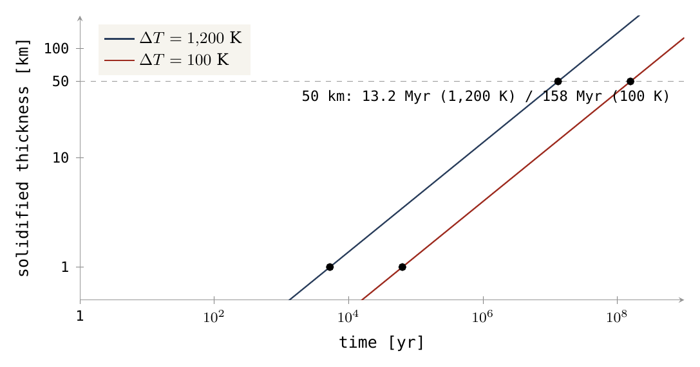
図1は、同じ法則を時間の全範囲にわたって示す。両軸は対数であるので、平方根の法則は、時間が2目盛り進むごとに厚さが1目盛り上がる直線として現れる。紺の線（強い冷却）と赤の線（温かい表面）は平行である。温かい場合は、どの厚さにも同じ倍率だけ遅れて達する。破線は例としての厚さ50 kmを示し、点は表の値である。
組成の配分。月の裏側の地殻は、とりわけ、ドームの表面として上昇したシアル質の外殻――ケイ素とアルミニウムに富む母天体の軽い外層――から築かれる。供給を通じて地球の内部から月に入った内部の物質は、時間とともに凍結し、月の中心とその表側にとどまった。Part Bは、それぞれの相対的な寄与とドームの幾何を検討する。ここで必要なのは、供給通路が流動的なままである間に外側の境界が強化されうることだけであり、見積もりはそれが可能であることを示す。固体の表皮は数日のうちに形成され、その下のメルトは、表皮によって断熱され下から補給されて、流体のまま自由に流れる。
A.8構築の順序
Part Aの各要素はともに働き、その順序は重要である。順序を外れた段階は、本体が担う記録と矛盾するからである。
同時に進む過程。このシナリオでは、内部供給とドームの隆起が時間的に重なり合い、その間も開口部からの放出が続いている。本体は下から供給され、その外殻は本体とともに上昇し、物質は開口部から放出されて戻ってくる――これらすべてが同時に起こる。放出と停止の条件。放出は本体が付着している間は止まらない。洋梨体が成長し本体が地球の中心から遠ざかるにつれてその強さは徐々に減少し、本体が地球の圧力から切り離される切り離しの時点で止まる。外殻が閉じることはこれに何の役割も果たさない。後期火山活動との区別。構築段階の放出を、すでに分離した天体における後期の火山活動と同一視してはならない。それらは付着した本体に属し、自由な月の火山活動とは異なる過程である。
時間の配分。隆起の開始から解放までの全過程はおよそ6億年を要する。隆起と洋梨体におよそ4億年、扁平化に約1億年、そして38.73億年前の解放までにさらに約1億年である。これが環境表の6億年のシナリオの時間枠であり、1億年の場合は感度検証として残る。四つの段階はPart Bで述べる。
ここまでに得たもの。すべてのキログラムをその位置に置く閉じた質量勘定（§A.1）、本体が投げ出されるのではなく運ばれなければならない理由（§A.2）、供給が満たさなければならない力の釣り合い（§A.3）、集中した供給源、熱によって開いたまま保たれる通路（§A.5）、上昇できるほど軽い発泡メルト（§A.6）、そして流動的な内部の上に速やかに形成される凍結した表皮（§A.7）である。圧力、供給速度、エネルギーが十分かどうかは、このPartの次の続きの主題である。
圧力、供給速度、エネルギーは十分か
幾何的な記述には数値が必要である。整合した圧力検証を計算し、ありうる圧力の余剰を流量に換算し、必要なエネルギー収支を定義する。同じシナリオが三つの検証すべてを満たさなければならない。
前節までは供給を言葉で記述した。深部の供給源、熱によって開いたまま保たれる通路、そしてその端で成長する本体である。Part Aのこの続きは、その記述の値を見積もり、それが検証に耐えるかどうかを調べる。三つの問いを順に立て、そのそれぞれに数値で答える。第一に圧力：母天体はその供給源に、深部メルトを共回転半径まで押し上げるのに十分な圧力を保持しているか（§A.9–A.10）。第二に供給速度：もしそうなら、その押しは利用可能な時間内に月質量を通路を通して移動させられるか（§A.11）。第三にエネルギー：質量を持ち上げるのに必要な仕事はどこから来るのか（§A.12）。最後の節（§A.13）は、解放に近い一つの状態において圧力、流動、荷重を組み合わせ、三つすべてが同時に満たされるために連結部がどのような姿でなければならないかを示す。この最後の結果が、Part BとPart Cへの橋渡しとなる。
A.9定義された圧力検証
この節が答える問いは簡単に述べられる。母天体自身の内部圧力は、その中心から共回転半径まで達するメルトの柱を支えるのに十分強いか。それに答えるため、同じ場から二つの圧力を計算して比較する。深部の供給源で利用可能な圧力と、柱が要求する静水圧水頭である。
静水圧水頭とは何か。重力場の中に立つ物質の柱は、その重さによって自らの基部を押し下げる。柱をその位置に保つ――沈みも上がりもしない――ために基部で必要な圧力を、その柱の静水圧水頭と呼ぶ。屋上のタンクへ水を送るポンプは、少なくともポンプとタンクの間の水柱の水頭を供給しなければならない。それに満たなければ、水は届かない。月の供給は惑星規模での同じ問題である。供給源は少なくとも、母天体の深部から本体まで達するメルト柱の水頭を供給しなければならない。一様な場では水頭は単に密度×重力加速度×高さである。ここでは重力加速度は柱に沿って変化し、自転はそれに逆らって働くので、水頭は密度×経路に沿った有効ポテンシャルの変化として計算される（§A.3の式5を積分したもの）。
基準断面。検証は、質量の分割前の母天体の基準断面について行う。表から、、である。すなわち、月の物質をまだ内部に含む母天体全体の質量（ kg）、それについて採用した体積半径（6,517 km）、そしてその初期の1日である5.5時間である。方法上の仮定。解析的な検証のためだけに、計算は均質な球の場と回転する赤道断面を用いる。これは遠心補正を伴う球近似であり、Maclaurin回転楕円体の厳密な平衡解ではない。この選択は算術を透明に保つ。すべての項を閉じた形で書き、手で確認することができ、真の扁平な形状への移行は数値をわずかに変えるにすぎない。
柱の範囲と共回転半径。、とおく。は母天体の平均密度であり、その質量を体積で割ったものである。内部の場は、外部の場はである。一様な球の内部では、重力は中心からの距離に比例して増大する――中心でゼロ、表面で全値――。ある深さより下の質量だけが引くからである。外部では、重力は距離の逆2乗で減少する。柱の検証の終点は次のとおりである。
式(8)は、母天体全体の質量を入れたPaper 2（§A.5）の共回転半径である。すなわち、重力が自転の遠心効果とちょうど釣り合う距離である。それは柱の自然な終点である。より下では正味の引力は内向きであり、柱の1キロメートルごとに、供給源が支えなければならない重さが加わる。では正味の引力はゼロであり、そこにある物質は回転座標系で重さをもたない。その外側では正味の引力は外を向く。したがって水頭はまでだけ支払えばよい。
二つの基準値の区別。これは初期の母天体の全場における基準点であり、移送の終わりにおける二天体の解放距離ではない。それと15,818 kmの基準値との差は、式の中の質量から生じる。15,818 kmは最終的な地球質量で計算され、15,882.9 kmは月の質量の分だけ大きい母天体の全質量で計算される。質量が大きいほど、釣り合い点はわずかに外側に置かれる。
供給源の圧力はどこから来るか。深部の供給源は別個の原動機ではない。それは、その上にあるすべてのものの重さによって押された母天体自身の内部である。母天体の中心では、上に重なる物質の全重量がのしかかる。赤道では自転がその重さをわずかに軽くする。そこでは遠心効果が重力に逆らって働くからである。深部内部から表面へ向かう経路が開くと、メルトをそれに沿って押すのはこの圧力――重さから自転を引いたもの――である。赤道の表面圧力に対する中心の供給源圧力は次のとおりである。
言葉で述べれば、括弧内の第1項は重力の部分である。因子が現れるのは、一様な球の内部の重力が中心のゼロから表面の全値まで徐々に増大するため、半径に沿って平均して半分の強さで働くからである。第2項は、赤道半径に沿って自転が与える軽減である。括弧に母天体の平均密度を掛けると圧力が得られる。150.26 GPaである。これが、母天体が自らの質量と自転によってその供給源に保持する圧力である。
必要な水頭。一定の深部密度と外側の密度をもつ柱では、物質をその位置に保つために基部で必要な水頭は次のとおりである。
柱は二つの区間に分けられる。その中の物質が異なるからである。深部区間は中心から母天体の表面まで延び、密度の深部メルトで満たされる。外側区間は表面から母天体の上のまで延び、密度のより軽い外側の物質で満たされる。各区間は密度×積分を寄与し、はその区間に沿った有効ポテンシャル（重力から遠心を引いたもの）の変化――それに沿って1キログラムを持ち上げるのに必要なエネルギーであり、ジュール毎キログラムで表され、と同じ――である。密度（キログラム毎立方メートル）×1キログラムあたりのエネルギーは1立方メートルあたりのエネルギーを与え、これは圧力である。
式(11)は、中心から赤道表面までの、母天体内部のポテンシャルの段差である。それは式(9)と同じ括弧であり、違いはそれに掛ける密度だけである。釣り合いの規則。この恒等性が検証の核心である。供給源の圧力は母天体自身の平均密度をもつ柱の水頭であり、必要な水頭はメルトで満たされた同じ柱の水頭である。母天体と同じ密度のメルトの柱はちょうど釣り合い、表面より上には上昇しない。母天体より軽いメルトだけが圧力の余剰を得て、その余剰がさらに外側区間を支払わなければならない。
式(12)は、表面からまでの、母天体の外部のポテンシャルの段差である。第1項は外部重力に抗する仕事、第2項は同じ距離にわたって自転が与える助けである。この区間は深部区間の2倍以上の長さであるが、その値はわずかに小さい。重力は距離とともに弱まり、自転の助けは増すからである。二つの積分を合わせると、任意の密度の組に対する水頭が定まる。次節でそれを計算する。
柱は、与えられた場における圧力検証として用いる。その質量と本体の形状への影響はここでは解かない。したがってこの検証を、月質量全体の移送へ自動的に拡張してはならない。それは一つの問い――供給源は共回転半径まで達するメルトの線を支えられるか――に答え、現実の有限な連結部の重さは§A.13に委ねる。
A.10密度の閾値と感度
メルトを表面より上へ持ち上げる条件は密度の差に基づく。供給源の圧力は母天体の平均密度によって決まり、柱を何が満たすかに依存しないが、水頭は柱を満たす物質の密度に依存する。したがって問いは、供給源がどの深部密度を運べるか、そしてその限界がどこにあるかである。
という基本仮定のもとで、式(10)は次の水頭と残余の値を与える。
|
、kg/m³ |
必要な水頭、GPa | 端部荷重と損失の前の残余、GPa |
|---|---|---|
| 1,500 | 82.14 | 68.12 |
| 3,000 | 125.37 | 24.89 |
| 3,500 | 139.78 | 10.49 |
| 4,000 | 154.19 | −3.92 |
| 4,500 | 168.60 | −18.33 |
表の読み方。各行は深部区間を異なる密度のメルトで満たし、外側区間の密度は1,500 kg/m³に固定する。中央の列は、式(10)による、その柱が要求する水頭である。最後の列の残余は、供給源圧力150.26 GPaからその水頭を引いたものであり、柱を支えた後に押す力のうち残る分である。正の残余は押す力が十分であることを意味する。柱は支えられ、その端の本体を担い流れを駆動するための圧力が残る。負の残余は押す力が足りないことを意味する。柱は重すぎ、メルトは共回転半径に達しない。値は線形に変化する。500 kg/m³の変化ごとに水頭は同じ一定の幅だけ増え、残余は同じ幅だけ減り、残余の符号は3,500から4,000 kg/m³の範囲で反転する。Part Aの以降で用いる基準値3,500 kg/m³では、10.49 GPaの押す力の余剰が残る。
能動的な流動と質量の外側への移送は、次の不等式が成り立つときにのみ起こる。
式(13)は圧力の全収支を定式化する。供給源の圧力は三つの成分をまかなわなければならない。柱の静水圧水頭、柱の端における荷重――すなわち通路を押し返す本体そのもの――、そしてメルトの流れに沿った粘性摩擦による損失である。メルトが外側へ移動するのは、三つの成分をまかなった後に余剰が残る間だけである。上の表は第一の成分だけを示しており、そのため最後の列は端部荷重と損失の前の残余と呼ばれる。
式(13)を最大の深部密度について解くと、臨界密度閾値が得られる。
式(14)は、外側区間、端部荷重、損失をまかなった後で、供給源がなお押し上げることのできる最も重い深部メルトを定める。閾値が存在することは§A.9から導かれる。供給源の圧力は母天体の平均密度によって決まるが、深部区間の水頭はそれを満たすメルトの密度とともに増大する。どこかで両者は一致する。状況は、一方を水で、もう一方を油で満たした二本の連結管に似ている。油柱は水柱より高く立つ。油の方が軽いからである。同様に、深部メルトは周囲の母天体より軽いからこそ母天体の表面より上に上昇するのであり、軽いほど高く立つことができる。
荷重と損失を無視すると、となる。荷重と損失に対する感度：荷重または損失が1ギガパスカル加わるごとに、閾値は約34.7 kg/m³下がる――1ギガパスカルをで割ったもの――。他所で費やされる1ギガパスカルは、もはや深部区間には使えないからである。外側区間の密度に対する感度：。これは、外側区間の密度に加わる1 kg/m³ごとに、深部の閾値から0.900 kg/m³が差し引かれることを意味する。二つの積分がほぼ等しく、二つの区間が一つの圧力源を共有するからである。
圧力検証は、密度が3,864 kg/m³より低い深部メルトでは合格し、この値を超えると不合格となる。これはこの機構が深部の物質に課す最初の要件であり、最も明確なものである。揮発性成分に富むメルトはそれを満たし、乾燥したメルトは満たさない。その理由は、溶解した揮発性成分――水やその他の軽い成分――がケイ酸塩メルトの密度を下げ（§A.6）、合格と不合格の間の幅が、それらが与えうる範囲の中にあるからである。表面付近の発泡の密度は、深部で同様の密度であることの証拠ではない。気泡は揮発性成分が溶液から離れるほど圧力が低い所でしか形成されないので、表面付近ではメルトは深部の同じメルトよりはるかに軽くなりうる。密度可変のモデルでは、二つの項を――経路に沿った圧力、温度、組成の関数としての密度――にわたる積分で置き換え、供給源の圧力と重力場も再計算しなければならない。一定密度の検証はその計算の最初の段階であり、その閾値は、深部メルトの状態方程式と照合すべき値である（§D.1）。
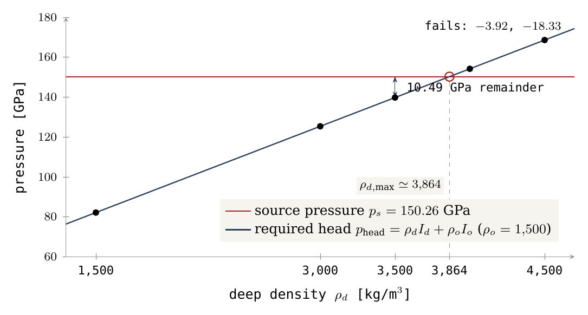
図2は表を二本の線として描く。水平な赤の線は供給源が供給するものであり、メルトに依存しない。上昇する紺の線は柱の費用であり、深部密度とともに上昇する。交点の左側では供給源が勝ち、線の間の垂直な隔たりが残余である――3,500 kg/m³で10.49 GPa、矢印で示す――。交点の右側では柱が勝ち、供給は止まる。交点3,864 kg/m³が閾値である。
ここまでに得たもの：母天体はその供給源に150.26 GPaを保持し、深部メルトが約3,864 kg/m³より軽ければ、これは共回転半径までメルト柱を支えるのに十分である。しかし柱を支えることは、まだそれに沿って質量を移送することではない。次節は、質量がどれほどの速さで動かなければならないかを検討する。
A.11供給はどれほどの速さで働かなければならないか
圧力の余剰は、メルトが流れうることを意味するが、どれだけ流れるかは定めない。正の圧力余剰が見いだされた後は、利用可能な時間枠内に月を築くために、供給が毎秒届けなければならない質量流を定義し、そこから通路に対する要件を導かなければならない。
目標質量の割合がにわたって内部の経路で到着するならば、平均速度は次の関係で定義される。
式(15)は最も単純な勘定である。供給が届ける質量（月質量のうちの内部由来の割合。残りは上昇する外殻から来る、Part B）を、それが到着する時間で割ったものである。
月全体が供給の物質から築かれるという仮定のもとでは、1億年にわたって約、6億年にわたって約の速度が得られる。二つの時間枠は環境表のものである。6億年はシナリオの時間枠、1億年は感度の場合である。内部由来の割合がより小さければ、平均速度はそれに正比例して下がる。これらの速度は、本体における質量の平均的な正味の蓄積を表す。供給された物質の損失があれば、より大きな総供給速度が必要となる。断続的な供給には、活動中により大きな速度が必要となる。供給が時間の一部しか働かないならば、同じ総量を届けるために、働いている間はより速く働かなければならない。
感度検証のために、幾何学的に閉じ込められた区間を、半径、長さの円筒形の通路における、壁でのすべりなし条件のもとでの層流のニュートン流として表すことができる。
各用語には説明が必要である。層流は渦を伴わずになめらかな層をなして動く。ニュートン流体とは、流体の抵抗が一つの数、粘性――物質の流動に対する抵抗であり、水では低く、冷たいガラスや地質時間にわたってクリープする固体マントルでは非常に高い――によって記述されることを意味する。すべりなしとは、通路の壁に接する流体が動かないことを意味し、したがって流れは軸に沿って最も速く、壁の近くで最も遅い。式(16)の第1の部分は、圧力差によって駆動されるとき、半径、長さの通路を通る体積流量を与える。第2の部分は問いを逆にする。それは第1の部分を粘性について解いたものであり、を構築が必要とする体積速度（式15の質量速度をメルト密度で割ったもの）とおく。結果は粘性の上限であり、通路内の物質がなお月質量を期限内に届けられる最も高い粘性である。粘性がより低い物質はすべて合格し、それより硬い物質はすべて不合格となる。
これはPoiseuilleの解[1]であり、ここでは閉じ込められた区間に対する見積もりとして用いる。その壁の境界条件が、閉じ込められていない外側部分の全体にわたって成り立つと仮定してはならない。
、、、に対して、次の粘性の行列が得られる。
|
通路の半径 |
1億年に対する、Pa·s | 6億年に対する、Pa·s |
|---|---|---|
| 100 km | ||
| 500 km | ||
| 1,000 km |
入力は、長さ10,000 kmの通路（ m、深部の供給源から本体までの距離の桁）、基準のメルト密度3,500 kg/m³、そして10 GPaの駆動圧力余剰――§A.10の残余10.49 GPaに近い――であり、月全体が供給によって届けられるとする。
表の読み方。各セルは、与えられた半径の通路を通して与えられた時間内になお月を築くことのできる、最も硬い物質である。列に沿って、上限は半径とともに急激に上がる。幅広い通路は、狭い通路よりはるかに硬い物質を許容する。行に沿って、上限は1億年より6億年の方が6倍高い。より長い時間はより遅い流れで足りるからである。比較として、環境表は硬く冷たい外殻を Pa·sとしている。その値に近づくのは、最長の時間枠における最も幅広い通路だけである。
幾何学的感度の解析：値は通路半径に強く依存する、。同じ圧力余剰と粘性のもとで半径を半分にすると、流量は16分の1になる。幅広い通路は流量を二重に高める。断面積を大きくし、また流れの軸を、流れを引き止める壁から遠ざける。100 kmと500 kmの間で半径は5倍になり、上限は倍になる。これが最初の二行の間の段差である。表の粘性の値は見積もりの数学的な上限であり、マグマで測定された性質ではない。10 GPaの余剰は検証パラメータである。本体を支えることが残りの圧力を消費するならば、その圧力は流れの駆動には使えない。長い時間枠は速度の要件を緩めうるが、その期間全体にわたって通路が流動的で安定であることを必要とする。
ここまでに得たもの：圧力検証が残す大きさの余剰があれば、半径数百km以上の通路は、高温で流動的なままであれば、シナリオの時間枠内に月質量を運ぶことができる。通路の幅は他のどの入力よりもはるかに大きく影響し、§A.13でそれに立ち返る。
A.12エネルギー：仕事の源は何か
圧力と供給速度は質量がどのように動くかに関わり、エネルギーはその移動の費用を何がまかなうかに関わる。月の質量を地球表面から共回転半径まで持ち上げることは重力に抗してなされる仕事であり、モデルはその源を定めなければならない。
目標質量の全量を、固定した地球の場の中で、8,991 kmの接触点から16,400 kmの解放半径まで移すのに必要な重力の仕事を桁で見積もると、次が得られる。
式(17)は、質量の重力場の中で、質量をその中心から距離から距離まで外側へ移動させるのに必要な標準的な仕事である。ここで kmは、月質量の全量をもつ本体が母天体の表面に接するときの中心間距離（§A.2）であり、 kmは赤道上の解放半径である。「固定した地球の場」とは、地球の質量を一定に保ち、本体を点として扱うことを意味する。
この見積もりは、与えられた質量を二つの距離の間で動かすことを指す。それは深部の供給源から成長する本体の完全な仕事の収支ではない。完全な収支には、系全体の重力エネルギーの変化、回転エネルギー、内部エネルギー、損失、そして出ていく物質が運ぶエネルギーを含めなければならない。
エネルギー供給の機構：地球の全結合エネルギーを、自動的に利用可能なエネルギーとして数えることはできない。結合エネルギーとは、地球全体をそれ自身の重力に抗してばらばらにするのに必要なエネルギーである。それは大きいが、利用できる形で蓄えられてはいない。エネルギーが利用可能になるのは、天体がより強く結合した状態へ移るときだけであり、したがってエネルギーを解放する物理的進化が必要である。たとえば、密度の再編成、収縮、内部エネルギーの低下であり、回転エネルギーの交換を伴う。仕事は J程度であり、母天体の結合エネルギーの1パーセントに満たない。それを解放する進化――沈降する鉄と、収縮し冷却する内部――は、メルトの上昇を駆動するのと同じ進化である。鉄が中心へ向かって沈むと、母天体の質量はより近くに集まり、重力エネルギーが解放される。月の持ち上げはそのごく一部しか必要としない。この進化の完全なエネルギー収支は、§D.1に詳述する要件である。
A.13同一状態における合同検証：圧力、流動、荷重
§A.9から§A.11は、圧力と流動を別々に、しかも初期の母天体について検証した。現実の連結部はそれらすべてに同時に、しかもより後の状態で直面する。より小さな地球（月の質量はそこを離れている）、より遅い1日、赤道面の外にある本体、そして通路の端に載る本体の重さである。この節は、一つの通路が一つの同じ状態においてすべての検証に合格できるかどうか――そして細い管としては合格できないならば、どのような形が必要か――を検討する。
三つの量をともに検証するため、Part Cの解放緯度における上昇段階の最後の状態を定義する。地球質量、本体質量、5.77時間の1日、緯度22.5°、そして本体の中心は共回転線の本体半径一つ分内側にある――その遠い側が線に接している（解放時、線そのものの上では半径方向荷重は消え、横方向荷重だけが残る、§C.2）。22.5°における共回転線は17,287 kmにある（Paper 4）。その遠い側が線に接する半径1,889.77 kmの本体は、その中心を15,397 kmにもつ。これが解放前の上昇段階の最後の状態である。本体は、その中心が線に達する前で最も遠い位置にあり、通路にかかるその重さはまだゼロになっていない。断面の仮定：解析的な圧力断面のためだけに、地球の体積半径6,517 kmと均質密度近似を保持する。これらは断面の近似であり、連結された天体の完全な平衡形状ではない。
地球の中心から本体へ向かう軸を定義する。密度2,600における本体の等価半径は1,889.77 kmであり、したがって供給通路の近い端はにある。したがって柱は地球の中心（）から本体の近い側（）まで延び、そこで本体がその上に載る。軸に沿ったポテンシャルは、本体の引力と地球座標系の原点の加速度を合わせたものである。
式(25)は、距離にある柱の一片に働くすべての効果を、1キログラムあたりのポテンシャルエネルギーとして列挙する。第1項は地球の重力である。第2項は本体自身の重力であり、柱を本体の方へ引き、それによって供給の上端付近を助ける。第3項は、地球そのものが静止していないことから生じる線形の補正である。本体は地球の中心を自らの方へ引くので、地球の中心に固定された座標系は加速しており、その中のすべてのものは反対向きの一様な見かけの引力を感じる。第4項は自転の遠心成分である。緯度では、距離にある点は自転軸からしか離れていない。このためが現れる。
均質な地球に対して：
式(26)は一様な球のポテンシャルである。内部では、それは放物線として中心へ向かって深くなり、これは§A.9と同様に重力が中心からの距離に比例して増大することに対応する。外部では、それはよく知られた質点の形である。
式(25)の線形項は、本体による地球の中心の一様な加速度を打ち消す。ポテンシャルの段差とが得られる。これらは式(11)と(12)と同じ二つの段差を、より後の状態で計算したものである。深部の段差はほとんど変わらず、外側の段差はいくらか小さい。主な理由は、柱が共回転半径ではなく本体の近い側で終わり、本体自身の引力が助けるからである。断面に沿った更新された供給源の圧力はであり、ここでは質量の分割後の地球の質量に従う。§A.9と同様に、供給源の圧力は母天体自身の平均密度――今や月を除いた地球のそれ――をもつ柱の水頭である。
流動と抵抗の検証のため、半径の円筒形の通路、深部密度3,500、外側密度1,500 kg/m³、一様な粘性を採用する。質量速度は6億年の時間枠に対する基準平均である。これは状態の検証であり、その状態が6億年続くことの証明ではない。閉じ込められた流れの見積もりを二つの区間に適用すると、全粘性摩擦損失が得られる。
式(27)は、式(16)のPoiseuilleの関係を直列の二つの区間に適用して足し合わせたものである。すなわち、密度のメルトで満たされた長さの深部区間と、密度の物質で満たされた長さの外側区間を通して質量速度を押し通すために、摩擦に費やされる圧力である。質量速度を密度で割ると体積速度になる。したがって軽い外側区間は、同じ質量速度のためにより大きな流速を必要とし、1キロメートルあたりより大きな圧力損失を生む。
半径方向と横方向の荷重応力：端における半径方向荷重は平均応力として、横方向成分はとして書かれる。ここでは、本体が軸に沿って通路の端に押しつける力――回転座標系におけるその重さであり、重力の内向きの引力から軸に沿った遠心成分を引いたもの――であり、は横方向の力である。横方向の力が存在するのは、本体が赤道上にないからである。遠心成分は地球の中心からの線に沿ってではなく自転軸から離れる向きを向き、緯度22.5°ではその一部が本体を横向きに、赤道面の方へ押す。各力を通路の断面積で割ると、通路の端が担わなければならない応力になる。これらの表式は、軸に垂直な断面にわたって平均化されたモデルを閉じるものであり、有限な連結部を横切る圧力分布を解くものではない。半径方向の残余の完全な式は次のとおりである。
式(28)は式(13)の全収支であり、今やすべての成分が一つの状態において計算されている。供給源の圧力から、二つの区間の水頭、端にかかる本体の重さ、流れの摩擦を引いたものである。§A.10と同様に、正の残余は押す力が十分であることを意味する。
|
通路の半径、km |
半径方向荷重、GPa | 流動損失、GPa | 半径方向の残余、GPa | 必要な横方向応力、GPa | 外側区間の質量（月質量単位） |
|---|---|---|---|---|---|
| 500 | 46.18 | 0.01032 | −35.03 | 46.04 | 0.112 |
| 1,000 | 11.54 | 0.000645 | −0.39 | 11.51 | 0.448 |
| 1,500 | 5.131 | 0.000127 | 6.024 | 5.116 | 1.008 |
表の読み方。各行は、同じ状態における異なる半径の通路を表す。荷重と摩擦を差し引く前に、供給源と水頭は約11 GPaを残す。148.46 GPaから二つの区間の水頭を引いたものである（どの行でも、残余に半径方向荷重と流動損失を加えたもの）。表は、残りの勘定がそこから何を差し引くかを示す。半径方向荷重は、通路の断面に分散された本体の重さである。それはに従って、500 kmにおける46.18 GPaから1,500 kmにおける5.131 GPaへと下がる。同じ重さがより大きな面積に載るからである。流動損失はどの行でもごく小さく――最大でも約100分の1ギガパスカル――、したがってこの状態では摩擦は制約要因ではない。半径方向の残余は残る分である。それは500 kmの通路では強く負であり、1,000 kmではゼロをわずかに下回り、1,500 kmでは正である。横方向応力は、通路の端が耐えなければならない横向きの押しである。それはどの行でも半径方向荷重とほぼ同じ大きさである。22.5°において、しかも線にこれほど近い所では、本体の有効重量の横方向成分と半径方向成分が同程度の大きさになるからである。最後の列は、通路自体の外側区間に立つ物質の質量を月質量を単位として表したものである。それはに従って増大し、500 kmにおける月の約10分の1から、1,500 kmにおける月一つ分に達する。
外側区間の質量は、地表より上の通路の円柱から幾何学的に計算される。
式(29)は、半径、長さの円柱――地球表面より上に立つ通路の部分――の体積に、それを満たす物質の密度を掛けたものである。
細い管の不合格と、質量のない連結部の矛盾。これらの入力では、半径方向の静水圧の釣り合いは通路半径約1,017 kmから正の値に転じる。しかしこの閾値においてすでに、通路の外側区間は月質量の約0.46を含む。したがって、無視できる質量の連結部という作業仮定は、半径方向の検証に合格する範囲では整合しない。この質量は系の貯留区分の一部である。式(1)の貯留区分の間で割り当て直し、その重力場と運動量を含めなければならず、状態を変えずに与えられた二つの質量に加えてはならない。平易に言えば、細い管が不合格となるのは、小さな断面積に集中した本体の重さが残余をゼロより下に押しつぶすからである。その重さを分散できるほど幅広い管は、それ自体が月のほぼ半分の物質を含むほど幅広い。連結部は、狭くかつ質量がない、ということはありえない。
静的な流体媒質の限界と横方向荷重の制約。半径方向の断面を通してのみ圧力を伝える静的な流体は、横方向応力を与えない。静止した液体は押すことはできるが、横向きの力を担うことはできない――それが液体を液体たらしめるものである。メルトの柱は軸に沿って本体の重さを担うことはできるが、それだけでは本体が赤道の方へ押されるのを防ぐことはできない。ありうる解は、連結部の形状、粘性応力または荷重を支える物質の強度、そして流れの中で伝えられる運動量を定義する必要がある。加熱は通路を容易にする。横方向荷重は連結部の形状によって担われ、それがPart Bのドームの幅広い基部である。
密度と時間枠に対する感度。密度に対する感度は依然として決定的である。外側密度を2,000 kg/m³に上げると、他の入力を変えずに、半径1,000 kmにおける残余は約に下がる。したがって外側区間の密度のわずかな増加は、§A.10と同じ理由で、閾値半径を1,000 kmよりはるかに外へ移す。柱の中の1 kg/m³ごとに水頭が加わるからである。供給時間を1億年に短縮すると、見積もりでは流動損失が6倍になるが、横方向応力の要件や連結部の質量を取り除くことはない。6倍になっても、流動損失は三つの行すべてで1ギガパスカルをはるかに下回るので、結論は時間枠に依存しない。
これは円筒近似の定量的な限界である。圧力検証に合格することは、まだ完全な構築検証に合格することではない。この結果は、モデルにその連結部がどのような姿でなければならないかを告げる。半径方向の釣り合いに合格するほど幅広く（約1,000 km超）、したがってそれ自身の質量と横方向応力が勘定に入るほど質量が大きい。その連結部がPart Bのドームの基部である――幅3,000 kmの接触面であり、幅で6,000 kmの基部の半分、面積でその4分の1である――。そしてPart Cは、本体がどのように共回転線で分離を始め、そのすぐ外側で解放されるかを示す。幅3,000 kmの接触面は半径1,500 kmをもち、これは表の最後の行で、半径方向の残余が正となる。その横方向荷重は流体圧力によってではなく、その形状、すなわちより幅広い洋梨体の上に立つ幅広く高温の基部によって担われる。
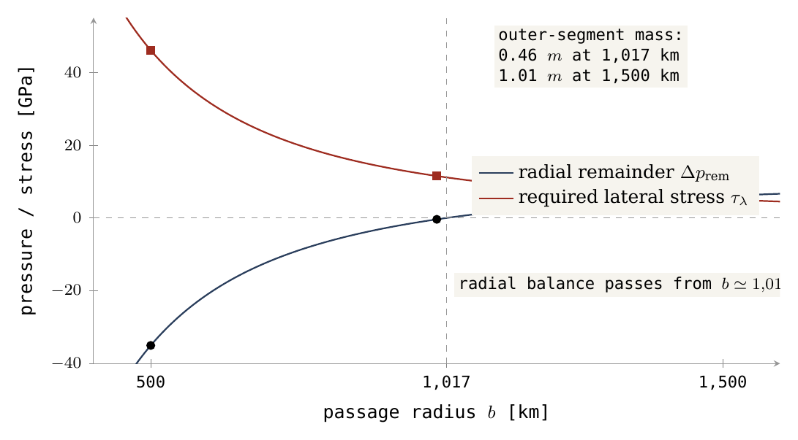
図3は、通路が広がるにつれて検証を決める二つの量を示す。半径方向の釣り合いの収束：紺の曲線、半径方向の残余は、強い負の値から上昇し、約1,017 kmでゼロの線を横切る。破線の右側では半径方向の釣り合いが成り立ち、系はメルトの上昇を続けさせる圧力の余剰を与える。横方向応力：赤の曲線は通路の拡大とともに下がるが、全体を通じて数ギガパスカルにとどまる――流体圧力だけでは担えない横方向荷重である。通路の質量：図の上部の枠は通路の代価を記録する。外側区間は閾値ですでに月の0.46の重さをもち、1,500 kmでは月一つ分となる。流動損失はごく小さく、この尺度では制約要因ではない。
ここまでに得たもの：母天体の圧力は、発泡メルトの柱を共回転半径まで支えるのに十分である。数百キロメートル以上の通路は、シナリオの時間枠内に月質量を運ぶことができる。持ち上げの仕事は J程度であり、核の中心へ沈む鉄が解放するエネルギーのわずかな部分である。しかし、一つの状態において三つの条件すべてを同時に満たす連結部は細い管ではなく、その横方向荷重をその形状によって担う、幅広く、高温で、質量の大きな構造である。Part Bはその形状を外側から記述する。
外側から：洋梨体の先端の上の本体
内部供給は物質を持ち上げるが、それだけでは、月の地殻がどこから来たのか、なぜそれが裏側で厚いのか、なぜ月が両半球に広がる太古のクレーター記録を担っているのかを説明しない。アプローチ：外殻を、Part Aが供給するのと同じ本体の表面として検討する。それを四つの段階を通じてたどり、各段階でその幾何を定め、それが何になるかを導く。
Part Aは、本体の内部で上昇する物質――深部の供給源、それを駆動する圧力、供給の速度とエネルギー――をたどった。このPartは母天体の外側のシアル質外殻――若い地球の表皮――をたどり、それを、Part Aが深部から供給するのと同じ本体の表面として検討する。その問いは簡単に述べられる。本体がその下と上で築かれている間に、構築領域を覆う地球の外側の表皮に何が起こるのか、そしてその表皮の各片は、現在われわれが見る月のどこに行き着くのか。その答えがモデルの幾何学的な核心である。ここではそれを段階ごとに一つずつ、四つのステップで築き、各ステップの描像は次のステップに進む前に数値によって定める。
Part全体は一つの描像の上に立っており、それを初めから心に留めておくとよい。地球の外殻は、本体が上昇する間、後に残るのではない。それは上部ドームの表皮として本体とともに上昇する。本体そのものは自由に浮かぶ球ではなく、洋梨体の先端の上に載った扁平な球である。二つのドームが重なり合っている――丸い先端を上から包む下部ドームと、その上に高くそびえる上部ドームである。後に本体が外向きの球形化によって球になるとき、その表面の各部分は全体に対する自らの分を保ち、したがって各部分を現在の月までたどることができる。
本論文の段階とシリーズとの対応。本論文は独自の段階番号を用いる。段階1、扁平な段階（§B.1）。段階2、洋梨体の先端の上の本体（§B.2）。段階3、外向きの球形化（§B.4）。段階4、扁平化、内向きの球形化、解放（§§B.6, C.4–C.8）。シリーズ全体は月の歴史を段階0–8で番号づける。0は隆起の前、1は隆起、2はドーム、3は洋梨体、4は球形化（外向き、次に扁平化、次に内向き）、5は解放、6は洋梨体の行方、7は後退、8は現在である。二つの番号づけは次のように対応する。本論文の段階1は、シリーズの段階0と隆起の始まりである。シアル質外殻はまだ活動中の供給の上に平らに横たわっている。段階2は、質量が洋梨体の先端の上にドームとして載る時点で見た、隆起、ドーム、洋梨体（シリーズの段階1–3）である。段階3は、シリーズの段階4の最初の部分、外向きの球形化である。段階4は、シリーズの段階4の残り――扁平化と内向きの球形化――とシリーズの段階5、解放である。シリーズの段階6、洋梨体の行方は本論文のPart Eであり、段階7、後退はPaper 4, 軌道であり、段階8、現在の月は、§§B.4–B.7が表面の各領域を位置づける場所である。
B.1段階1――扁平な段階と寄せ集められた外殻
本体が上昇する前、構築領域を覆う母天体の外側のシアル層は、活動中の供給の上に平らに横たわっている。「シアル質」とはシアル、すなわちケイ素とアルミニウムに富む地球の地殻の軽い上層を指す。その下には、ケイ素とマグネシウムに富むより密度の高い層、シマがある。
太古のクレーター記録の地球起源。深部の物質は開口部を通ってシアル層に達し、そこから放出される。放出物の一部は戻ってきて露出した外殻に着地し、クレーターをつくる（Paper 6, クレーター）。この段階の外殻は、月の地殻とその最も初期のクレーター記録の源である。このことには意味がある。月の最も古い表面は月の上で形成されたのではない。それはここ、地球の表面で、本体が存在する前に形成され、後に構造の上昇とともに運び上げられた。
供給源領域の面積の幾何。ドームを形成することになる外殻の初期面積は、結果として生じるドームの表面積とは異なる。著者の復元による太平洋盆地の面積（図4）は、縁海を含めて約 m²、含めずに約 m²と見積もられる――段階2における上部ドームの表面積（ m²、下記）の1.4から2.4倍である。この描像では、ドームが形成されるにつれて、その領域を覆う外殻は引き伸ばされ、面積で最大約2倍の比率で内側へ寄せ集められた。テーブルに平らに広げた地図が、その中央を持ち上げると内側へ寄せられるのと同じである。したがって盆地は、ドームそのものの占める範囲ではなく、寄せ集められた物質の供給源の面積を示す。これは現在の現象の一つの読みであり、本論文はPaper 2と同様にその難点を述べる。現在の太平洋の海底は180 Myrより若く、この読みはその下にあるリソスフェア――地殻と最上部マントルからなる地球の硬い外層――の半球的な非対称性を指す。リソスフェアは、現在それを覆う海底より古く、より深く根を張っている。
洋梨体の基部とその背面。図4に示した領域は、傾いた状態の洋梨体を上から見たものであり、その足もとではない。洋梨体の基部はその東、アメリカの方にあり、その幅全体にわたって開口部をもっていた――洋梨体の中へ、そしてそれを通って月へと通じる開口部である。著者の復元では、その中心はKiribatiのLine諸島のKiritimati付近――London、Paris、Polandの村のそば――、約1.9°N, 157.5°Wにあり、以前の読みから東南東へ約4,800 kmの位置である。
西への傾き：自転の遅れ。洋梨体はまっすぐには立っていなかった。その理由は地球の自転である。引き伸ばされるにつれて、自転軸から遠ざけられたその外側の部分は、スケーターが腕を広げると腕が遅れるように、地球の自転から遅れ、洋梨体全体は後方の西へ傾き、その先端とその上の月は後ろへ引きずられた（§C.8）。傾いた洋梨体の胴体は、25°N, 165°E付近を中心とする北太平洋中央部の上に横たわっていた（図4）。北への傾き：斜めの供給。赤道付近の基部から、洋梨体の先端はPaper 4の解放緯度である約22.5°Nに達した。自転はこの北向きの傾きを与えない――どの緯度でも、その横向きの押しは赤道の方を向く――。それは供給から生じる。深部の供給源、すなわち§A.4の集中した供給領域は赤道の北にあり、供給はそこから斜めに、基部の北方へ上昇し、洋梨体をともに北へ運んだ（§D.1）。
縞の痕跡（Paper 9）。洋梨体の西側、今日その下に日本がある側はその背面であり、解放後に地球へ回収された。傾くにつれて張力のもとで引き伸ばされた洋梨体の前面は、Paper 9, 縞の縞へと回収された。Paper 9はまた先端そのものの痕跡の位置を特定する。縞の系の二つの屈曲の間にある、9.3°N, 169.3°Eを中心とする幅3,360 kmの領域であり、座標によれば基部の西約3,760 km（以前の版では3,770 km）――傾いた洋梨体がその先端を運んだ方向――である。一方、内側へ回収された背面は西太平洋の弧の中にある。解放時の先端の22.5°Nとこの痕跡の9.3°Nは異なる量である。前者は解放時における地球の中心から見た月の中心の方向であり、後者は現在の表面における回収された先端の痕跡であって、縞の系の赤道の約15°北にある。両者は異なる座標系に属し、二つの座標系の関係――軸――は今後の課題である。
質量の保存と深部の領域。洋梨体は地球の質量から離れることはなかった。それは解放時に失われなかった。解放後、分別作用が数千万年から数億年をかけて徐々にそれを地球へ回収した――その重い部分は洋梨体の基部の下で地球の深部へ（Part E）、その前面は北太平洋の縞へ、その背面は西太平洋の弧へ――。質量は地球の外側の高所から内側の深部へ移った。基部は、マントルの底にある太平洋大規模低速度領域――地震波トモグラフィー像に見られる広い領域であり、そこを地震波は周囲のマントルよりゆっくりと伝わる――の上にある。これはHawaii付近から南へ広がるその領域の公表された地図に基づく。基部からその領域の中心と縁までの測定距離は§E.4に示す。深部の領域の性質は未決のまま残す。

図4は、傾いた物体を上から見た図として読むべきである。北太平洋中央部の示された区域は、洋梨体が西へ後方に傾いたときに、その胴体が地球の上に横たわっていた場所である。洋梨体の足もと、すなわちそれが地球から立ち上がった所は、その東、赤道に近いKiritimati付近にあった。キャプションに挙げた二つの縁は、アジア側とアメリカ側で供給源領域を区切る。
ここまでに得たもの：活動中の供給の上にある平らなシアルの外殻。それはすでに回帰物質によるクレーターを担い、太平洋の大きさの領域から内側へ寄せ集められている。そして、後に洋梨体が立ち、傾いた場所である。
B.2段階2――洋梨体の先端の上の本体
この節は、本体が初めて本体として形をなす時点におけるその形状と寸法を定める。それはどれほどの大きさか、その表面はどのように分かれるか、そしてどれほどの密度でなければならないか。中間段階では、本体は自由に浮かぶ独立した天体ではない。それは§C.7の洋梨体の先端の上に載り、その先端は幅広い。接触面は幅6,000 kmである。本体は、重なり合う二つのドームからなる扁平な球である。下部ドームは湾曲した先端の上に横たわり、その曲率の輪郭に沿う。曲率半径約4,000 kmの先端は、接触面の中央の下で本体の中へ約1,350 km入り込む。上部ドームはその上に立ち上がり、下部ドームは先端を包む。1,350 kmという数値は幾何から導かれる。半径約4,000 kmの曲面が6,000 kmの弦にわたると、その中央で縁の線より約1,350 km高くなる。したがって本体の下面は平らではない。それは、頭にかぶせて引き下ろした帽子のように、下から先端によって押し上げられている。月質量の全量に対する本体の幾何：
| パラメータ | 洋梨体の先端の上 | 解放時の球、1,890 km | 現在の月、1,737 km |
|---|---|---|---|
| 上部ドームの面積 | m²（67%） | — | — |
| 下部ドームの面積、先端の上 | m²（33%） | — | — |
| 全表面積 | m² | ||
| 全体積 | m³ | ||
| 月質量に対する密度 | 1,300 kg/m³ | 2,600 | 3,344 |
| 接触面の縁からの上部ドームの高さ | 3,650 km | — | — |
表は、同じ質量――月の全質量――の諸量が、付着段階から現在までの三つの状態でどのように変わるかを示す。行に沿って、最初の状態から最後の状態へ読むと、本体は小さく緻密になっていく。洋梨体の先端の上では大きく軽く、その体積は現在の2.5倍である。解放時の球としてはその半径は1,890 km、密度は2,600 kg/m³である。現在、その半径は1,737 km、密度は3,344 kg/m³である。第1列を上から下へ読むと、洋梨体の先端の上での表面の3分の2が上部ドーム、3分の1が先端の上に載る下部ドームである。この二つの部分が、§B.4の変換規則の出発点である。
ドームの高さと発泡した打ち上げ状態。質量が一定であるため、上部ドームの高さは密度によって直接決まる。同じ接触面の上のドームが高いほど体積は大きく、密度は低い。同じ接触面の上の同じ質量は、上部ドームが半球と同じ高さ3,000 kmであれば約2,000 kg/m³の密度をもち、可能な最低の高さ2,450 kmであれば現在の3,344をもつ（図7）――最低であるのは、月質量の天体は現在の月より緻密にはなりえないからである。モデルは高いドームを採用する。1,300 kg/m³は、Part Aの圧力検証が要求する発泡した打ち上げ状態であり――そこで採用した1,500に対して――、Paper 7, 極の扁平化が始まる密度である。「発泡」とは気体の気泡に満ちたメルトを意味する。膨らむパン生地が、その材料である小麦粉と水より軽いのと同じである。軽い柱こそ、Part Aの供給源圧力が共回転線まで持ち上げられるものである。本体は発泡しており、その上部ドームは高くそびえる。
自己重力と潮汐による引き伸ばし。下部ドームは母天体との接触面である。 m²である。この段階では、本体の自己重力――本体をまとめておく自身の質量の引力――は、母天体の潮汐による引き伸ばしに対して小さい。潮汐による引き伸ばしは、本体の近い側と遠い側に対する地球の引力の差から生じ、本体を外へ引き伸ばそうとする。§C.4の力の比は約0.11である（本体の大きさをその全高約5,000 kmとし、中心を地球の中心から約13,000 kmとした場合。2,381 kmの等価球ではこの比は約1となる）。したがって本体自身の引力は、その全高にわたる引き伸ばしの約9分の1にすぎない。それゆえ本体は保持されている。それは先端の上のドームであり、まだ独立した天体ではない。
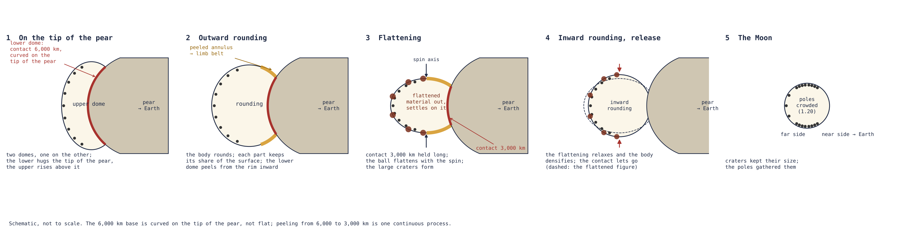
図5は、外部の部分の発達を五つの図で示したものであり、番号順に読むべきである。パネルは段階ではなく図として番号づけられている。パネル(1)は本論文の段階2、すなわち二つのドームの状態で幅広い先端の上に載る本体である。パネル(2)は段階3、外向きの球形化である。パネル(3)と(4)は段階4、扁平化と内向きの球形化である。そしてパネル(5)は現在の月である。まずパネル(1)の二つのドームと、下部ドームが先端と接する線を見てほしい。次にパネル(2)でその線が内側へ縮むのをたどり、パネル(3)で本体の輪郭が扁平になり、パネル(4)で再び丸くなるのをたどる。内向きの球形化は切り離しの前に完了する。解放時までに本体は球形となり、その外殻は剛体となっていた（Paper 2, §B.7：軸比は最大でも1.04）。
B.3何が動き、何が動かないのか
地殻が地球から月へ何千キロメートルも移動する様子を思い描く読者は、どのような力が地殻をそれほど遠くまで運ぶのかと問うだろう。外殻は確かに移動するが、母天体の上を引きずられるのではない。その運動は二つの成分からなる。持ち上げ――外殻は、それを運ぶ基盤となる洋梨体の胴体とともに上昇する。そして滑り――上昇と並行して、外殻はその下のシマから徐々に分離し、洋梨体をその先端まで、本体の中へと滑り上がる。自転の力が外向きの分別の方向に滑りを駆動し、シアルとシマの間の「潤滑された」層、すなわち非常に弱いせん断層がそれを容易にする（§C.10）。先端が独立した天体として分離するのはこのためである。（§B.1の内側への寄せ集めは、ドームの前の段階1に属する。）
段階3における接触面の縮小：段階3の間に内側へ縮むのは外殻ではなく、下部ドームの環帯――接触面の縁とその中心の間にある本体の下面の環であり、本体の露出した表面――である。半径3,000 kmの縁から半径1,500 kmの接触面まで、すなわち段階3の全体を通じて約1,500 kmの内向きの移動が、同じ弱い境界面の上で起こる。レオロジー構造。ドームには層状のレオロジー構造が必要である――「レオロジー」とは、各層が荷重のもとでどのように流れるかという意味である。すなわち、冷たく硬い外殻（ Pa s、において幅100 kmのクレーターが yrの間に緩和しないように保つ値）が高温で流動的な内部の上にあり、両者の境界面に最も弱い層がある。ここでは粘性、すなわち物質の流動に対する抵抗である――蜂蜜は水より粘性が高く、冷たい外殻はそのどちらよりも比較にならないほど高い。 Pa sの外殻は、幅100 kmのクレーターの形を1,000万年間沈み込むことなく保つ。時間経過。接触面が6,000 kmから3,000 kmへ剥がれることと本体の球形化には数百万年を要した。初めはゆっくりと数億年にわたり、終わりに向かってより速く数千万年にわたった。外殻の時間経過は上昇の時間経過である。
自己重力が外殻を押さえつける。自転の力が滑りを駆動する一方で、発達中の本体の重力は外殻をその表面に押さえつける。上部ドームの頂部では本体の自己重力は約0.9 m/s²であり（等価球、すなわち同じ体積の球として、1,300 kg/m³で2,381 km）、半径1,890 kmの閉じた本体では1.37 m/s²に上がる。本体の質量中心を中心とする表面では、この重力は表面に垂直であり――まっすぐ本体の中へ向かう――、外殻を保持するが、接線方向の駆動力には寄与しない。シアルの先端への滑りは自転の力によって駆動される。
B.4段階3――外向きの球形化、接触面、そして変換規則
この節はPart Bの中心的な問いに答える。扁平な本体が球になるとき、その表面の各部分はどこへ行くのか。本体は§C.7の洋梨体の先端にかかる荷重であり、段階3と4は、その上の本体が球形化して解放される間に引き伸ばされる同じ先端である。外向きの球形化と接触面の縮小。自己重力が増すにつれて、本体は外向きの球形化を経る（§C.4）。扁平な本体は、一定の体積のまま、膨張せずに球になる。母天体との接触面は6,000 kmから3,000 kmへ狭まって付着したままとなる。下部ドームの残り、すなわち二つの直径の間の環帯は、それが載っていたシアルとともに接触面の縁から内側へ剥がれながら、徐々に離れる（§C.4a）――丸い台の上に押しつけられた、柔らかく半分しぼんだ球が、膨らまされると縁から内側へ台から剥がれていくのと同じである。この過程は連続的であり、時間を要する。その終わりには、本体は、連結部がくびれではなく層となるほど幅広い円盤の上で支えられている（§C.5）。
本体の表面が球の上で何になるかは、一つの規則によって定まる。外向きの球形化において、各部分は表面の自らの分を保つ。
この規則によれば、扁平な本体の表面の7%を覆う部分は球の表面の7%を覆い、他のすべての部分についても同様である。球の上では、一点から測った表面の割合は、その点からの一定の中心角になる。球の7%を覆う冠はその中心から約に達し、33%を覆う冠は約に達する。角度を測る基準点は接触面の中心――約22–24°Nにある洋梨体の先端――である。領域は、著者が描いた接触面の中心、地球直下点から34.0°にある24.1°N 335.2°Eのまわりで計算される。表は、本体の三つの部分にこの規則を適用する。
| 先端の上の部分 | 面積 | 割合 | 接触面の中心からの角度 | 月の上では |
|---|---|---|---|---|
| 接触面、3,000 km | m² | 7% | – | 幅約1,900 kmの表側の冠 |
| 剥がれていく環帯 | m² | 26% | – | 帯（剥離で露出したシアル） |
| 上部ドーム | m² | 67% | – | 裏側と外側の帯 |
表の色は地球から外へ向かって並ぶ。赤は接触面、すなわち最後まで地球に触れていた部分。橙は環帯、すなわち球形化の間に剥がれた部分。青は上部ドーム、すなわち初めから宇宙空間に露出していた部分である。各行は横に読む。部分、洋梨体の先端の上でのその面積、全体に対するその割合、そして球の上でそれが占める角度である。接触面と環帯を合わせると下部ドームの33%となり、上部ドームは残りの67%である。現在の月の上での冠は幅約1,900 kmである。
球は同じ体積の扁平な本体より表面が小さい―― m²に対してであり、面積で0.68倍、長さで0.83倍――。そしてすべての部分が自らの分を保つので、縮小はどこでも一様に働く。それはどの領域もどのクレーターも互いに対して移動させない。球は常にその体積に対して最小の表面をもつ。したがって外向きの球形化は表面を縮めるが、縮小した写真がすべての図形をその位置に保つように、一様に縮める。構築の露出の順序は、接触面の中心のまわりの三つの同心の領域として月の上に記されている。
約の冠は接触面であった。それは解放まで完全には覆われなかった。Serenitatisが最初にそこから剥がれ、Imbriumが最後に切り離された。
からまでの帯は剥がれていく環帯――本体が載っていたシアルであり、接触面が縁から円盤へ縮むにつれて母天体から剥がれた――であり、外向きの球形化の間に露出した。
より先の裏側は上部ドームであった。全体が外殻であり、扁平な段階から宇宙空間に露出し、そのクレーターは運び上げられた。
後の段階における区分の保存。角度はその後の段階を通じて保たれる。外向きの球形化に続くもの――扁平化と内向きの球形化（Paper 7）――は、表側に対する裏側ではなく、赤道に対する両極を変えるからである。扁平化では自転が本体をその赤道で広げ、両極で低くし、内向きの球形化ではこれが元に戻る。両過程は自転軸のまわりに対称であり、表側と裏側の区分をそのままに残す。本論文は領域を、盆地と照合して検証すべき要件としてPaper 11, 要件に引き渡す。冠をProcellarum領域と同定するのはPaper 11であり、本論文ではない。
表側における地理的な入れ子。丘の基部と最後の接触面は、いずれも現在の表側の上に、LROC地図（Lunar Reconnaissance Orbiter Cameraの地図）上のそれらの輪郭から描くことができる。
| 領域 | 構築時の幅 | 現在の中心 | 内部にある表側の月の海 |
|---|---|---|---|
| 丘――隆起の基部 | 6,000 km | 16.6°N 13.1°E | 99% |
| 接触面――最後の3,000 km | 3,000 km | 24.1°N 335.2°E | 66% |
| Mare Imbrium――最後の供給開口部 | — | 37.6°N 340.0°E | 接触面の内部 |
表は三つの領域を入れ子にしており、それぞれがその上の領域の内部にある。段階2で本体が載っていた隆起の基部である丘は、表側の月の海――表側の暗い平原――の99%を含む。付着したままであった最後の3,000 kmである接触面は、その3分の2を含む。そしてMare Imbriumは接触面の内部にある。
盆地の切り離し。両領域は表側にあり、接触面は丘の内部に、Mare Imbriumは接触面の内部にある。地球内部から上昇した圧力と供給は、二つの主要な開口部ImbriumとSerenitatisを通って本体に入った。Serenitatisが最初に剥がれ、最後の供給開口部Imbriumは切り離しまで連結したままであった――最後の連結である。Imbriumは接触面の内部にあるが、必ずしもその中心にあるわけではない。規則の角度は接触面の中心24.1°N 335.2°Eのまわりで測られる。規則は領域の大きさを定め、輪郭はそれらが現在どこにあるかを定める。方法上の分離。二種類の情報は意図的に分けて扱う。規則は割合の幾何学的計算であり、地図に依存しない。輪郭は地図の読みであり、計算された領域がどこにあるかを示す。
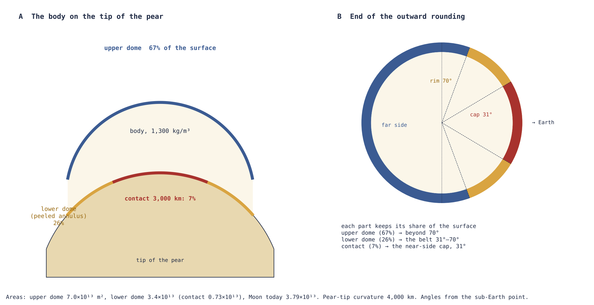
図6は変換規則の表を図にしたものである。パネルAで扁平な本体の三つの部分をそれぞれ見つけ、パネルBで球の上の同じ部分を見つけてほしい。見るべき点は、何もその順序を変えないことである。下面の中心にある接触面は表側の中心にある冠となり、そのまわりの環は冠のまわりの環となり、上部ドームは球の残りを包む。
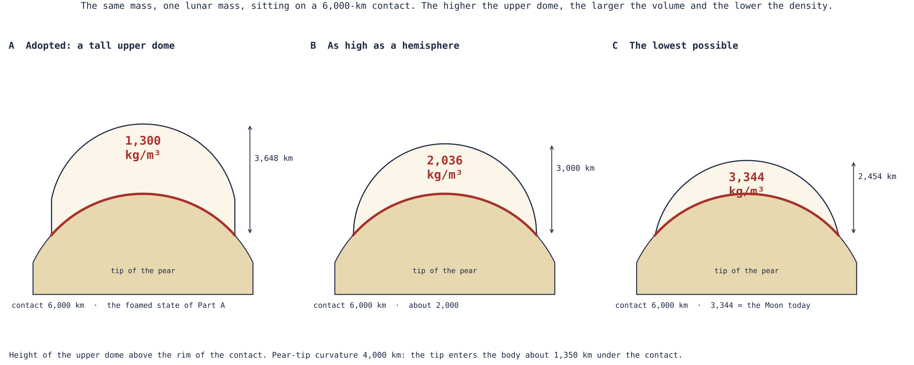
図7は、§B.2で用いた上部ドームの高さと本体の密度の関係を、キャプションに挙げた三つの場合とともに示す。ドームが高いほど密度は低い。採用したドームは軽い側の端にあり、そこで本体はPart Aが要求する発泡密度をもつ。
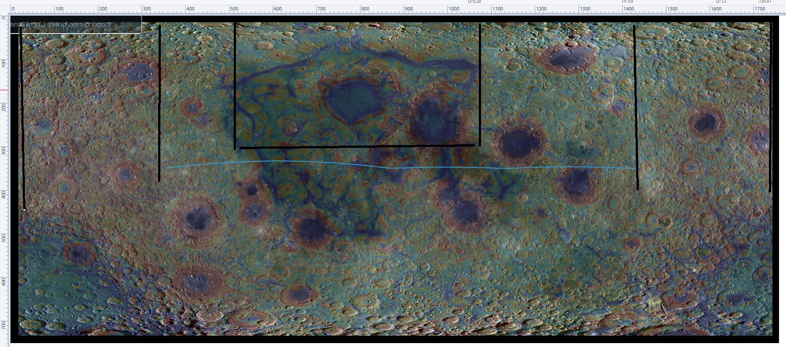
図8は規則を実際の月へ持ち込む。双子の探査機による重力ミッションGRAILは、月の重力場を、そしてそれを通じてその地殻の厚さを地図化した。青線は、段階2の本体の基部――下部ドームの縁――が現在どこにあるかを示し、黒線は最後の接触面を示す。暗い月の海を見てほしい。そのほぼすべてが青線の内部に、大部分が黒線の内部に入る。
ここまでに得たもの：洋梨体の先端の上の本体の幾何を月の地図――表側の冠、そのまわりの帯、そして裏側――に変換する規則であり、各領域は異なる時期に露出した。
B.5開口部
本体のシアル質外殻は連続した地殻ではない。Part Aの供給は開口部を通ってドームに達し、物質はそこを通って放出される。段階1ではそれらは平らな外殻の月の海であり、段階2では上部ドームの上にあるものはその上昇とともに露出し、下部ドームの下にあるものは解放まで覆われたままである。したがって開口部は、露出の時期と、そこを通ったものによって互いに異なる。露出した開口部（頂部と側面）：上部ドームの上の開口部は露出している間活動しており、物質はそこを通って外側へ放出された。覆われた開口部（表側の月の海）：下部ドームの下の開口部は内部の通路であった。覆われている間、それらは地球の圧力を洋梨体を通して、われわれが見る月の海へ、そしてそこから月の中へ伝え、物質は管の中を通るようにそこを通過した。
盆地の露出の順序。SerenitatisはImbriumより前に露出し、露出したときにはまだわずかに活動していた。そのまわりの環には飛沫が見られるが、巨大なクレーターはない。大型クレーターは、圧力によって押し出された大きな物質によってつくられる。月の海のまわりの環にある小型クレーターは沸き立ちと飛沫から来ており、その大部分は月の海の中へ戻るが、小さな部分はその縁に着地してそこに痕跡を残す。Imbriumは最後に露出した。それが露出すると、月の内部圧力は止まり――即座にではなく、しかし速やかに――、それとともに月の海の噴出も止まった。地球はそれ自身の活動を続け、あらゆる方向へ物質を投げ続けた。その大部分は小さなものであった。その一部は地球へ戻り、一部は月に着地した。小型クレーターが表側を含む月全体を覆っているのはこのためである（§C.11）。
この描像の観測上の形――どの盆地がどの種類であり、それぞれがどのような痕跡を担うべきか――は月の記録の問題であり、Paper 11で検討する。ここでは開口部は、Part Aの供給がPart Bの外殻と出会う場所としてのみ登場する。
B.6本体に担われる記録
扁平な段階（段階1）で回帰物質によって外殻につくられたクレーター、あるいは段階2で上部ドームの上につくられたクレーターは、本体が球形化するにつれて外殻とともに移動する。これは層序――何が何の上にあるかから順序を読むこと――であり、新しい物理学ではない。該当する区間についてである。言葉で述べれば、その表面の一片が覆われる、あるいは移される前に形成されたクレーターは、それとともに運ばれる。保存の条件。外殻がその形を保てば記録は残る。これが外殻を外殻たらしめる要件である（§B.3）。すなわち、上昇の yrにわたって表面で Pa s程度以上の粘性である。外殻は嵐の最初の部分で早期に硬化した。硬い外殻は、本体が成長しても引き伸ばされず、球形化しても圧縮されず、その上のクレーターはその大きさを保った。
記録は三つの段階で書かれる。
外向きの球形化では、既存のクレーターは表面とともにどこでも同じように変化し、それと並行して新しい回帰物質が絶えず到来する。この段階で両極が形成される。
続く扁平化では、クレーターの大部分が、そしてその中の最大のものが形成される。分化が進み、放出される物質は水に富み、すでに形成された両極はより多くを受け取る。
内向きの球形化では、扁平化が緩和し本体全体が緻密化するにつれて、クレーターはその大きさを保ち、その間の表面が閉じる。主に閉じるのは両極であり、両極がそれらを集める（Paper 7）――布に縫いつけたボタンが、布を寄せると互いに近づくが、ボタン自体は同じ大きさのままであるのと同じである。
集団の密度に関する予測。帯と冠は下部ドームの下にあり、露出する前にはクレーターを受け取らなかった。それらの最も古い集団は裏側のものより若い。最も古い集団が最も高密度である裏側、それより低い帯、最も低い冠――これが規則の予測するものであり、Part Dでその検証とともに定式化する。これが変換規則が月に引き渡す検証である。領域が露出した順序は、それらの最も古いクレーターの順序の中に読み取られなければならない。
舞台裏。このPartの初期の版では、裏側はその面積の3分の1まで閉じ、そのクレーターは0.58倍に縮み、その密度は3倍に上がるとしていた。クレーターは、尺度の変化があれば動くはずの指標――単純クレーターから複雑クレーターへの遷移直径、等しい面積の中の最大のクレーター、古いものと新しいものの比較――によって直接検討された（Paper 7, §D.5）。小さなクレーターは単純な椀形である。ある直径を超えると段丘状の壁と中央丘をもつようになり、それらを担う表面が圧縮されていたならば、この遷移直径は変わっていたはずである。裏側の高地と表側の高地の間に尺度の違いは見いだされなかった。遷移は裏側で16.5–17.1 km、表側で14.3–15.1 kmにある。§§B.2–B.4の幾何はそこから導かれる。
B.7質量と厚さの収支
Part Bの最後の問いは、月が実際にもつ地殻が、その質量においても、その不均一な厚さにおいても、この方法でつくられうるかどうかである。観測された質量の指標。現在測定されているところでは、裏側の地殻――GRAILによれば平均厚さ約55 km、裏側の半球にわたって密度2,550 kg/m³――の質量は約 kg、月質量の3.5%である（以前の版では kgと3.6%。Paper 11, §B.3で再計算）。これらは現在の地殻の観測であり、モデルの外殻の厚さではない。層状の構築。本モデルでは、裏側の地殻は圧密シアルの多層であり、上部ドームの上に二つの供給源から層また層と築かれた。シマの上を洋梨体に沿って滑り上がり、その先端に集まった母天体のシアル（§C.10）と、開口部を通って放出され、本体の遠い部分に繰り返し戻ってきた物質である。
分化と深さに関する予測。放出は決して止まらず、分化――深部物質の密度による分離であり、重い鉄が沈み、軽く揮発性成分に富む物質が上昇する――は時間とともに進んだ。それが進むにつれて、出てくる物質はますます軽く、流体に富むものとなった。扁平化では、流出物は比較的軽い、水に満ちた地球の物質であった。より早く堆積した各層は分別がより進んでいない状態で出てきたため、その上の層より多くの鉄を担う。したがって裏側の地殻は年代と分別によって層をなし、その鉄含有量は深さとともに増す。層が深いほど、それは早く形成され、鉄に富み――そして緻密である。これは予測であり、クレーターの中央丘の組成をその起源の深さに対して読むことで検証される（§D.1）。
地殻全体の収支。表側は30–35 kmの地殻を担う――環帯の剥がれたシアルと、接触面の上では熱と重力によってならされた地殻――。それは同じ密度で約 kg多い（以前の版では kgであり、合計を6.3%にするものであった）。両者を合わせると、GRAILモデルが地殻全体について与える月質量の4–6%となる[4]。月質量の残りの94–96%はPart Aの深部物質である――これは以前の外殻の描像から見積もった配分であり、層状の地殻について再計算すべきものである――。そして1.4%の核のために内部が担わなければならない金属は、地殻ではなくPart Aの供給に対する要件である（Paper 11, R2）。したがって収支は、二つの供給源が外側に築く地殻が月のわずかな部分であり、質量の大部分はPart Aが内側から持ち上げるものであることを示す。
地殻の厚さの違い（図9）は、上昇の間に二つの半球が異なる仕方で築かれたことから生じる。上部ドームは全行程を通じて露出しており、シアルと回帰物質を層また層と集めた。下部ドームは、それが載っていたシアルだけを担い、その中心では接触面の熱によってそれさえ失った。表側は開いている所で最も薄い。月の海は§B.5の供給開口部であり、その下の地殻が薄いのはそれらが開口部だからである。裏側の地殻はより古く、より厚い。二つの半球の地殻の境界線は下部ドームの縁にある（§B.4）。
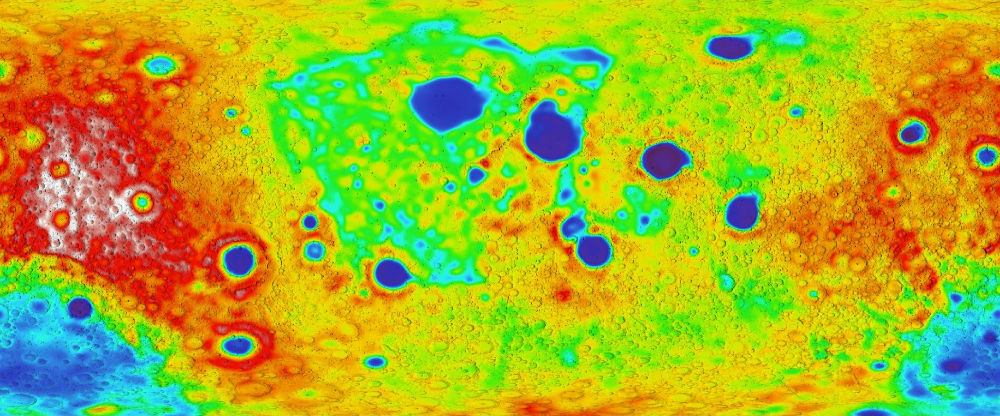
図9は月全体を平らに展開した地図であり、表側が中央に、裏側が両端に分かれている。LOLAは表面の高さを測定したレーザー高度計である。中央から外へ色を読むと、地図の中央、接触面と供給開口部があった表側の月の海の下は青。両端に向かって、上部ドームがその層を集めた裏側では赤と白である。この地図は、地殻の厚さに見える変換規則である。
Part Bのまとめ。月の地殻とその最も古いクレーター記録は、上部ドームの表皮として上昇した地球の外殻に由来する。本体は洋梨体の先端の上に二つのドームとして載っていた。外向きの球形化を経たとき、各成分は表面の自らの分を保ち、そのため接触面は表側の冠に、剥がれていく環帯は帯に、上部ドームは裏側になった。Part Cは本体の下の連結部――それが何を担い、本体がどのように解放されるか――へ移る。
連結部と解放
供給を検証した後、何が本体を担い、いつ連結部が保持しなくなるのかを定めなければならない。そのために、力、応力、形状変化を区別しながら、質量、自転、緯度の結合計算を用いる。
Part Aは圧力が本体に供給しうることを示し、Part Bは本体の表面を扁平な段階から外向きの球形化までたどった。このPartは、地球と本体の間の連結部に働く応力とせん断荷重を定め、前の二つのPartが未決のまま残す力学的な問いに答える。本体が上昇する間、何がそれを地球に保持するのか、そしてそれはどのように解放されるのか。答えは段階的に築かれる。§C.1–C.3は、解放時に連結部が担わなければならない荷重を計算し、なぜ狭いくびれがそれを担えないのかを示す。§C.4–C.5は、幅広く高温の接触面がどのようにそれを担うか、そして本体がどのように線で分離を始め、その約210 km外側で解放されるかを示す。そのとき接触面はわずかに抵抗するにすぎない。§C.5aは解放距離の探索を示す。§C.6は解放状態をPaper 4（軌道）に引き渡す。§C.7–C.9は接触面の下の構造――洋梨体へと引き伸ばされた地球の一つの隆起であり、地球の重力によって保持される地球の一部――を、その幅、長さ、質量とともに記述する。§C.10–C.11は、本体が何を持ち去り、解放後に地球が何をし続けたかで締めくくる。
Part全体を通じて三つの用語を区別する。力はニュートン単位の全体の引きまたは押しである。応力はその力をそれを担う面積で割ったものであり、パスカル単位である（1ギガパスカル、GPaは海面の気圧のおよそ1万倍）。形状変化は、物質にかかる応力が釣り合っていないときに物質が示すものである。幅広い連結部は小さな応力で大きな力を担いうるし、同じ力が狭い連結部を引き裂くこともある。
C.1冠は供給源の圧力の全体を担わない
この節の問いは単純であるが、誤って答えやすい。深部の供給源の全圧力が本体の外側の冠を押すのか。答えは否である。静水圧平衡――あらゆる深さで流体の圧力がその上にあるものの重さをちょうど担う状態――では、圧力は流れの経路に沿って連続的に変化する。それは深部の供給源で最大であり、上へ向かって下がる。各段階ですでに上にある柱の重さを担ってきたからである。したがって深部の供給源の圧力（約150 GPa、Part A）を、外側の冠をはさむ一様な圧力差として代入してはならない。
自己重力の尺度。有用な尺度は、本体が自らの重さによって生じる圧力である。月質量、密度2,600 kg/m³の均質な球形の天体は半径約1,890 kmをもち、自身の重力だけによるその中心圧力は一様な球の式で与えられる。
ここでは万有引力定数、は月質量、は本体の半径である。これは一様な球に対するよく知られた結果である。各層はその上の層の重さによって押され、その和は中心で最大値に達する。言葉で述べれば、本体自身の重力だけでその中心は約3.37 GPaまで圧縮される――深部の供給源が保持する圧力のおよそ40分の1である。したがって本体に届く圧力は、その大部分がその下の柱を持ち上げることに費やされている。
静水圧は境界に向かって減少する。しかし、有限の厚さの外被、流入、潮汐、非球形の幾何は、その境界に荷重を課しうる。したがって圧力差と局所的な応力は計算しなければならず、あらかじめゼロと仮定してはならない。このため以下の節は、連結部の荷重を、供給源の圧力からではなく本体の運動から直接計算する。
C.2ゼロでない緯度において連結部は何を必要とするか
本体は地球に付着し、地球とともに回る。固定した場所で共回転を保つためには、円運動が必要とし、重力と自転が釣り合わせない加速度の成分を、連結部があらゆる瞬間に与えなければならない。この節は解放の瞬間におけるその残りを計算する。
二体系。を中心間の距離、、と定義する。は地球の質量である。は二天体の合同の重力を表す。そしては換算質量、すなわち二つの天体の相互運動を一つの天体の運動として扱うときに両者を代表する単一の質量である（それはよりわずかに小さい。地球も共通の質量中心のまわりでわずかに動くからである）。共回転における付着した運動――本体が地球の自転とともに同じ角速度で回る――について、一定の緯度において、検討する瞬間に一定の速さで、連結部に要求される支持加速度は次のとおりである。
第1のものは外向きを正とし、第2のものは北半球では極の方を向く。言葉で述べれば、は半径方向の支持であり、地球の引力から、自転による外向きの振り出しのうち地球の中心からまっすぐ離れる向きの部分を引いたものである。は横方向の支持である。赤道面から離れると、自転による外向きの振り出しは、地球の中心からではなく自転軸から離れる向きを向く。したがってその成分の一つは地面に沿って働き、回転する輪に通したビーズが輪の最も広い部分へ押されるように、本体を赤道の方へ押す。本体をその緯度に固定するために、連結部はこの横方向成分に等しい加速度で本体を極の方へ引かなければならない。二体近似において連結部に要求される全体の合力は次のとおりである。
これは換算質量に合成加速度を掛けたものであり、二つの成分は直角に合成される。
解放の瞬間における値。シリーズで採用した解放状態――緯度、地球の1日5.77 h、そしてその緯度における共回転線上の月の質量中心（Papers 2と4）――では、次が得られる。
共回転線とは、地球とともに回る天体がすでに自由な円軌道の速度で動いている点の集合である。赤道上ではそれは、5.77時間の1日で16,399 kmにあり、緯度ではさらに外側、、22.5°で17,287 kmにある。その線上では半径方向の要求は厳密にゼロになる、。重力と自転は半径に沿って釣り合い、連結部は半径方向に押すことも引くことも必要としない。横方向の要求はゼロにならない。それは0.559 m sであり、解放時の本体自身の表面重力（1.37 m/s²、§B.3）のおよそ5分の2である。換算質量に適用すると、 Nの力を与える。これが解放時に連結部が担わなければならない荷重であり、それは完全に横方向――純粋なせん断――である。
力は、それを担う断面積で割られるまでは、連結部についてほとんど何も語らない。半径の円形断面にわたって、等価な平均応力は次のとおりである。
| 連結部の半径 | 等価な平均応力 |
|---|---|
| 1,000 km | 12.92 GPa |
| 1,500 km（接触円盤） | 5.74 GPa |
| 2,000 km | 3.23 GPa |
表は上から下へ読む。応力は半径の2乗に従って下がるので、連結部の幅を2倍にすると応力は4分の1になる。半径1,500 kmでは、半径方向に垂直な断面は法線成分を必要としない――線上では半径方向の釣り合いが成り立つ――が、約5.74 GPaの横方向成分を必要とする。その横方向成分はせん断である。それは断面の一方の面を他方の面に対して滑らせようとする。このような断面にかかる等方的な圧力――静止した流体の中のように、あらゆる方向に等しく押す圧力――は、それだけでは横方向成分を与えない。連結部の別の形状は応力の分布を変えうるが、それは計算しなければならない。連結部の質量が大きい場合には、それと流れの運動量も含めなければならない。表は二体に対する荷重の見積もりであり、質量の大きな連結部に対する解ではない。
狭いくびれがその仕事を果たせない理由。数値は狭い連結部の難しさを示す。半径1,000 kmのくびれは12.92 GPaのせん断を担わなければならず、§A.13の合同検証は半径500 kmの通路に対して46.04 GPaを与える。供給を担うくびれは高温で部分的に融解しており、融解した物質は持続的なせん断を担うことができない。一定の横方向荷重のもとでは、それは流れる。したがって狭いくびれは本体を22.5°に保持できない。それは曲がり、赤道の方へ流れるだろう。解決の道は、より強いくびれではなく、より幅広い構造である。すなわち、地球の重力によって保持される地球そのものの一部であり、地球がその山々を担うように横方向荷重を担うものである。その構造が、ドームの幅広い基部とその下の洋梨体である（§C.4、§C.7）。図10は担うべき荷重を示す。
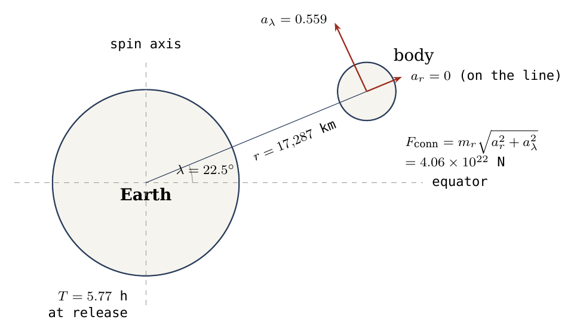
図は本体から読む。半径に沿った短い赤の矢印は半径方向の要求であり、線上ではゼロである。極の方を向く長い赤の矢印は残る横方向の要求である。連結部は後者を与えなければならない。
C.3共回転はどのように本体を切り離すか
本体を切り離すのは共回転であるが、共回転線は一点で瞬時に入るスイッチのようには働かない。それは連結部に対する半径方向の要求がその符号を変える場所である。この節は線で何が起こるかを説明する。赤道面において、また点状天体の近似において、の符号の変化は必要な支持の向きを変える。線の内側では連結部は地球の内向きの引力に抗して本体を保持しなければならず、線の外側では外向きの振り出しに抗して保持しなければならない。線そのものでは要求はゼロを通過する。ゼロでない緯度では、であってもが残る。解放状態ではこの点は線そのもの、22.5°で17,287 kmであり、そこでの連結部の荷重はなおニュートンである。
したがって共回転線は、半径方向の要求の向きが反転する場所であり、それはまた本体が分離を始める場所でもある。連結部は、必要な力、トルク、運動量流束をもはや伝えられなくなると、そのわずかに外側で屈する。高温と融解は変形に対するその抵抗を減らしうる。圧力は押しに寄与しうる。球形化は接触面の形状と応力の経路を変える。加熱、圧力、球形化は同じ系の中でともに働く。以下の節は、これらが線においてどのようにともに働くかを示す。線は正味の半径方向の引力が外向きに転じる場所を定め、その外側では本体は、高温の接触面がわずかに抵抗するにすぎない中で、外側へ引かれ、線を約210 km過ぎた所で解放される（§C.5–C.5a）。
C.4外向きの球形化と幅広い連結部
球形化は、自己重力、潮汐による引き伸ばし、自転、レオロジー（荷重のもとで物質が流れる仕方）に対する形状の合同の応答である。自身の重力によってまとまっている天体は球になろうとする。地球の潮汐はそれを両者を結ぶ線に沿って細長い形に引く。自転はそれを扁平にする。そしてその粘性は、それがこれらの引きにどれほど速く応答できるかを決める。不等式：
は、本体の自己重力と地球が及ぼす潮汐による引き伸ばしの競合の局所的な見積もりを与える。左辺は、本体をまとめて丸くしようとする、その表面における本体自身の重力加速度である。右辺は本体を横切る潮汐による引き伸ばしである。地球は近い側を中心より強く、中心を遠い側より強く引き、本体半径一つ分にわたるその差はである。左辺が勝てば本体は自らを保持し、右辺が勝てば本体はそれが載っているものによってのみ保持される。段階2の幅広い先端の上では、両者の比は約0.11である（§B.2）。本体はまだ先端の上のドームであり、まだ独立した天体ではない。軌道上での存続と連結部の断裂は、Paper 2が解放された本体に課す二つの条件であり、この不等式はそれらが入ってくる所である。
幅広い連結部とくびれ切れ。幅広い連結部は、まずくびれへと狭まることなく、流動し変形しながら引き伸ばされて分離しうる。これがくびれ切れの機構との中心的な違いである。注射器から出る液滴は細い糸になって切れるが、反対の二方向に引き伸ばされる幅広く柔らかい層はその幅全体にわたって一度に開く（§C.5）。
形状変化の順序。形状変化の順序は定まっている。本体は、まだ地球とともに回っている間、解放のずっと前に外向きの球形化を完了した。次にそれは自転とともに扁平化し、扁平化とそれを緩和した内向きの球形化はいずれも本体が付着している間に起こった。内向きの球形化では、軸比は扁平化の頂点の1.69から付着期間後期のへ下がった（Paper 7, 極）。解放時までに本体は球形となり、その外殻は剛体となっていた（Paper 2, §B.7：軸比は最大でも1.04）。詳細な応力と幾何の発展は今後解くべきものとして残る。この描像における接触面は、段階3における本体の下部ドームの残りである3,000 kmの円盤である（Part B.4）。その幅、半径1,500 kmが、§C.5における解放計算のである。
幅広い基部がその仕事を果たせる理由。連結部がくびれではなく本体の幅広い基部であるとき、二つのことが変わる。荷重は半径1,500 kmの接触円盤にわたって分散されるので、平均応力は半径が縮むにつれて上がるのではなく、§C.2の表の5.74 GPaまで下がる。そして円盤の下の支持は糸ではなく、地球そのものの幅広い一部、すなわち§C.7の洋梨体であり、地球の重力によって保持される。接触面は短い距離にわたって荷重を洋梨体へ渡すだけでよく、洋梨体がそれを地球まで担い下ろす。
C.4a剥離：本体はそれが載っていたシアルとともに離れる
この節は、最終的な接触面ではない下部ドームの部分の上で何が起こるかを記述する。母天体からの分離は同時に二つの仕方で起こり、それらが現在の地殻を定める。本体は初めから母天体のシアル層――ケイ素とアルミニウムに富む軽い外層（§C.10）――の上に載っていた。それはその上で成長し、それとともに離れた。その描像は、台の丸い頂部に押しつけられ、台の上にあるまま膨らまされる、空気の抜けたサッカーボールやバスケットボールである。それが膨らんで丸くなるにつれて、台に触れている壁は縁から内側へ台から剥がれ、ボールの残りとともに丸くなる。ここでは台が洋梨体の先端である。
6,000 kmの基部の上では、分離は剥離である。本体が外向きの球形化を経るにつれて（§C.4）、接触面は幅6,000 kmの下部ドームの縁から3,000 kmの円盤へ縮んだ（§B.4）。剥離はゆっくりと進み、円盤は最後まで付着したままである。この環帯――6,000 kmの縁と3,000 kmの円盤の間の環――全体にわたって、本体は母天体から引き裂かれたのではない。代わりに、その下のシアルが、二つの層の間の「潤滑された」境界に沿って（§C.10）、シマ（シアルの下にある、より密度の高いマグネシウムに富む層）から徐々に剥がれ、本体とともに去った。この剥がれたシアルが、接触面の中心からとの間にある現在の帯である（§B.4）。
3,000 kmの接触面は高温の機構である。下部ドームの中心では本体は洋梨体の頂部の上に直接載っており、そこでは熱は極端であった。それはシアル層を融かし、取り除いた。そこでの最後の分離はきれいではなかったかもしれないが、熱と本体の自己重力が領域全体をならした。表側の地殻が最も薄い所は開いている。月の海は§B.5の供給開口部であり、その下の地殻が薄いのはそれらが開口部だからである。
そして解放そのもの。月の質量中心が共回転線に達すると、本体は分離を始める。共回転の力が本体を強く外側へ引き、わずかに抵抗するにすぎない接触面の最後の部分は、線の約210 km外側で屈する（§C.5, C.5a, C.8）。本体はそのとき自らのシアルとともに離れる。ドームの上の外殻、環帯の上の剥がれたシアル、そして接触面の上ではすでに熱によってならされた表面である。
こうして本体は同時に二つの仕方で分離する。環帯の上では、シアルが本体とともに行くゆっくりとした剥離であり、中央の円盤の上では、高温の接触面がわずかに抵抗するにすぎない引きである。後者を次に見積もる。
C.5本体は共回転線の外側でどのように解放されるか
Paper 2は解放を、月の質量中心が共回転線に達する位置に置く。その外側では共回転の力が本体を外側へ引く。分離は一点での瞬時の切断ではなく、半径方向の張力のもとでの粘性の接触層の連続的な流動である。月はその質量中心が線に達すると分離を始め、その半分を少し超える部分が線を越えたとき、線の約210 km外側で解放される（§C.5a）。洋梨体と本体の間の接触面はわずかに抵抗するにすぎない。本体は強く外側へ引かれ、この引きがスパチュラ尾根を引き上げた。この節は、接触面がどれほど抵抗したかを見積もる。
なぜ質量中心なのか、そしてなぜ線なのか。一体として動く天体は、それにかかる力の和に応答し、その和は、その全質量が質量中心に集中しているかのように働く。共回転線の内側では、本体に対する地球の引力はその円運動が必要とするものより大きく、したがって本体全体は地球の方へ押しつけられ、接触面は圧縮の状態にある。それは引かれるのではなく押され、保持する。本体の遠い側が最初に線に達する（§C.7の先端の表）が、中心が内側にある限り、線の内側の部分が線の外側の部分にまさり、本体はなお内側へ押しつけられる。中心が線を越えると和は逆転する。外向きの振り出しが引力を上回り、本体は接触面を引き始める。それ以降、接触面は張力の状態にあり、問いは、高温の粘性層が引かれるときどのように振る舞うかとなる。
Stefan解放の意味。接触面の引張に対する抵抗は、固体の破断強度ではなく、隙間が開く速さに対する抵抗である。薄い水の膜を挟んだ2枚の平らなガラス板は、互いに滑らせるのは容易であるが、まっすぐ引き離すのは難しい。隙間を開くには、液体が縁から中心へ流れ込まねばならず、隙間が薄いほど流れにくい。ゆっくり引くと、板は初めゆっくりと離れるが、隙間が少し広がると液体は容易に流れ込み、板は一気に離れる。この抵抗は破断する強度ではなく、開く速さに対する抵抗であり、膜の粘性（流れに対する抵抗）、板の大きさ、隙間の幅によって決まる。これがStefanの問題であり、接触面はきわめて大きな規模でのこのような膜である。
接触層のStefanモデル。段階3の接触面を、厚さ、半径 km（§B.4 の3,000 km の円盤）、粘性のニュートン流体層として記述する。ニュートン流体層とは、水や蜂蜜のように、流れに対する抵抗が流される速さに比例する層である。このような層は張力を担わず、二つの物体が離れる速さに抵抗する。速さで離れる二つの円盤に対する抵抗力はStefanの式で与えられる。
ここではある瞬間の隙間の幅、はそれが開く速さである。この式は三つのことを定めている。抵抗は粘性と開く速さに比例する。ゆっくり引けば抵抗は小さい。抵抗は円盤の大きさにとして急激に依存する。幅が2倍の円盤は16倍の抵抗を示す。そして隙間が開くにつれとして急激に減少する。幅が2倍の隙間の抵抗は8分の1になる。
開口速度の式。本体の質量中心が共回転半径をだけ越えた後に分離を駆動する力は、回転系における正味の外向きの力であり、解放時の1日5.77時間（Paper 2）においてである。係数は、線を越えた距離に応じて正味の外向き加速度がどれだけ速く増すかを表す。外向きの振り出しは外側へ向かって増大し、引力は減少し、線上では両者を合わせて距離1メートルごとにだけ変化する。線上では駆動力はゼロであり、線をわずかに越えれば小さな外向きの力が、さらに越えればより大きな力が生じる。半径方向の伸長のすべてが層の開口に変換されるとすれば、となる。
式(31)は駆動力をStefan抵抗に等しいとおき、開口速度について解いたものである。この式は解放を速める二つの効果をともに含んでいる。駆動力はとともに増大し、抵抗はとともに減少する。
解は暴走する。隙間が開くにつれ抵抗はとして減少するため、接触面の小さな抵抗はすばやく屈する。層は初めゆっくりと開くが、隙間が広がると液体は容易に流れ込み、抵抗は崩れる。ここでは解放を、隙間がに達した時点と定義する。このとき抵抗は27分の1に減少し、解は暴走する。したがって解放時の線を越えるマージンは層の厚さのみで決まり、粘性には依存せず、である（以前の版では–としていた）。粘性と接触半径は時間のみを決める。その理由は、粘性がいかなる値であっても、抵抗が崩れる前に隙間は初期厚さの一定倍だけ開かねばならないからである。より硬い層は同じ開口により長い時間を要するだけである。表に四つの場合を示す。時間の列は粘性と厚さによって変わり、マージンの列は厚さのみによって変わる。
|
[Pa s] |
[km] | [km] | までの時間 | |
|---|---|---|---|---|
| 20 | 1,500 | 約250 yr | 約40 km | |
| 20 | 1,500 | 約25,300 yr | 約40 km | |
| 50 | 1,500 | 約1,620 yr | 約100 km | |
| 20 | 1,500 | 約 yr | 約40 km |
時間は、月の質量を用いて式(31)を種となる隙間から解放時の隙間まで積分して得たものであり、としてスケールする。この表の以前の版では、下の3行について約4,800年、320年、年としていた。これらの値は式(31)から導かれたものではない。式(31)は現在示している時間を与え、図11の曲線と一致する。その後の版では約240年、25,700年、1,640年、年としていた。現在示している時間は積分そのものであり、4行は互いにの関係にある。マージンの列は変わっていない。
解放距離と層の厚さ。厚さ20–50 km の接触層は40–100 km を与え、採用した約210 km の解放（§C.5a）は厚さ約105 km の層に対応する。いずれの場合もマージンは16,400–17,300 km の解放距離に比べて小さく、その1.5パーセント未満である。したがって本体は、Paper 2 が要求するとおり実質的に線上で離れ、本体が入る軌道は層のレオロジーの詳細ではなく線によって決まる。§C.7–C.8 の記述において、これは月の中心が線に達し、共回転の力と内部圧力がともに作用した後の、接触面の最後の開口である。したがって線上での解放は、細いくびれも新たな仮定もなしに、本論文が見出す連結部によって遂行される。高温で軟らかい接触面（§A.5、§B.4）はわずかにしか抵抗せず、厚さ約105 km の層では本体は線の約210 km 外側で解放される（以前の版では厚さ50 km の層と、線の約100 km 外側での解放を採っていた）。
表の時間は数百年から数百万年であり（以前の版では「数十万年まで」としていた）、構築の継続期間に比べて短い。これらは高温の接触面の小さな抵抗を見積もるものである。本体そのものは力強く外側へ引かれており、この引きがスパチュラ尾根を引き上げた。
回転の結合。第二の問題は、同じ接触面が、本体が上昇する間それを地球とともに回転させ続けられるかである。本体が外側へ移動するにつれ、回転の速さを保つためにはその接線速度を増さねばならず、それにはトルク、すなわち回転させる力が必要である。同じ層が回転の結合の問題に答える。本体が年1 km の速さで上昇する間、共回転を保つのに必要なトルクは N m である。これが本体に課す横方向の力 N を接触面全体に分布させると、約0.2 kPa にすぎないせん断応力となり（以前の版では7 kPa としていた）、表のいずれの粘性に対しても無視できる。5分の1キロパスカルは海面の気圧の約500分の1であり、上記のいずれの粘性の層もこれを無視できるせん断速度で担う。したがって広い接触面は回転の結合を保つ。上昇の間を通じて本体を横方向に保持し、中心が線を越えた後は、半径方向にはわずかにしか抵抗しない。
図11は、二つの場合について隙間が時間とともに開く様子を示す。どちらの曲線も大部分の時間はほぼ平坦にとどまり、その後急激に立ち上がる。隙間が少し開くと抵抗が屈するのである。厚い層ほど早く解放されるが、どちらの場合も解放時の隙間は初期厚さの3倍まで開いており、そのため線を越えるマージンは層の厚さの2倍、すなわち表のとおり20 km の層では40 km、50 km の層では100 km となる（この文の以前の版では、マージンを厚さの3倍としていた）。
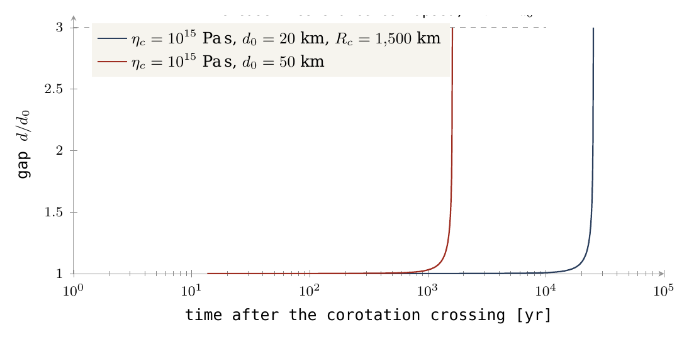
順序は定まっている。本体は付着段階の間に外向きの球形化と扁平化を経て、その内向きの球形化は解放前に完了した。軸比1.2は付着段階の後期に属し、解放時の本体は球形で、その外殻は剛体であった（Paper 7; Paper 2, §B.7）。分離は層の伸長であってくびれではなく、それが解放する本体は外殻を携えている。
本体が赤道へ滑らなかった理由。残る問いは、付着した本体の空間的な安定性である。なぜ本体は赤道へ向かって滑らず、分離まで一定の緯度を保ったのか。5.5時間に1回転する母天体の上に載った本体は、遠心力、すなわち回転による外向きの振り出しを受ける。赤道ではこの力はすべて半径方向であるが、緯度では地面に沿った接線成分をもち、これは赤道へ向かう。これは式(19)のと同じ成分を反対側から見たものである。そこでは連結部が供給せねばならないものであり、ここでは何も供給しなければ本体を動かすものである。流体の母天体の上では、22.5°にある本体は赤道へ滑り、そこから軌道傾斜角ゼロで分離するであろう。二つの係留の機構が、相次いでそれを妨げた。
幅の広い先端の上で：外殻による係留。本体は、剛体のシアル質の外殻の開口部の中にある、幅6,000 km の基部の上に載っている。それは、クレーターの記録がその上に残存するために（§B.6）、モデルがいずれにせよ要求する、粘性 Pa s 以上の外殻である。クレーターを保持する外殻は位置を保持する。このような面積にわたって係留された基部は移動しない。100 km のクレーターが1000万年で緩和しないほど硬い外殻（§B.3）は、幅6,000 km の基部がその上を滑ることを許すにはあまりにも硬すぎる。
外向きの球形化において：洋梨体による支持。接触面は3,000 km に縮小するが、本体は依然として洋梨体の先端に載っている。洋梨体は地球の重力によって保持された地球の一部であり、横方向の荷重はそれを通じて下方の地球へ伝えられる（§C.4、§C.7）。本体は赤道へ向かって漂流しない。
結論。本体は、運ばれていた緯度、すなわち Paper 4 の解放緯度22.5°で解放される。軌道傾斜角は地球の赤道に対する月の軌道の傾きであり、ある緯度で解放された本体は、その緯度だけ傾いた軌道から出発する。洋梨体の基部はおおよそ当時の赤道上にあった。その赤道が今日の赤道であるかどうかは自転軸の問題であり、今後の課題である。
C.5a線の外側どこまでか：解放距離
C.5節では、本体が共回転線をわずかに越えた位置で解放されることを見出した。本節では、その距離を数値で定め、それが今日の月の軌道の傾斜角と離心率に及ぼす影響を調べ、シリーズの縮約則がそれをどの範囲に置くかを問う。答えはシリーズが採用する解放である。すなわち、月の半分をわずかに超える部分が線を越えた時点での、線の約210 km 外側である。この問いが重要なのは、この距離が半径に比べて小さく（その1パーセント未満）、それでも軌道の形にとっては小さくないからである。ちょうど線上での解放は円軌道を与える。本体は円軌道の速さで動き、円に入る。線の外側での解放は、円が必要とするよりわずかに大きい接線速度を本体に与える。解放点は軌道の最も近い点、すなわち近地点となり、軌道はわずかに引き伸ばされた楕円となる。その離心率 （円ではゼロで、楕円が引き伸ばされるにつれ増大する）は、線を越えた距離とともに増大する。この離心率と、それに伴うやや大きな軌道は、今日の月と照合できる二つの数値、すなわち軌道の傾きと軌道の引き伸ばしに持ち越される。
設定。各行は、完全な分離の瞬間に、月の質量中心を共回転線の外側の指定された距離に置き、解放時の1日を5.77 h、解放時の本体の半径を1,890 km とする。「越えた割合」は、その瞬間に線の外側にある月の体積の割合である。初期軌道は Paper 4, Appendix A の公式（速度比、、、解放点を近地点とする）から、最終角は Paper 4, Part D の縮約された tan 則から求める。離心率は、一定時間遅れ潮汐[21]（地球に生じる潮汐と、同期回転する月に生じる潮汐の和で、後者の地球に対する強さはである）により、解放時から現在の距離384,400 km まで追跡し、地球の自転は角運動量の保存から求める。太陽と出差共鳴は含めない。
傾斜角の検定。第一の表は、シリーズの緯度22.5°で本体を解放する。そこでの共回転線は17,287 km にある。表は上から下へ読む。距離が増すにつれ、線を越えた本体の割合、解放時の離心率、軌道の大きさ、現在の距離での最終角が増大する。紺色の濃さは最終角とともに深まる。緑の太字の行は最終角が観測値5.145°に等しい行であり、これが採用した解放である。
| 距離 (km) | 越えた割合 | (km) | 遠地点 (km) | 最終角 | |
|---|---|---|---|---|---|
| 0 | 50% | 17,287 | 0 | 17,287 | 5.020° |
| 50 | 52% | 17,489 | 0.009 | 17,641 | 5.049° |
| 100 | 54% | 17,696 | 0.017 | 18,005 | 5.079° |
| 150 | 56% | 17,907 | 0.026 | 18,377 | 5.109° |
| 210（採用） | 58% | 18,163 | 0.037 | 18,831 | 5.145°（観測値） |
| 300 | 62% | 18,571 | 0.053 | 19,554 | 5.202° |
| 400 | 66% | 19,040 | 0.071 | 20,392 | 5.267° |
| 500 | 69% | 19,531 | 0.089 | 21,275 | 5.334° |
| 650 | 75% | 20,316 | 0.117 | 22,695 | 5.440° |
| 1,000 | 86% | 22,404 | 0.184 | 26,521 | 5.711° |
表 C.5a.1. 22.5°での解放（共回転線17,287 km）：線を越えた距離の関数としての初期軌道と縮約則による最終角。紺色は最終角とともに深まり、緑は観測値5.145°を示し、これが採用した解放である。
最終角は距離とともにゆっくりと着実に増大し、50 km ごとに約100分の3度増す。線上での解放は5.020°、線の100 km 外側での解放は5.079°を与え、観測値5.145°には約210 km、すなわち月の体積の58%がすでに線を越えた時点で達する。ただし、角度は距離よりも先端の緯度に対してより敏感である。著者は先端を22°と24°の間に置く。5.145°を与える距離は、この範囲で次のように動く。
| 先端の緯度 | 5.145°を与える距離 |
|---|---|
| 22° | 約420 km |
| 22.5° | 約210 km |
| 23° | 約0 km：線上 |
| 24° | なし：線上ですでに角度が5.145°を超える |
表 C.5a.2. 先端の緯度に対する感度。紺色は緯度とともに深まり、緑はシリーズの緯度を示す。
緯度がわずか0.5度変わるだけで距離は約200 km 動く。したがって傾斜角だけでは解放は一点ではなく範囲に置かれる。第二の検定がそれを絞り込む。
引き伸ばしの検定。第二の表は離心率について同じ探索を行う。これは平面内で、当時の赤道上での解放（共回転線16,399 km）として行う。上記の潮汐方程式はそこで書かれている。ある距離における解放時の離心率は22.5°の場合とほぼ同じである（二つの表を比較されたい）。最後の3列は、の三つの値について現在の距離での離心率を与える。数値は、若い月が地球に比べてどれだけ強く潮汐エネルギーを吸収したかを表す。冷たく硬い月ではは小さく、高温で軟らかい月では大きい。地球の潮汐は軌道が大きくなる間にそれを引き伸ばし、月の潮汐はその引き伸ばしを抑えて軌道を丸くする。紺色の濃さはとともに深まる。緑のセルは今日の値0.0549に最も近いものである。
| 距離 (km) | 越えた割合 | 近地点 (km) | 遠地点 (km) | 今日の、 | |||
|---|---|---|---|---|---|---|---|
| 0 | 50% | 0 | 16,399 | 16,399 | 0 | 0 | 0 |
| 100 | 54% | 0.018 | 16,499 | 17,117 | 0.76 | 0.49 | 0.013 |
| 200 | 58% | 0.037 | 16,599 | 17,875 | 0.82 | 0.63 | 0.048 |
| 300 | 62% | 0.056 | 16,699 | 18,676 | 0.85 | 0.70 | 0.11 |
| 500 | 69% | 0.094 | 16,899 | 20,417 | 0.88 | 0.78 | 0.30 |
表 C.5a.3. 当時の赤道上での解放（共回転線16,399 km）：初期軌道と、月の潮汐の三つの強さに対する現在の距離での離心率。紺色はとともに深まり、緑は今日の0.0549に最も近い値を示す。
決定的なのは第1行である。ちょうど線上で解放された本体は円軌道に入り、潮汐は円軌道を円のまま外側へ運ぶ。の値にかかわらず、離心率は384,400 km に至るまでゼロに固定される。したがって、今日の月がもつ離心率はすべて、解放時の小さなを必要とする。月での散逸が小さい場合（または1）、地球の潮汐は小さなでさえ細長い楕円へと引き伸ばす。高温の若い月では月の潮汐が引き伸ばしを抑え、では今日観測される離心率0.0549は200 km の行と300 km の行の間で得られる。今日の離心率を与える解放距離はに依存し、では約120 km、では約210 km、では約330 km、では約460 km である。
ちょうど線上での解放は円軌道を与え、潮汐はそれを離心的にすることができない。したがって、質量中心が線を越えたわずかに後の解放は、単に可能な状態（許される）ではなく、必要条件（要求される）である。
二つの独立した縮約検定、すなわち今日の軌道傾斜角（表 C.5a.1、緯度22.5°）と今日の離心率（表 C.5a.3、高温の若い月、）は、ほぼ同じ距離、すなわち月の半分をわずかに超える部分（約58%）が線を越えた時点での、線の約200–210 km 外側に収束する。これはモデルが主張するとおり「質量中心のわずかに後」であり、シリーズが採用する解放である。表は、縮約則がそれを置く範囲を示す。
どちらの表も単独では決定しない。角度は先端の緯度に、離心率は月での散逸係数に依存する。決定は、解放状態からの完全な連成積分（Paper 4, Further work）に委ねられる。
解放時のマージンがである §C.5 の言葉でいえば、採用した約210 km の解放距離は厚さ約105 km の接触層に対応し、これは §C.5 の表の下から2行目に示した50 km の層の厚さの2倍である。抵抗は高温で軟らかい接触面の小さな抵抗のままであり、距離そのものは解放距離の1.5パーセント未満である。
舞台裏。本論文の以前の版では、厚さ約50 km の接触層に対する著者の見積もりに従い、線の約100 km 外側での解放を採用していた。上記の解放距離の探索により、二つの縮約検定（今日の軌道傾斜角と離心率）がもう少し外側で一致することが示され、シリーズは現在、計算された値を採用している。元の見積もりは同じ範囲内にあり、その値に近かった。
ここまでに得たもの。解放時の荷重は既知である（§C.2）。それはくびれに集中するのではなく、広く高温の接触面によって担われる（§C.4）。本体は線に達すると分離を始め、わずかにしか抵抗しない接触面に抗して力強く外側へ引かれ、線の約210 km 外側で最終的に解放される（§C.5）。そして今日の月の軌道の傾きと引き伸ばしは、縮約則のもとでその距離の近くで一致する（§C.5a）。次節では、この結果を Paper 4 が必要とする形で述べる。
C.6軌道論文への引き渡し条件
解放後の月の軌道は Paper 4（軌道）の主題である。Paper 4 が本論文から必要とするのは、解放の瞬間の状態の値、すなわち月がどこにあったか、地球がどれだけ速く回転していたか、そして連結部がほかに何をしていたかだけである。引き渡す状態は Paper 2 の状態であり、伸びていく洋梨体と中心へ集まる核との相殺を含んでいる。伸びていく洋梨体は質量を外側へ運び、そのため地球の自転を遅くする。中心へ沈む鉄、すなわち中心へ集まる核は、スケーターが腕を体に引き寄せると速く回るように、自転を速める。両者を合わせると1日5.77時間となる（Paper 2, §A.4）。
| 解放緯度 | 地球の1日 | 解放時の月の中心 | 解放時の軌道 | 連結部の荷重 |
|---|---|---|---|---|
| （赤道） | 5.77 h | 約16,610 km（線16,399 km） | ほぼ円、 | 半径方向の釣り合いは満たされる。接触面の小さな抵抗のみ |
| （Paper 4） | 5.77 h | 17,496 km（線17,287 km） | ほぼ円、 | N、横方向 |
二つの行は緯度のみが異なる。赤道上では線は16,399 km にあり、解放時の連結部には接触面の小さな抵抗以外の荷重は残っていない。22.5°では線はより外側の17,287 km にあり、§C.2 の横方向の荷重がそのまま残る。どちらの場合も月はほぼ円の軌道で離れる。線上では回転とともに運ばれる速さは円軌道の速さであり、線の約210 km 外側ではそれよりわずかに大きいので、解放点が近地点となる（§C.5a、§C.8）。（以前の版では、線上での円軌道への解放を引き渡していた。）
舞台裏。本節の以前の版では、より遅い解放、すなわち1日6.59時間における20,595 km を引き渡していた。これは密度2,600 kg/m³ の天体の流体ロッシュ限界の外側である。その分岐は伸びていく洋梨体のみを考慮していた。中心へ集まる核も考慮すると、解放時の1日は5.77時間であり、線は約16,400 km にある（Paper 2, §A.4）。この位置は解放される本体を流体ロッシュ限界の内側に置くが、剛体ロッシュ限界（密度2,600 kg/m³ で10,314 km）のはるか外側に置く。本体は流体平衡によってではなく、剛体の球形化した外殻によって保持されている（Paper 7, §C.5）。ロッシュ限界とは、その内側では潮汐による引き伸ばしが天体自身の重力を上回る、地球からの距離である。その内側の流体の天体は引き裂かれるが、剛体の外殻をもつ天体ははるかに近く、剛体限界まで生き残る。解放時の月は両者の間にあり、それゆえ剛体の外殻が重要となる。
C.7一つの隆起：先端が月となる洋梨体へと引き伸ばされた地球
本節では、本体を下から担う構造について、それが何であるか、なぜ洋梨の形をしているか、幅と長さはどれだけか、どれだけの質量を含んでいるかを述べる。
解放時、本体の中心は共回転線上、赤道上で地球の中心から約16,400 km にあり、その手前側の表面は中心から約14,500 km（中心から本体の半径1,890 km を差し引いたもの）にある。地球の表面（1日5.77時間の扁平化した母天体の赤道上で中心から6,701 km）とその表面との間の距離は約7,800 km である。この空間は付着した構造によって満たされていなければならない。回転だけによって地球の表面を離れた本体は軌道の速さの半分未満しかもたず、落下して戻るからである（§C.8）。我々は、地球自身が一つの隆起によってこの空間を満たすことを提案する。丘を持ち上げた圧力がそれを持ち上げ続け、隆起は地球自身の物質からなる洋梨体へと引き伸ばされ、その先端（Part B のドーム）が球形化して月となった。洋梨体を外側へ引き伸ばす自転、地球内部の分別作用、内部圧力は一つの機構として作用する。その三つの側面は、下の本論文以前の洋梨体において述べる。
なぜ紐は担えず、洋梨体は担えるのか。二つの物体の間の液体の紐は本体を担うことができない。地球と本体の合成重力は、変位した物質を両者を結ぶ線へ向けて（あらゆる方向、あらゆる高さで）確かに引き戻すが、幅3,000–4,200 km の紐に対しては、この復元力は基部近くで必要な圧力35–81 GPa の10分の1から50分の1しか保持しない。洋梨体は紐ではない。それは地球そのものの広い一部であり、地球が山々を保持するように、地球の他のどの部分とも同じく地球の重力によって保持されている。洋梨体は投げ出されない。その速さは投げ出す速さではなく、その全体が共回転線の内側にあるからである。地球の近くでは幅が広く、一つの連続した弧を描いて先端へ向かって細くなり、先端は中心から約15,400 km（17,287 km にある月の中心から半径1,890 km を差し引いたもの）で接触面を担う（以前の版では、先端の頂部について16,100 km と9,500 km としていた）。以下は、開始時、すなわち本体が幅の広い先端に載っていたとき（§B.2）と、解放時の洋梨体である。
| 開始：本体の中心13,000 km、5.5 h | 解放：月の中心17,287 km、5.77 h | |
|---|---|---|
| 洋梨体の先端（接触面） | 6,000 km | 3,000 km |
| 長さ（地球の表面から接触面まで） | 約4,000 km | 約8,700 km |
二つの列は成長していく洋梨体を表している。開始から解放までに、洋梨体の長さは約4,000 km から約8,700 km へとおよそ2倍になり、その上の本体の外向きの球形化と並行して、先端の幅は6,000 km から3,000 km へと半分に縮小した。
基部の幅。洋梨体の基部の幅は9,000–11,000 km の範囲とする。上限はエネルギーから得られる。基部が広いほど多くの質量を含み、より多くの質量を持ち上げるにはより多くの仕事を要する。同じ形のまま基部を広げると、解放時の洋梨体は基部9,000 km で月質量の8.8倍、10,000 km で10.4倍、11,000 km で12.1倍を含み、それを持ち上げるにはそれぞれ、、 J の仕事を要する。最後の値は地球の核の形成によって解放されるエネルギーと同程度である。したがって我々は基部を9,000–11,000 km とする。本体が上昇する間、先端は6,000 km から3,000 km へ細くなり、基部は広がった。
洋梨体の質量。したがって洋梨体は、基部9,000–11,000 km に対して月質量の8.8–12.1倍を含む。本論文（§C.9）で用いる「月質量の約9倍」という値は9,000 km の場合、すなわち範囲の狭い側の端である。言葉でいえば、洋梨体は月質量の約9倍から12倍を含む。比較のために述べると、9,000 km の洋梨体は地球の質量の約11%を含む（§C.9）。これは大きな局所的異常であるが、惑星全体ではなく惑星の一領域である。
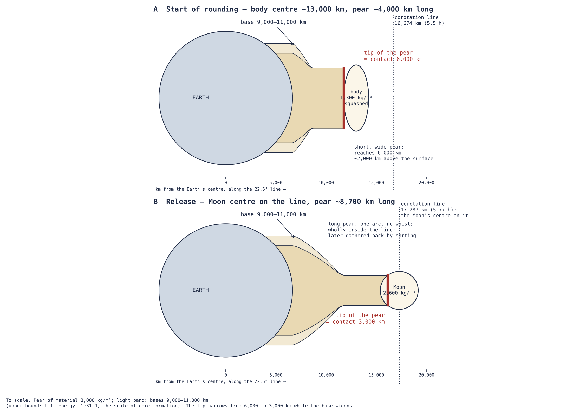
図12は表の二つの列を描いたものである。注目すべき点はパネル(B)の輪郭である。それは基部から先端へ一つの弧を描いて徐々に細くなり、くびれて切れうるくびれ部をもたず、共回転線の手前で終わる。
上昇に沿った先端。洋梨体の先端は Part B の本体を担い、本体は上昇するにつれて高密度化する。その自転は地球の自転である。以下に上昇の各段階を、その密度と自転をもつ回転体の形状（Paper 7, §C.1）とともに示す。軸比は本体の最長軸と最短軸の比であり、球では1.00、扁平な天体ではより大きい。地球とともに回転する軽い本体は、自身の重力が自転に対して弱いため、強く扁平化する。高密度化するにつれ重力が増し、内向きに球形化する。表は上から下へ読み、密度は上昇し、比は1へ向かって減少する。
| 段階 | 密度 (kg/m³) | 地球の1日 | 軸比 | 状態 |
|---|---|---|---|---|
| 洋梨体の先端の上（段階2） | 1,300 | 5.5 h | — | 下部ドームによって保持 |
| 扁平化の頂点、内向きの球形化の開始、13,000 km | 1,300 | 5.5 h | 1.69 | 本体が自己を保持し始める。最も扁平 |
| 洋梨体の上、上昇中 | 1,600 | 5.55 h | 1.44 | 本体が高密度化する |
| 洋梨体の上、高密度化中 | 2,000 | 5.62 h | 1.30 | |
| 遠い側が線に達する | 2,300 | 5.70 h | 1.24 | |
| 付着段階の後期、線に接近 | 2,600 | 5.77 h | 1.20 | 内向きの球形化が終了する |
| 中心が線上：解放 | 2,600 | 5.77 h | 1.04、球形 | 本体は球形。外殻は剛体 |
| 今日 | 3,344 | — | 1.00 | 圧密済み |
扁平化と内向きの球形化はいずれも本体が付着している間に起こった。軸比は扁平化の頂点での1.69から付着段階後期の1.20へと減少した。解放までに内向きの球形化は完了しており、本体は球形で、その外殻は剛体であった（Paper 2, §B.7：軸比は最大1.04）。その後、本体は今日の密度3,344 kg/m³ まで圧密した。
三つの結果。ここから三つの結果が導かれる。第一に、横方向の荷重の支持。洋梨体は地球の一部であり地球の重力によって保持されるので、連結部の横方向の問題は地球自身の重力によって答えられる。いかなるくびれも担えなかった §C.2 の横方向の荷重は、地球自身の物質からなる幅の広い物体によって担われる。第二に、先端の制約。洋梨体の上部は、それが担う接触面、すなわち開始時6,000 km、解放時3,000 km によって決まる。第三に、洋梨体の全体は共回転線の内側にあるので、それに沿った有効重力はいたるところで地球を向く。洋梨体は長さ方向に圧縮され、くびれて切れるくびれ部をもたず、そのいかなる部分も軌道にとどまることはできない。解放後、分別作用がそれを数千万年から数億年かけてまるごと地球へ回収する。
洋梨体はどうなったか。洋梨体は軌道へ投げ出されたのでも、解放時に失われたのでもない。解放後、分別作用がそれを数千万年から数億年かけて徐々に地球へ回収した。その重い部分は洋梨体の基部の下で地球の深部へ沈んだ（Part E）。その前面側の物質は北太平洋の縞へ、その背面の物質は西太平洋の弧へと回収された（Paper 9, 縞）。質量は地球を離れなかった。それは外側の高所から内側の深部へと移動し、入り込んだ場所の表面にしわを残した。
舞台裏。我々はまず、地球と本体の間の細い紐を探した。そのような紐は荷重を担えない。次に、共回転線の外側まで達する長い首をもつ洋梨体を描き、先端が線を越えたときに解放されるとした。解放を月の質量中心が線に達する位置（Paper 2）に置くと、首はその役割を失った。洋梨体は地球の表面から接触面までの単一の連続した弧であり、その全体が線の内側にある。
本論文以前の洋梨体。梨状（洋梨のような）形は物理学にとって新しいものではない。Poincaré [8] は1885年に、回転する流体の平衡系列が Maclaurin 回転楕円体から Jacobi 楕円体へと移り、そこで洋梨のような形、すなわち梨状の形へと分岐することを見出し、さらに洋梨形が二つの大きさの異なる物体に分かれうることを示唆した。Maclaurin 回転楕円体とは、ゆっくり回転する一様な流体の物体がとる、扁平で上から見ると円い形である。Jacobi 楕円体とは、そのような物体がより速く回転するときにとる、三つの不等な軸をもつ細長い形である。そして洋梨形は、さらに速い回転において Jacobi 形から分岐する。Darwin はこの考えを地球と月に適用し、これに続いて Poincaré–Darwin の分裂説が生まれた [9]。この説では洋梨形は回転のみによって引き伸ばされるため、崩壊点に近い自転を要する。これが同説を終わらせた角運動量の側からの反論である。Cartan は後に、洋梨形が Jacobi 系列から分岐する点で力学的不安定が現れることを示し [10]、同説が仮定したゆっくりとした進化を中断させた。ここで提案する洋梨体は、それを駆動する要因において異なる。その要因は三つの側面をもつ一つの機構である。自転は遠心的な圧力を生む。地球の分別作用（分化）は重い物質を集中させようとし、そうすることで他のすべてを外側へ押す。これが内部圧力である。そして自転が分別作用を駆動する。これらが一体となって、洋梨体という異常を生む。
洋梨体は5.5時間の自転で形成され、均質な母天体についてのその回転パラメータ（以前の版では0.093としていた）は、Jacobi 分岐が始まる点をはるかに下回る。回転パラメータは自転を本体自身の重力と比較する無次元の尺度であり、その比較は一つの尺度の上で行わねばならない。ここで用いる尺度では、Jacobi 分岐は0.374でようやく始まる（Paper 2, §A.6.5）。したがって母天体の自転の値0.092はその約4分の1にすぎない。同じ分岐点についてしばしば引用される値0.187は、尺度における同じ点であり、0.092と直接比較すべきものではない。したがって5.5時間の母天体は、回転のみで洋梨形となる自転からは遠く離れている。ここでの洋梨体は本体全体からではなく一つの局所的な領域から成長する。先端の質量中心が共回転線に達した後に先端のみが離れ、残りは分別作用によって地球へ回収される。不安定な平衡は、力によって駆動されたのちに解放される形状にとって障害とはならない。今日の地球のように、すでに分別が進み自転の遅い本体では、洋梨体は形成されえない。そのような本体はすでに落ち着いており、何もそこから出ることはできない。洋梨体の時代には自転は速く、粘性は低く、分別作用は始まったばかりであった。このような条件のもとで洋梨体が形成され、そこから衛星が生まれる。
本論の記述により近いものとして、何人かの著者が、月はより遅く回転する地球から内部の助けを得て離れたと提案している。De Meijerらは [13]、約5.8時間で回転する原始地球の核–マントル境界付近での核爆発を提案した。Edwards [14] は、原始大規模低速度領域の上に熱と揮発性成分が蓄積し、やがて爆発がその物質をその上のマントルとともに低軌道へ打ち上げ、そこで月へと合体したと提案した。Lockと Stewart [15] は、高温で膨張した地球が共回転限界に達し、その外側に広がった構造を形成することを示した。そして Dentonらは [16]、衝突後に Pluto に付着した Charon が、両者が分離する前に Pluto の共回転半径の外側に質量中心をもっていたことを見出した。ここでの記述は、内部の駆動機構を最初の二つと、共回転線での境界を後の二つと共有するが、その経過においてすべてと異なる。爆発も破片の雲もなく、一つの付着した本体が圧力によって徐々に持ち上げられ、その先端は質量中心が共回転線に達すると分離を始め、そのわずかに外側で解放される。
図13は二つの洋梨形を並べて示す。左は古典的な形状であり、本体全体が回転によって引き伸ばされている。右は本節の洋梨体を縮尺どおりに描いたものであり、通常の形をした回転する地球の一つの領域から圧力が洋梨体を引き出し、その先端に月があり、月の中心は線上にある。
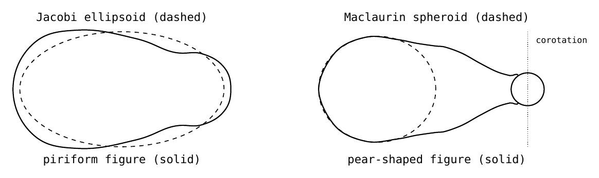
洋梨体を外側へ押すもの：流れ、次いで閉じ込められた圧力。洋梨体は、本体の裏側の開口部の状態によって決まる二つの段階で成長する。それらの開口部が開いている間、圧力はそこから逃げるが、効果なしにではない。圧力は、深部の供給源から洋梨体と本体を通って裏側の出口に至る、構造の全長に沿った流れを生じさせる。この流れは裏側とそのクレーター記録を築き（Paper 6, クレーター）、物質を洋梨体の外端へ運び、細い部分を高温に保つ。その後、裏側の開口部は封じられる。我々は二つの原因がともに作用したと提案する。開口部は宇宙空間の冷たさにさらされ、また洋梨体が成長するにつれ、本体の遠い部分は地球の焦点から遠ざかり、地球の熱をより少なく受けるようになった。結果は連鎖反応である。熱が減り、裏側の月の海が封じられ、残る出口が減り、圧力が上昇し、洋梨体が伸びる。裏側の月の海の大部分はこのようにして封じられ、一種の閉じたドームを形成し、圧力がそれを内側から押す。それ以降、圧力は閉じ込められ、上昇する物質の重さは共回転線でゼロへ向かうので、洋梨体は外側へ加速する。理由は §C.5 と同じである。線の近くでは重力と外向きの振り出しがほぼ釣り合うので、そこの物質はほとんど重さをもたず、もはや逃げない閉じ込められた圧力はそれを容易に外側へ押すことができる。
裏側とは異なり、表側の洋梨体の基部は高温の地球に面しており、本体が付着している間は封じられない。分離の瞬間、地球の圧力は月に届かなくなり、それとともに月の内部圧力と放出も止んだ。表側の大きな月の海はそのとき高温で粘性が低く、それゆえその表面は凍った湖のように滑らかである。それらはその後、数億年から10億年ないし20億年かけて、ゆっくりと外側から内側へと固化した。地球のごく近くでまず Serenitatis が、分離後に Imbrium が固化した。その上のクレーターの大部分は小さい。解放後、地球が投げ出した小さな滴と中程度の滴が月に引き寄せられ、それらを作ったのである（§C.11）。裏側の古い開口部は解放前にすでに封じられていた。裏側の月の海の一つは例外である。Moscoviense は他が封じられた後も長く活動を続けた。著者は、Serenitatis がまだ内部にあった間に、両者の間の内部を通るまっすぐな通路に沿って Moscoviense が Serenitatis から供給を受けており、それゆえこれほど長く活動を続けたと提案する。
流れは洋梨体の細い上部を引きずりによって引き伸ばすのではない。それが運ぶものとそれがもたらす熱によって引き伸ばすのである。次の表は両方の効果を、Part A の供給率、洋梨体の細い上部である Part A（幅3,000 km、長さ約6,000 km）、および密度3,000 kg/mのメルトについて検証する。
| 量 | 100 Myr の供給（ kg/s） | 600 Myr の供給（ kg/s） |
|---|---|---|
| 流れの平均速度 | 3.5 cm/yr | 0.6 cm/yr |
| 細い部分に沿った Péclet 数 | 約6,600 | 約1,100 |
| 運ばれる熱流量 | W | W |
| 熱が維持しうる凍結した皮殻 | 約7 km | 約44 km |
| 壁にかかる粘性による引き、 Pa s | N | N |
| 連結部の荷重に対するその引き（ N） | 0.004% | 0.0007% |
二つの列は Part A の供給の二つの期間、すなわち月の全質量が1億年で供給される場合と6億年で供給される場合である（最終行について、以前の版では600 Myr の供給に対して0.0006%としていた）。Péclet 数は、流れが洋梨体に沿って熱を運ぶ速さと、熱が伝導によって外へ漏れ出す速さを比較する。数千程度の値は、流れが熱を漏れ出しうるよりはるかに速く運び込むことを意味する。凍結した皮殻とは、流れが内部を高温に保つ間に細い部分に形成されうる冷たい外側の殻である。流れがもたらす熱が多いほど、皮殻は薄い。最後の2行は流れが壁に及ぼす引きずりを与え、それを §C.2 の荷重と比較する。
引きずりは無視できるが、熱はそうではない。流れが壁に及ぼす粘性による引きは連結部の荷重の100分の1パーセント未満である。移流、すなわち移動する物質による熱の運搬は伝導を3桁上回り、半径1,500 km の細い部分で凍結するのは数キロメートルから数十キロメートルの皮殻にすぎない。したがって流れの役割は熱の運搬に尽きる。細い部分は洋梨体が外側へ引き出される間、溶融した軟らかい状態を保ち、本体はその中心が線に達すると、この高温で露出した接触面で分離を始め、そのわずかに外側で引き離される（§C.8）。これが、わずかにしか抵抗しない §C.5 の高温で軟らかい接触面である。
C.8本体が離れる場所：その中心が線に達する
本節では、解放がどこで起こるか、そしてなぜ本体が落下して戻るのではなく軌道に乗って離れるのかを定める。本体はその質量中心が共回転線に達すると分離を始め、線の約210 km 外側で最終的に解放される（§C.5a; Paper 2, §B.8）。そこでは回転とともに運ばれる速さが円軌道の速さであり、線の外側では共回転の力が本体を外側へ引く。その下の内部圧力がこれを助ける。線の半径は緯度とともに変わる。緯度では線はにあり、1日5.77時間において km である。線が赤道から離れるにつれ外側へ移るのは、ある緯度では本体が中心からの距離よりも自転軸に近く、より小さな円を描いて回るからである。回転の速さが軌道の速さに等しくなるには、より外側になければならない。
| 月の中心の緯度 | 解放時の距離（線上） |
|---|---|
| 0° | 16,399 km |
| 5° | 16,441 km |
| 10° | 16,567 km |
| 15° | 16,782 km |
| 22.5°（Paper 4） | 17,287 km |
| 25° | 17,511 km |
距離は緯度とともにゆっくりと増大し、赤道と22.5°の間で888 km、約5%増す。採用した解放、すなわち22.5°における17,287 km を太字で示す。
この半径では本体は剛体ロッシュ限界（密度2,600 kg/m³ で10,314 km）のはるか外側にあり、剛体の球形化した外殻によって保持されている（Paper 7, §C.5）。接触面はまた構造全体で最も弱い点でもある。それは本体の皮殻が覆わなかった唯一の場所であり、高温の洋梨体が本体と接する場所である。
洋梨体が月に対して行うこと：持ち上げ、そして運び回す。洋梨体は月に対して同時に二つの方向に作用する。半径方向には、月を持ち上げる。洋梨体を外側へ引き出す圧力は、その先端の本体を地球の表面から共回転線まで、約 J の重力的な代価で持ち上げる（§A.12）。横方向には、月を運び回す。月は付着しているので、洋梨体は月を地球とともに回転させ、月が1キロメートル上昇するごとに、新しい距離における回転の横方向の速さを与えられねばならない。そのイメージは、回っている回転遊具の上を外側へ歩く子どもである。外側へ行くほど、遊具についていくためにより速く横方向に動かねばならず、遊具はその速さを与えるために子どもを押さねばならない。洋梨体は接触面を通してその速さを供給し、線上でそれが与えた速さは、ちょうどそこでの円軌道の速さである。
| 解放 | 月の中心 | 与えられた横方向の速さ、 | 円軌道の速さ | 与えられた角運動量 |
|---|---|---|---|---|
| 赤道 | 16,399 km | 4.96 km/s | 4.96 km/s | kg m/s |
| 22.5° | 17,287 km | 4.83 km/s | —（Paper 4） | kg m/s |
赤道上では二つの速さは等しく4.96 km/s である。これが「線上」の意味である。22.5°では横方向の速さはである。月は自転軸のまわりに半径の円を描いて回るからである。そこから導かれる軌道は Paper 4 で計算する。角運動量、すなわち質量×横方向の速さ×軸からの距離であり、外部のトルクが作用しないときに保存される「回転の量」を最後の列に示す。ここでは地球の自転軸のまわりに月の質量を用いて計算している。Paper 2 と Paper 4 は解放時の軌道についてを与える。これは赤道上の同じ量を、換算質量を用いて二体軌道について書いたものであり、より1.2%小さい。
角運動量の収支。洋梨体が月に渡す角運動量は系全体の約6分の1であり、地球の自転から差し引かれる。これは中心へ集まる核が相殺する減速である（Paper 2, §A.4）。持ち上げは月を線まで運び、回転とともに運ぶことは、月が到着したときに軌道にとどまる速さを与える。地球から投げ出された本体は前者をもち、後者を欠く。
なぜ本体は投げ出されるのではなく、運ばれねばならないのか。回転は本体に外側へ増大する速さを与えるが、軌道は距離とともに減少するを必要とする。両者は共回転半径でのみ一致する。線の下で解放された本体は、どのような外向きの押しを受けても落下して戻る。外向きの押しは高さを加えるが、軌道の横方向の速さを加えないからである。表は1日5.5時間の地球におけるそのような本体を追跡する。「最高点」と「最低点」は、軌道の地球の中心からの最遠距離と最近距離である。最低点が地球の半径を下回ることは、本体が地球へ戻ることを意味する。
| 解放位置（5.5 h） | 外向きの押し | 最高点 | 軌道の最低点 |
|---|---|---|---|
| 8,991 km | なし | 8,991 km | 909 km：地球の内部へ |
| 8,991 km | 6 km/s | 17,037 km | 867 km：地球の内部へ |
| 8,991 km | 7 km/s | 24,433 km | 854 km：地球の内部へ |
| 15,500 km | 1.4 km/s | 20,241 km | 11,396 km |
| 15,800 km | 0.35 km/s | 16,904 km | 14,733 km |
最初の3行は、地球上の低い位置に載った本体の頂部である8,991 km から出発する。外向きの押しがどれほどであっても、7 km/s であっても、軌道はなお中心から約900 km、地球の深部まで下がる。押しは最高点を上げるが、横方向の速さを与えないので、最低点をほとんど動かさない。線に近い15,800 km で解放された最後の2行（1日5.5時間では線は15,818 km にある）のみが地球から遠く離れたままであり、そこでは小さな押しで十分である。線上そのものでは押しはまったく必要ない。
付着したままの上昇こそが、本体に軌道の横方向の速さを与える。洋梨体は成長する間、回転に遅れずについていく。外側へ運ばれる物質は角運動量を得なければならず、洋梨体がそれを供給する。しかし Part A の供給率では、これが洋梨体の細い上部に要求するせん断応力は0.03 Pa 程度にすぎず、溶融した粘性のある連結部にとっては無視できる。したがって遅れは断裂ではなく傾きをもたらす。軸から遠く運ばれる洋梨体の外側部分は地球の回転に遅れ、洋梨体全体が先端の月とともに後方、すなわち西へ傾く（§B.1）。月がなお必要とする角運動量は接触面を通して月に届く。線上では本体は円軌道の速さをもち、線の約210 km 外側で解放されるとそれよりわずかに大きい速さをもち、解放点を近地点とするほぼ円の軌道で離れる（§C.5a; Paper 4）。重力がそれをその軌道に保ち、より速く回転する地球に本体が生じさせた潮汐が、その後の数百万年にわたってそれを前方かつ外側へ引き出す。
C.9洋梨体が要求するもの
洋梨体は大きな構造であり、モデルはその代価、すなわち質量、エネルギー、角運動量を説明しなければならない。本節ではその要件をまとめる。それぞれが、機構が自らに課す条件である。
質量。§C.7 の幅について、密度3,000 kg/m³ において、地球の表面から接触面までの構造は地球の質量の約11%、すなわち月質量の約9倍（§C.7 の9,000 km の基部）を含む。基部9,000–11,000 km に対しては月質量の約9倍から12倍を含む。構造の全体が共回転線の内側に限られているので、連結部の残留物は軌道に残らない。解放後、分別作用がそれを数千万年から数億年かけて地球へ回収し、地球は再び丸くなる。その重い部分は洋梨体の基部の下で地球の深部へ沈み（Part E）、その前面と背面は太平洋の縞と弧へ回収される（Paper 9; §C.7）。
エネルギーの代価。回転する場の中で洋梨体の質量を持ち上げるには約 J の仕事を要する。これは月そのものを持ち上げるのに要する仕事の5倍以上（5.4倍）である（以前の版では約6倍としていた）（§A.12）。このエネルギーを解放する進化、すなわち J 程度のエネルギーを放出する鉄の核への沈降は、上昇を駆動するものと同じ進化である。完全な収支は要件として引き渡す（§D.1）。鉄が沈むにつれて手放す重力エネルギーは、桁としては洋梨体を持ち上げるのに十分である。
角運動量と熱。洋梨体の伸長は地球の自転を遅くし、中心へ集まる核はそれを速める。Paper 2（§A.4）は両者を考慮している。戻るにあたり、洋梨体はその位置エネルギーを熱として放出し、それは母天体の熱史に加わる。
圧力。供給源は本体に加えて洋梨体も持ち上げ保持しなければならない。§A.9–A.13 の圧力検定は洋梨体の質量を用いて繰り返す必要がある。
母天体の扁平化の補正。圧力検定は球対称の場の上で行った。実際には、母天体の扁平化（）は、内向きの重力を赤道上で中心から9,000 km において約3%、緯度25°N において1.4%、柱が母天体を離れる赤道表面そのものにおいて5.4%増大させる（以前の版では「表面近くで最大3%」としていた）。外側の柱に沿って代価は約3%上昇し、たとえ持ち上げの代価全体が3%、約4 GPa 上昇しても、10.49 GPa の圧力の余裕がそれを担う。扁平化は赤道上の共回転線を約50 km 外側へ移す。（は、惑星の重力場における赤道隆起の標準的な尺度であり、ここでの値は回転する母天体の値である。）
形状そのもの。上記の幅と質量は、流れのない一様密度の円形断面に基づく。内部から加圧され、先端に本体を担う回転する地球の平衡形状は、残された計算である。
C.9a若い地球のまわりに環はない
割れ目から蒸気を噴出する、高速で回転し揮発性成分に富む若い惑星は、自らのまわりに環を形成しうる。蒸気は上昇し、より高所で氷と塵に凝縮し、軌道速度で惑星のまわりを回る。本モデルの若い地球のまわりには、四つの物理的・力学的な理由により、そのような環は形成されえなかった。
洋梨体がその場所を掃いた。洋梨体は共回転線まで、1日1回地球とともに回転した。線の内側では、自由な環の物質は洋梨体の回転より速い軌道速度で動くので、塵と蒸気の粒子は洋梨体に追いつき衝突する。洋梨体の帯で凝縮したものはすべて洋梨体に集められ、その先端で成長する本体の物質となった。
揮発性成分には道があった。幅広く高温の連結部は、揮発性成分に富むメルトを本体へと運び上げた（Part A）。噴出する惑星が宇宙空間へ失うものを、地球は月へ供給した。
高温すぎ、太陽に近すぎた。若い地球は高温で、ケイ酸塩蒸気の大気に包まれていた（Paper 6, §J.3）。軌道上の環が定着しうる高度では、水は氷に凝縮しなかった。
月が残りを一掃する。解放後、剛体ロッシュ限界の約7,200 km 外側にある質量の大きな天体である月（§C.5a）は、その潮汐力と軌道共鳴によって、軌道上のいかなる残存物も除去したであろう。
月はこの不在の記録を携えている。環を通過する天体は機械的に摩耗する。そのくぼみは削られて浅くなり、その縁は丸くなり、その小さなクレーターは消され、天体そのものの質量は減少する。Deimos の滑らかな表面はその一例である。月の高地は飽和したクレーター記録を保ち、月はその質量を保った。月は環を通過したことがない（Paper 6, §L.8）。
C.10本体は何からできているか：一つの洋梨体からの三つの層
洋梨体は本体を運ぶだけでなく、本体が何からできているかを決める。本節では、月の三つの層、すなわち地殻、マントル、核のそれぞれを、洋梨体におけるその由来までたどる。
地殻：シアルの先端への滑り。洋梨体は運ぶものを分別する。構築領域の上では、母天体の外層はシアル質、すなわち軽くケイ素とアルミニウムに富み、その下のより高密度でマグネシウムに富むシマの上にある。シアルは乾いてはいなかった。二つの層の境界は「潤滑されて」おり、洋梨体が外側へ引き出されるにつれ、シアルはシマの上を洋梨体の側面に沿って先端まで滑り上がった。これは自転の力のもとでの外向きの分別作用の方向であり、潤滑された境界がせん断のもとでの滑りを容易にした。先端が解放されたとき、シアルはそれとともに移り、その外側の皮殻となった。上部ドームの上では外殻として、下部ドームの環帯の上では本体が載っていて本体とともに剥がれたシアルとしてである（§C.4a）。接触面においてのみ、シアルは熱によって溶け去った。裏側が厚い地殻を担うのは、そこに圧密シアルの多くの層が、繰り返し回帰した物質とともに集積したからである（§B.7）。シアルの一部は表面にとどまらず、月の内部に入った。
マントルと核：沈降柱。皮殻の下では、本体は供給物、すなわち圧力によって持ち上げられ洋梨体に沿って運ばれた地球自身のマントルである。月の金属はすべて地球由来である。多くの鉄が洋梨体に入ったが、先端に近づくほど少なかった。洋梨体の全体が共回転線の内側にあるので、それに沿った有効重力は地球を向いている。そのため重い物質は洋梨体を沈み戻り、軽い物質は先端へ上昇した。そもそも圧力は約3,864 kg/mより軽い物質しか持ち上げない（§A.10）。洋梨体は沈降柱として働いた。振った瓶の中で砂が水の下に沈むように、重い粒子は沈み、軽い粒子は上昇する。したがって洋梨体に入った鉄の大部分は、解放後に洋梨体の残りとともに地球へ戻った。月が保ったのは先端に達したものだけである。分離の瞬間、重い核物質は本体の最後の3分の1にあった。それは共回転線を越えず、洋梨体を下って戻った。これが月の核が小さい理由である。それは先端に達した地球の鉄であり、洋梨体の中の核物質の大部分は地球へ戻った。洋梨体に沿って流れた流れは、Mare Imbrium と Mare Serenitatis を通して熱と鉄に富む物質を本体へ運び込んだ。Serenitatis は剥がれるまで、Imbrium は分離まで、地球内部からの供給を月の内部へとつなぐ開口部であった（§B.4）。
表は、モデルの各層を月で測定されたものと並べて示す。
| 層 | モデルにおいて | 測定されたもの |
|---|---|---|
| 地殻 | 先端へ流れ集まり、先端とともに解放されたシアル。その一部は内部へ運ばれた | アルミニウムに富む斜長岩質の地殻。裏側で厚く、表側で薄い |
| マントル | 圧力によって持ち上げられ、洋梨体に沿って運ばれた地球のマントル | カンラン石と輝石。酸素同位体は地球のものと区別できない |
| 核 | 先端に達した地球の鉄。洋梨体の中の核物質の大部分は地球へ戻った | 半径約330 km の核[5]。月の質量の1–2パーセントであり、地球では3分の1である |
各行は一致する。アルミニウムに富む層からのアルミニウムに富む地殻、地球のマントルからの地球の酸素同位体をもつマントル、そして鉄の大部分が洋梨体を下って戻ったための小さな核である。
質量の収支と組成の検定。収支はこれを許す。太平洋海盆ほどの大きさの領域に広がる厚さ30 km のシアル層は、外殻の密度2,800 kg/mにおいて約 kg を含み（以前の版ではとしていた）、これは月の地殻の質量の約4倍である。月の質量の最大10分の1のシアルが内部へ運ばれたとすれば、平均密度は約65 kg/m低下し、アルミニウム含有量は約1.5パーセント増加するが、これらの値は現在のモデルの不確かさの範囲内にある。ここから一つの検定が導かれる。月の地殻の斜長岩はカリウムとトリウムに乏しいが、地球のシアルはそれらに富む。地球のシアルからなる地殻は、外側の皮殻の溶融と精製の過程でそれらを失ったはずであり、最も古い月の斜長岩の組成がそれを検定する場である。
C.11解放後：地球は投げ出し続ける
解放は地球の活動を終わらせなかった。その開口部は放出の中心として働き続け、物質を投げ出し続けた。その大部分は地球に落下して戻り、一部は、そのとき地球半径の数倍の距離から遠ざかりつつあった独立した天体である月に達した。月が遠ざかるにつれ、物質は月に達するためにより速く地球を離れねばならなかった。物質はすべてきわめて高温であった。大きな天体が最初に放出され、マグマの嵐が徐々に鎮まるにつれ、小さくまだ高温の天体が放出されたので、月に達する天体の大きさは時とともに小さくなった。月はこの記録を受け取り、三つの指標において保った。
| 測定されたもの | 結果 | 出典 |
|---|---|---|
| 高地の最後の小クレーター、月の海はすべて計算から除外 | 表側に1–2 km の新鮮なクレーターが1.19倍多い（範囲1.12–1.27）、同条件の比較 | Paper 6, Study 9 |
| 月の海の底 | 固化の時期の順に並ぶ。最後に固化した接触面の月の海が最も清浄 | Paper 5, Study 7 と 12 |
| 月の海の上のクレーターの状態 | 連続的な段階：大きく溶融したもの、中程度で崩れたもの、小さく鋭いもの。大きな天体は早く、小さな天体は遅く、すべて高温 | Paper 5 と 6、共通部分 |
緑で示す第1行は直接の測定である。比較を同条件とするため両側で月の海をすべて計算から除外し、高地のみについて見ると、表側は裏側の1.19倍の直径1–2 km の新鮮なクレーターをもつ。第2行と第3行は月の海の中に同じ歴史を読み取る。底は順に固化し、その上のクレーターは大きく溶融したものから小さく鋭いものへと段階的に変わる。
地球に面した表側は、接触面の熱とそれ自身の月の海によって古いクレーターの集団を早く失い、最後のクレーターをより多く受け取った。月にクレーターをまき散らした最後のものは地球であった。この記録は連結部の記述を締めくくる。解放された本体は静かな母天体から切り離されたのではなく、開口部がなお活動しており、月が遠ざかるにつれてその活動が衰えていった地球から切り離されたのである。文献が小クレーターを解釈するように外部からの天体の流入を考えるならば、表側の過剰は予測されず、軌道上の月の前進側にわずかな過剰が予測されるだけである。
予測、検定、結論
読者は、どの結果が検定可能であり、どのように検定されるかを知らねばならない。我々は定性的な一致を独立した証明として数えるのではなく、要件を一つの検定行列にまとめる。
Part A–C は機構を構築した。Part A は内側からの供給の代価を見積もり、Part B は外側から上昇した外殻をたどり、Part C は洋梨体とその解放を通して両者を結びつけた。この Part は同じ結果を検定に変える。それらを一か所にまとめる理由は単純である。モデルは自らに似た特徴を常に見つけることができ、そのような一致を一つずつ数えてもほとんど何も証明しない。決定するのは、各要件を数値または幾何で述べることができるか、そしてそれを確かめる測定または計算が存在するかである。したがって下の表の各行は、主張、その背後にある定量的な要件、そしてそれを確かめる検定を示す。
D.1機構の検定
行列は行ごとに読む。最初の6行は機構そのものに対する要件（圧力、速度、エネルギー、安定性、冷却、解放）である。次の4行は Part B の持ち分の規則から導かれる月の表面と地殻についての予測である。最後の3行は解放点と洋梨体の行方に関するものである。
|
主張 |
基本仮定と定量的要件 | 検定 |
|---|---|---|
| 圧力下の供給 | が経路に沿って成り立つ | 同じ質量プロファイル上での状態方程式と圧力場の解 |
| 構築速度 | 過程に利用可能な時間にわたる正味の供給の積分がを供給する | 粘性、開口幅、時間に依存する粘性流 |
| エネルギー | 系の進化が、エネルギーを保存しつつ持ち上げの仕事と損失を供給する | 重力、自転、熱、離脱する物質の完全な収支 |
| 安定した付着本体 | 全方向の応力の釣り合いと物質の連続的な通過 | 自由境界をもつ三次元力学解 |
| 強化される外部と可動な基部 | 外部の冷却と内部の可動性が時間的に重なる共通の領域 | 熱とレオロジーの釣り合いの連成解 |
| 連結部と解放 | 適切な解放状態まで荷重を担い、その後に破壊する | 連結部における応力、形状、流れの進化の解析 |
| 段階の順序 | 外向きの球形化、次いで扁平化、次いで内向きの球形化が分離前に十分進行する。放出は全期間を通じて続き、大規模な流出は扁平化の段階に起こる | Part A と Part B に共通のタイミングモデル |
| 持ち分の規則 | 外向きの球形化において、各部分は表面積における自らの持ち分を保つ（§B.4） | 接触面の中心（24.1°N 335.2°E）のまわりの三つの同心帯の地図化：約の冠である接触面、までの帯である剥がれた環帯、その外側の上部ドーム。盆地の種類と地殻の厚さと対照する（Paper 11） |
| 運ばれた記録 | 露出した外殻の上に形成されたクレーターはそれとともに移動し、その大きさを変えない。内向きの球形化において両極がそれらを集める | 最古の集団は裏側で最も密で、帯では中程度、冠で最もまばらである。裏側と表側の間に規模の差はない。帯ごとのクレーター統計とサイズ検定（Paper 7, §D.5） |
| 層状の裏側地殻 | 裏側の地殻は圧密シアルの多くの層であり、先端へ移動したシアルと繰り返し回帰した物質から層を重ねて築かれた。分別作用は時とともに進行し、後の流出ほど軽く流体に富む（§B.7） | 裏側地殻の鉄含有量は深さとともに増大し、早い層ほど鉄に富み、表側よりも多い。中央丘の組成を起源の深さに対して、裏側と表側を比較して読む |
| 線上での解放 | 月は質量中心が共回転線に達すると分離を始め、線の約210 km 外側で解放される。接触面はわずかにしか抵抗せず、本体は力強く外側へ引かれる（§C.5, C.8） | マージン、約210 km、厚さ約105 km の接触面（§C.5a。以前の版では約100 km、厚さ20–50 km の接触面に対して40–100 km としていた） |
| 洋梨体は北へ傾く | 1.9°N 付近の基部から先端は約22.5°N に達する。回転は赤道へ向かって押し、傾きは赤道の北の深部供給源から斜めに上昇する供給に由来する（§A.4, B.1） | 深部供給源と供給経路の幾何を、洋梨体の基部の位置と対照する（Part E） |
| 洋梨体はまるごと回収される | 洋梨体はその全体が共回転線の内側に限られる（§C.7, C.9）。分別作用は解放後数千万年から数億年かけてそれを地球へ回収し、その重い部分は洋梨体の基部の下で地球の深部へ沈む（Part E） | 連結部の残留物は軌道上に存在しない。洋梨体の基部は太平洋の下の深部領域の上にある（Part E） |
各行の読み方。第1行は Part A の圧力収支を1行にまとめたものである。供給源の圧力は、静水圧水頭（供給源から共回転線まで持ち上げられる物質の柱の重さ）、連結部の上に立つ本体の荷重、および経路に沿った粘性流の損失の和を上回らねばならない。Part A は、約3,864 kg/m³ より軽いいかなる深部メルトについても、この残差が正であることを見出す。第2行は供給が十分に速いかを問う。正味の流れを時間について積算したものが、過程に利用可能な時間内に内部質量を供給しなければならない。シナリオではその時間は、隆起の開始から3.873 Ga の解放まで約6億年であり、隆起と洋梨体に約400 Myr、扁平化に約100 Myr、解放までにさらに約100 Myr である。1億年は感度の検討例として残す（Part A）。検定は、許される粘性と開口幅の全範囲にわたる流れである。流れは十分に速くなければならず、通路は本体が完成するまで開いたままでなければならない。
第3行から第6行は、エネルギーが存在するか、付着した本体が三次元で安定か、その基部が可動なままでその外部が硬化しうるか、そして連結部が適切な瞬間まで荷重を担い、その後に屈するかを問う。それぞれは許される領域全体にわたる計算によって確かめられる。進化する地球が放出するエネルギー、質量が集められる間まとまりを保つ本体、時間的に重なる冷却と可動性、そして早すぎて屈することも（本体が落下して戻るか分解する）、永久に保持することもない連結部である。第7行は事象の順序を定める。本体はまず外向きに球形化し、次いで扁平化し、次いで内向きに球形化し、この系列は分離前に十分進行する。これは供給、冷却、連結部の破壊に共通の一つのタイミングモデルによって確かめられる。
次の4行は月そのものに書き込まれた予測である。持ち分の規則によれば、押しつぶされた本体が外向きに球形化したとき、その表面の各部分は全体に対する自らの割合を保った。接触面は接触面の中心のまわりの約の表側の冠となり、剥がれた環帯はまでの帯となり、上部ドームは残りのすべて、すなわち裏側である。この規則は、盆地の種類と地殻の厚さを接触面の中心 24.1°N 335.2°E からの角距離に対して地図化することで検定される（Paper 11）。運ばれた記録によれば、露出した外殻の上に形成されたクレーターはそれとともに移動しその大きさを保ち、両極は内向きの球形化の段階でそれらを集めた。最古のクレーター集団は裏側で最も密で、帯ではそれより疎で、冠で最もまばらであり、裏側と表側の間に規模の差はないはずである。これは帯ごとのクレーター統計とサイズ検定によって確かめられる（Paper 7, §D.5）。層状の裏側地殻によれば、裏側は層の上に層を重ねて築かれ、後の層ほど軽く流体に富むので、鉄含有量は深さとともに増大し、それは表側より裏側で大きい。衝突クレーターの中央丘は既知の深さから物質をもたらすので、起源の深さに対するその組成がプロファイルを測定する。
最後の3行は解放とその後に起こったことに関するものである。線上での解放：月は質量中心が共回転線に達すると分離を始め、線の約210 km 外側で解放される（、厚さ約105 km の接触面。§C.5a の解放距離の探索）。接触面はわずかにしか抵抗せず、本体は力強く外側へ引かれる。これはスパチュラ尾根を引き上げたのと同じ引きである。これは Paper 2 と Paper 4 の軌道が要求する解放である。洋梨体は北へ傾く：基部は1.9°N 付近にあり、先端は約22.5°N に達した。回転のみでは物質は赤道へ向かって押されるので、北への傾きは、赤道の北の深部供給源から斜めに上昇した供給に由来しなければならない。これは深部供給源と供給経路の幾何、および基部の位置と対照して確かめられる（Part E）。洋梨体はまるごと回収される：洋梨体は、地球の重力が回転の外向きの引きを上回る共回転線の内側にその全体が限られていたので、そのいかなる部分も軌道にとどまることはできなかった。それは地球の一部であり、解放後、分別作用が数千万年から数億年かけてそれを地球へ回収した（Part E）。
一つの密度の例はその例についてのみ語るのであって、付着した供給のあらゆるシナリオについて語るのではない。また一つの圧力検定に合格しても、それだけで安定性、エネルギー、連結部が決着するわけではない。単一のパラメータの組がすべての要件を満たさねばならない。これが本論文の自らに課す基準である。13の行はモデルを支持する13の独立した票ではなく、同じ地球、同じ供給、同じ本体が同時にすべてを満たさねばならない13の条件からなる一つの体系である。
D.2月の上で探すことのできる結果
本節は、機構が今日の月のどの特徴に直接関わるか、そしてそれぞれがどこまで検定として使えるかを問う。
熱的・構造的な非対称。一方の側がより長期の供給と加熱を受け、反対側がより早く冷却したならば、二つの半球の間に熱的・構造的な非対称が予想される。モデルでは、表側は供給の真上の接触面に載ってより長く高温を保ち、裏側は宇宙空間に露出し冷却する上部ドームであった。非対称の符号と強さは外部の物質、混合、後期の進化にも依存する。GRAIL（月の重力場を詳細に地図化した一対の探査機）のデータは地殻の密度と厚さに制約を与える [4]。観測とモデルの要件との完全な比較はPaper 11 に属する。
質量中心のずれ。質量中心のずれは密度分布の全体に依存する。月の質量中心はその外形の中心と一致する必要はなく、両者の距離は で与えられる。ここでは月の質量、はその体積、は外形の中心から測った微小体積の位置、はその点における密度の平均からのずれである。言葉でいえば、平均より密なすべての場所は質量中心を自らへ引き寄せ、平均より軽いすべての場所はそれを遠ざけ、それぞれは中心からの距離によって重み付けされる。
したがって、密度コントラストと補償を選ばずに、冠の厚さのみから質量中心のずれを導くことはできない。一方の側の厚い地殻は、地殻がその下の物質より軽い分だけ、そしてより深い層がそれを釣り合わせるように調整していない（アイソスタシー補償）程度においてのみ、質量中心をその側から遠ざける。同様に、地震学的に調べられた月の金属成分の存在[5] は、モデルにおいて適切な移送と分離の機構（洋梨体の沈降柱、§C.10）を要求する。しかしそれは、金属が Part A で提案した赤道の北の集中した供給領域を通って特に到来したことを証明するものではない。
独立した予測の条件。識別力のある観測的予測は、方向、幾何、組成、年代の定められた組み合わせでなければならない。観測への当てはめから導かれた数値は、その観測の独立した予測ではない。モデルが測定値を再現するようにパラメータを選んだならば、その一致を後から成功として数えることはできない。ドームの上に運ばれたクレーター記録は §B.6 で述べ、Paper 11 と Paper 6 で検定する。
D.3新規性と結論の範囲
本研究は、LEF の回転の枠組みの中で、圧力、速度、質量、応力の要件からなる単一の体系を通して、付着した本体の内部構築を検討する。Part Aの特定の結果は、通路を広げると半径方向の支持と流れは容易になるが、連結部の質量が増し、横方向の荷重は取り除かれないということである。より広い管は物質を押し通しやすく、その物質の柱をより容易に支えるが、広いほど重く、回転する系の横方向の引きはそれに作用し続ける。Part B の特定の結果は、6,000 km の接触面の上に載り、上部ドームが縁から約3,650 km の高さにある月質量の本体が、 m³ の体積を囲むということである。これは解放時の球の m³ の2倍であり、したがって本体は Part A が要求する発泡密度1,300 kg/m³（気泡で満たされたメルトの低い密度）をもつ。裏側の地殻と露出帯は同じ幾何から導かれる。裏側は層の上に層を重ねて築かれ、表側は剥がれた。Part C は両者を結びつける。Part A が要求する広い接触面は Part B のドームの基部であり、共回転線において本体は分離を始め、線の約210 km 外側で解放される。
新規性の表明。重力、圧力、流れの方程式は標準的な物理学である。本研究の貢献は LEF のアーキテクチャと合同検定の適用である。専用の文献調査なしに、モデルのすべての構成要素について歴史的な先取権を主張するものではない。出典と分類の地図は Appendix A に示す。
本論文は、実現可能性の分析、一つの明確な否定的結果、すなわち圧力のみを伝える質量のない円筒形の通路は月を築くことができないという結果、そしてそれに答える一つの幾何学的結果をもって終わる。否定的結果が要求する広く高温で質量のある連結部は洋梨体の幅広い先端であり、それは地球の重力によって保持された地球の一部であり、発泡密度で月の質量の本体を担う。否定的結果は最も単純な描像、すなわち圧力のみが月を押し出す細い管という描像を閉ざす。幾何学的結果は、物理学が実際に要求する連結部が追加の仮定ではなく、地球そのものがとる形であることを示す。深部の状態方程式、エネルギーの放出、三次元構造は、機構が引き渡す三つの要件であり、それぞれ §D.1 でその検定とともに述べている。
D.4結論
結論は本論文の順序に従う。検定体系(1)、圧力(2)、通路(3)、冷却(4)、横方向の荷重(5)、洋梨体と解放(6)、先端の上の本体(7)、そして地殻と引き渡される要件(8)である。
付着した本体の内部供給の過程は、質量、圧力、運動量、エネルギーの収支を通して定式化できる。本論文はこの機構のための定量的な検定体系を定義する（§D.1）。
定義された球対称の圧力検定において、深部の密度3,500 kg/m³ は荷重と損失の前に10.49 GPa の余裕を残し、密度4,000 kg/m³ は不合格となる。述べた仮定のもとでゼロの閾値は約3,864 kg/m³ である。これより軽い深部メルトは供給源の圧力によって共回転線まで持ち上げることができ、より重いものはできない。
非赤道状態の合同検定において、選んだ入力に対しては、約1,000 km の通路半径が半径方向の釣り合いの閾値である。すでにこの閾値において外側の区間の質量は月質量の約0.46であり、系の収支において無視することはできない。供給を担うのに十分な幅の通路は、それ自体で月のほぼ半分の重さをもつ。
熱勾配は、内部が可動なままで外部がいかにして強化されうるかを検討する基礎を与える。最終的な厚さと構造の保存の決定には、熱とレオロジーの連成解が必要である。
横方向応力の検定は、選んだ状態において、半径方向の断面を通した圧力のみによる支持を排除する。非赤道の計算は、検定した例においてニュートン程度の連結部の要件を課す。半径方向成分がゼロであっても全荷重は消えず、それだけで分離が決まるわけでもない。
球形化、圧力、自転は、広い連結部からの分離にともに関与する。隆起は地球の一部である洋梨体へと引き伸ばされ、その先端が本体となる。本体はその質量中心が共回転線（赤道上で約16,400 km、緯度22.5°で17,287 km）に達すると分離を始め、内部圧力の助けを得て線の約210 km 外側で解放される（§C.7–C.8）。洋梨体は月を半径方向に持ち上げ、月が付着しているので、それに軌道の横方向の速さを与える。解放後、分別作用は数千万年から数億年かけて洋梨体をまるごと地球へ回収する。その重い部分は洋梨体の基部の下で地球の深部へ沈み、その前面側は北太平洋の縞へ、その背面は西太平洋の弧へと回収される（Paper 9, 縞; Part E）。質量は地球を離れない。それは外側の高所から内側の深部へと移動する。
本体は洋梨体の幅広い先端の上に載る。それは6,000 km の接触面の上で押しつぶされた本体であり、その上部ドームは約3,650 km の高さにあり、発泡密度は1,300 kg/m³ である。本体は各部分が表面積における自らの持ち分を保ちながら外向きに球形化する。接触面は約の表側の冠となり、剥がれた環帯はまでの帯となり、上部ドームは裏側となる。本体はその後扁平化し、内向きに球形化する。
裏側の地殻は地球のシアル（シリカとアルミニウムに富む軽い外殻）と繰り返し回帰した物質であり、圧密シアルの多くの層で、月質量のわずかな割合をなす。表側の地殻は本体とともに剥がれた下部ドームのシアルであり、接触面の上で熱によって平滑化され、開口部である月の海の下で最も薄い。残りの94–96%は Part A の深部物質である（以前の外殻の描像からの見積もりであり、再計算を要する）。露出の順序は月の上に三つの同心帯として書き込まれている。クレーターはその大きさを保ち、両極がそれらを集める。裏側の地殻は深さとともに密になり鉄に富む。これらは検定とともに Paper 11、Paper 6、Paper 7 に引き渡される予測である。破壊の時期、三次元の安定性、深部の状態方程式、エネルギー収支は、機構が自らに課す四つの要件であり、それぞれ §D.1 でその検定とともに述べている。
ここまでに得たものは、それぞれが固有の検定をもつ条件の体系として述べられた機構である。Part E は、系のうち離れなかった唯一の構成要素、すなわち洋梨体をたどる。
洋梨体が地球に残したもの
洋梨体は、その中へ上昇した鉄の大部分を携えて地球へ回収された。洋梨体は今日見られる地球深部に対してどこに立っていたのか。そして立っていた間、地球内部に何をもたらしたのか。
月は離れ、洋梨体は残った。洋梨体の物質はすべて共回転線の内側にあったので、月を追って軌道に入ることはできなかった。解放後、分別作用が数千万年から数億年かけて、それを担っていた地球の半球へ回収した。その質量は地球を離れなかった。それは外側の高所から内側の深部へと移動した。これほど大きな質量、すなわち深部で鉄に富む、地球自身の物質の月質量の9倍から12倍が、洋梨体が立っていた太平洋の下の領域に回収された。この Part は、洋梨体の基部が、今日その領域の底に地震波画像が示すものに対してどこにあるか、そして洋梨体が立っていた間に地球内部に何をもたらしたかを記録する。深部領域の性質は未解決のまま残す。
E.1マントル底部の二つの領域
地球深部は地震波トモグラフィーによって画像化される。地震は惑星全体に波を送る。数千の観測点で記録されたその到達時刻は、波が平均より速く、あるいは遅く進んだ場所を明らかにする。医療用の CT スキャンが多数の X 線の経路から体の画像を構築するのとほぼ同じである。物質を横方向に揺らすせん断波（S 波）は、温度と組成にとりわけ敏感である。物質がより高温、より軟らかい、あるいは異なる組成である場所でその速度は低下する。
地震波による画像化は、地球のマントルの底部に、せん断波速度の低い大陸規模の二つの領域を見出している。一つはアフリカの下に、一つは太平洋の下にある。それぞれ水平方向に数千キロメートル広がり、核–マントル境界から約1,000 km の高さに達する[11]。これらが大規模低速度領域（LLVPs）である。核のすぐ上の最下部マントルの広大な領域で、せん断波がゆっくり伝わる。大部分の観測は熱化学的な性質、すなわち温度だけでなく組成においても周囲のマントルと異なる物質であることを支持しており、両領域はその上のプレートのプルームとホットスポットの下に位置する。それらは今日も上部マントルを押している。プルームとはマントル深部から上昇する高温物質の柱であり、それが表面に達する場所で、Hawai‘i の火山のようなホットスポットを供給する。
両領域は互いに似ていない。アフリカの領域はより高く立ち上がり、太平洋の領域はより低く広い。その縁、Hawai‘i の下には、鉄に富むきわめて低速度の物質がある。超低速度帯（ULVZs）は核–マントル境界上の薄い斑状の領域であり、そこでは地震波が大規模領域そのものよりはるかに強く遅くなる。高い鉄含有量は、それらについて提案されている解釈の一つである。
領域の性質はなお議論されている。それらは、例えば分別を終えなかった核に関連する物質であるかもしれず、あるいはなおきわめてゆっくりと分別しつつある物質であるかもしれない。本研究はそれらの解釈を提案しない。それらを、洋梨体が立っていた太平洋の下の領域の地図としてのみ用いる。
E.2洋梨体が立っていた場所
洋梨体は太平洋の下の領域の上に立っていた。解放後、分別作用はそれを地球へ回収した。その重い部分、すなわちその中へ上昇した鉄の大部分を携えた月質量の約9倍のシマ（§C.10）は、洋梨体の基部の下で地球の深部へ沈んだ。その前面側は北太平洋の縞へ、その背面は西太平洋の弧へと回収された（Paper 9, 縞）。シマは、軽いシアルの下にある、シリカとマグネシウムに富むより高密度の物質である。それが携えた鉄はそれをさらに高密度にした。今日太平洋の下に見られる深部構造のいずれかの部分が洋梨体に関連しているかどうかは、ここでは扱わない。本論文は、その構造に対して洋梨体の基部がどこにあるかのみを記録する（§E.4）。
E.3領域の他の解釈
これらの領域は最近、Theia のマントルの残存物として提案された。Theia とは、受け入れられている説において衝突によって月を形成した天体である。その鉄に富むマントルは地球のマントルの底部へ沈み、そこで生き残ったとされる [12]。その提案の著者は、Theia を含まない別の月の起源であれば、領域の起源を再考する必要があると指摘している。Edwards [14] は、原始太平洋領域の上でその物質を軌道へ打ち上げた爆発によって、別の方向から月を領域に結びつけた。本研究は独自の解釈を提示しない。本モデルでは洋梨体は地球自身の物質であり、異質なものは何も地球のマントルに入らなかったことを指摘するのみである。
E.4基部の位置
一つの測定が洋梨体を地球深部に結びつける。その基部の位置である。
位置：測定済み。モデルは洋梨体の基部をKiritimati 付近（約1.9°N、157.5°W、§B.1）に置く。その点は太平洋の領域の上にあり、検定したすべてのモデルにおいて、公表された最下部マントルのモデルにおけるその境界の内側にある（表と図14）。Cottaar & Lekic [17] のクラスター分析の五つのトモグラフィーモデルはすべてその点を低速と分類し、その点は深さ2,800 km における SMEAN [18] と SMEAN2 [19] の両方の等値線の十分内側にあり、最も近い縁から1,200 km 以上離れている。基部は領域の北部の上、その中心から約1,500 km 北に立っている。Hawaii 付近の大きな超低速度帯 [20] は、核–マントル境界上で測って、その点から約1,100 km にある。
検定に用いた三つの尺度にはそれぞれ短い説明が必要である。異なる研究グループは異なるデータと手法から異なるトモグラフィーモデルを構築し、それらはあらゆる細部で一致するわけではない。投票地図はこの不一致を計数に変える。Cottaar & Lekic [17] は最下部マントルの各点を、五つのモデルのそれぞれにおいて低速、中立、高速に分類した。投票数はその点を低速とするモデルの数である。5分の5は、すべてのモデルがその点を低速領域の内側に置くことを意味する。SMEAN と SMEAN2 は複数のせん断波モデルの平均である。はその深さにおける平均からのせん断波速度のずれであり、したがってはそこで波が平均より2.25%遅く伝わることを意味する。等値線は領域の標準的な輪郭であり、その十分内側にあって縁が千キロメートル以上離れている点は、境界上の例ではない。
表の経度202.5°E は157.5°W と同じであり、0から360°へ東向きに進む尺度で書いたものである。基部は洋梨体の足跡の東端である。中心を25°N、165°E 付近とする以前の供給源領域の読みは、西と北へ傾いた洋梨体の背面である（§B.1）。Paper 9（縞）は、先端の痕跡を北太平洋の縞の二つの屈曲の間、幅3,360 km、中心9.3°N、169.3°E、基部の約3,760 km 西に位置づけ（以前の版では3,770 km としていた）、洋梨体の背面を西太平洋の弧に位置づける。本節は、その下に重い部分が沈んだ基部に関するものである。
| 1.9°N、202.5°E における尺度 | 参照モデル、深さ | 結果 |
|---|---|---|
| 「低速」の投票 | Cottaar & Lekic, 2,550–2,850 km | 5モデル中5モデルがその点を低速と分類（完全な一致） |
| 等値線の内側 | SMEAN、せん断波の平均、2,800 km | 等値線の内側にある；；縁まで1,584 km |
| 等値線の内側 | SMEAN2、せん断波の平均、2,800 km | 等値線の内側にある；；縁まで1,229 km |
| 低速領域の中心 | 三つのトモグラフィーモデルの照合 | 11.1–11.8°S、195.7–200.0°E；南南西へ1,476–1,657 km |
| Hawaii の ULVZ の中心 | Cottaar & Romanowicz、マントルの底部 | 17.5°N、192.5°E；地表で2,050 km、核–マントル境界で1,120 km |
緑の行は、その点を領域の内側に置く三つの尺度である。最後の2行は、その点を領域内に位置づける。座標は洋梨体の基部を太平洋の低速領域の北部、その中心から北北東へ1,476–1,657 km に置く。三つのモデルはいずれもその中心を赤道の南に置くことで一致している。洋梨体の基部と Hawaii の ULVZ の中心との距離は、地表での2,050 km から核–マントル境界でのわずか1,120 km へと縮まる。この縮小は、二点間の同じ中心角が、半径が地球の半径のおよそ半分である核–マントル境界の上ではより短い距離に相当することによる。
図14は地図そのものの上で測定を示す。Kiritimati 付近の点は、両方の平均モデルの破線の等値線の内側、そして五つのモデルすべてが一致する投票地図の最も濃い色調の上にある。
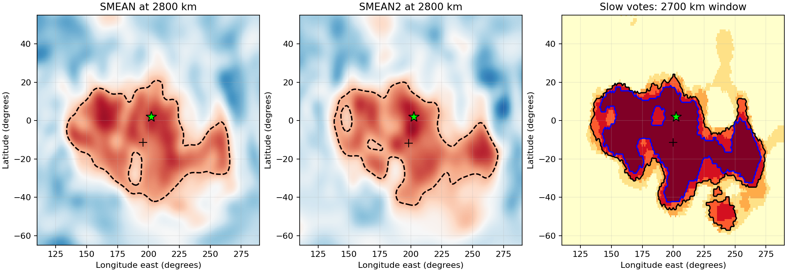
プルーム玄武岩の同位体的特徴。本モデルでは洋梨体は地球自身の物質から築かれ、異質な物質は何もマントルに入らなかった。ここから地球化学的な予測が導かれる。いずれの領域から上昇するプルームも、地球にとって異質な成分をもたない、地球自身の同位体的特徴を担うと予想される。同位体とは質量がわずかに異なる同一元素の変種であり、その比は太陽系の天体ごとに異なるので、起源の指紋として働く。
E.5洋梨体の時期の地球の核
洋梨体は表面にのみ影響したのではない。立っていた間、それは地球の内部にも作用した。本節の問いは、これほど大きな付着した質量が地球の深部内部に何をもたらしたか、そしてその記録が残存しえたかである。
初期状態。その初期の段階では、地球にはほとんど核がなかった。それは形成途上の地球であった。その層はまだ定まっておらず、層構造の最初の兆候が現れていたにすぎず、その中心には広い前核、すなわち後に核となるが周囲のものからまだ分離していない物質があった。この天体が回転して洋梨体を外側へ引き出し始めると、広い前核も同じ形をとった。外側の洋梨体へ向かって伸びる、引き伸ばされた内側の洋梨体である。
洋梨体の引き。洋梨体が立っていた間、地球自身の物質の月質量の7倍から12倍が、地球の表面と中心から約15,400 km の間で、地球の一方の側に立っていた（以前の版では16,000 km としていた）（§C.7 は、基部9,000–11,000 km に対して解放時に月質量の8.8–12.1倍を与える）。その重力場は中心に達する。前核は周囲の物質より高密度であり、内部全体に作用する場の中で、液体中のおもりのように、押しのけた物質の引きがそれを釣り合わせるまで洋梨体へ向かって引かれ伸ばされる。洋梨体は独立した天体ではなく地球の一部であるので、地球全体はそれに向かって動かない。その場は内部に定常的な場として作用する。
表は、最も狭い基部と最も広い基部について、洋梨体の開始時と解放時の地球の中心における場をまとめる。正味の場は、洋梨体の引きと月のわずかな引きの和から遠心項を差し引いたものである。地球、洋梨体、月は、地球の中心から洋梨体の側へずれた共通の質量中心のまわりをともに回転し、この回転が地球の中心に洋梨体の側から離れる向きの加速度を与える。洋梨体が成長しその引きが増すにつれ、色は表の下へ向かって深まる。
| 段階、洋梨体の基部の幅 | 洋梨体の重力場 (m/s²) | 月の重力場 | 共通の質量中心のまわりの遠心項 | 中心における正味の場 |
|---|---|---|---|---|
| 開始、基部9,000 km | 0.430 | 0.029 | 0.378 | |
| 開始、基部11,000 km | 0.496 | 0.029 | 0.434 | |
| 解放、基部9,000 km | 0.466 | 0.016 | 0.393 | |
| 解放、基部11,000 km | 0.613 | 0.016 | 0.517 |
キロメートル単位の変位はここでは与えておらず、与えることもできない。それには定まった核、その周囲の定まったマントル、そして両者の間の剛性が必要であるが、その段階ではそのいずれも存在しなかった。表は引きとその方向のみを与える。我々は、内側の前核が、洋梨体が立っていた間、すなわち隆起の開始から3.873 Ga の解放までの約6億年の大部分にわたって、洋梨体へ向かって伸びていたことを提案する。この方向は一つの仮定に基づく。深部の供給源に残された欠損が、供給が上昇する間に周囲の物質によって埋められ、広げられたという仮定である。中心の近くにそのまま残された欠損は逆向きに押すであろう。
補償と前核の緩和。解放後、分別作用は洋梨体を数千万年から数億年かけて徐々に地球へ回収し、その物質は洋梨体が付着していた地球の半球に広がった。この層が補償されないまま残ったとすれば、それは内部をその半球へ向かって引き続けるであろう。そのような層の中心における場は0.53–0.73 m/s² である。ここでは層の質量、は地球の半径であり、この式は、球の表面の半分を覆う薄い層が球の中心に及ぼす引きである。しかし流体のマントルの上に置かれた軽い層は補償されないままではない。その下のマントルが調整し、補償された荷重の遠方場は小さい。補償とは、筏が自らの重さを押しのけるまで水に沈むように、各点の下の柱が再び同じ重さになるまで、マントルが追加された表面荷重の下で流れる過程である。追加された質量はそのときその下の欠損によって釣り合わされ、中心から見ると両者はほぼ打ち消し合う。内側の前核はそのとき緩和して中心へ戻る。要するに、洋梨体が立っていた間、前核はそれへ向かって伸び、洋梨体が回収された後に緩和した。
検定。検定は要件および研究の糸口として述べる（Paper 12）。洋梨体の側にそろった核の半球構造であり、内核の東西非対称がその第一の候補である。固体の内核を横切る地震波は、その東半分と西半分で異なる速さで伝わる。核が形成されつつあった間に前核が洋梨体へ向かって伸びていたならば、成長する核はその側を記録したかもしれない。内核が月よりはるかに若い場合、この検定は弱まる。後に形成された内核は記録を担わないからである。
ここまでに得たものは洋梨体の行方の全体である。解放後、分別作用はそれを地球へ回収し、その重い部分はその基部の下に沈んだ。その場所の上には、今日深部領域が見られ、その性質は未解決のまま残される。基部は検定したすべてのモデルにおいて太平洋の領域の内側にある。そして洋梨体が立っていた間、広い前核はそれへ向かって伸び、洋梨体が回収された後に緩和した。
今後の研究：研究の糸口
Part A–C は、今後行うべき計算のための境界条件と入力パラメータを定義する。以下のリストは、他の研究グループが取り組む用意のある研究を示す。各項目は、本論文が準備するが実行しない計算と、その結果が置き換えるか検定する節を挙げる。
付着した本体の三次元シミュレーション。初期状態は完全に規定されている。すなわち、体積半径6,517 km で5.5時間で回転する母天体の上の幅6,000 km の先端に載り、供給源圧力150 GPa で基部の接触面を通して供給される、密度1,300 kg/m³ の月質量の本体である。平滑化粒子流体力学（SPH）法または有限要素法（FEM）による計算は、ドームの安定性、§C.4 の球形化の系列、§C.5 の解放マージンを同時に検定するであろう。どちらの手法も本体を多数の小要素に分割し、その間の力を一歩ずつ追跡する。これは、この種の自由で変化する形状が必要とするものである。
深部メルトの状態方程式。供給は、上昇に沿って3,864 kg/m³ より軽いメルトを要求する（§A.10）。50–150 GPa における水と炭素に富むケイ酸塩液体の実験と、同じ組成の第一原理分子動力学を組み合わせれば、この要件が満たされるか、どの揮発性成分含有量で満たされるかが決定される。状態方程式とは物質の圧力、温度、密度の間の関係である。メルトに溶けた水と二酸化炭素はその密度を下げる。
母天体のエネルギー放出。持ち上げの代価は J 程度である（§A.12）。鉄が沈み、地球が蒸気大気のもとで収縮し冷却する若い地球の熱進化モデルは、そのエネルギーが利用可能になる速さ、したがって供給の継続期間を与えるであろう。
高温ケイ酸塩層の Stefan 付着。解放マージン（§C.5）はニュートン流体層を仮定する。部分溶融層で結合された二つの物体の分離（キャビテーション（空洞の形成）、くびれ形成、粘性破壊から脆性破壊への遷移）に関する室内実験と数値研究は、マージンの範囲と解放時間を定めるであろう。Stefan 付着とは、薄い粘性層がそれが結合する二つの面の分離に対して示す抵抗であり、蜂蜜を挟んだ2枚の板を引き離すときに感じる力である。ニュートン流体層とは、その抵抗が変形される速さに単純に比例する層である。
層状の裏側地殻。裏側は、次第に分別が進んだ物質の層によって築かれた（§B.7）。裏側と表側について別々に、中央丘の組成をその起源の深さに対して比較すれば勾配が測定され、構築のモデルはその段階を予測するであろう。
洋梨体の時期の地球の核。まだ定まった層をなしていない若い地球について、洋梨体が立っている状態と回収された後の状態の三次元静水圧モデルを構築し、供給源の欠損を追跡すれば、広い前核がどのように洋梨体へ向かって伸び（§E.5）、その後どのように緩和したかが示されるであろう。今日の内核の半球構造が比較すべき第一の記録である。
表側の地殻。下部ドームの環帯のシアルは本体とともに剥がれた。接触面の上ではそれは溶け去り、表面は熱と重力によって平滑化された（§C.4a）。接触領域の熱モデルはその溶融の深さ、したがって剥離帯の地殻の厚さに対する接触面の上の地殻の厚さを与えるであろう。
露出帯による月の海の分類。開口部はすべてが同じように振る舞ったわけではない（§B.5）。Imbrium は物質を放出せず、Serenitatis も、わずかな破裂を除けば放出しなかった。著者の34–36の開口部のうち他の大部分は物質を放出した。裏側のものは封じられるまで早期に、周縁部のものは長期にわたって放出した。放出しなかった接触面の月の海と放出した月の海との違いは、各盆地の組成、二次クレーター場、その下の地殻の厚さにおいて検定可能である（Paper 11, R8）。
コードの入手
本論文のすべての数値結果は、LEF 再現パッケージ（Python 3, numpy, scipy）のスクリプトによって再現される。このパッケージは、本文に述べた入力から各節の値を出力する。パッケージは補足資料（LEF_code_and_data.zip）としてこのプレプリントに添付されている。シリーズとパッケージの以前の版はdoi:10.5281/zenodo.22743615 に寄託されている。
参考文献
[1] Batchelor, G. K. (1967). An Introduction to Fluid Dynamics. Cambridge University Press. 運動量収支の方程式、流体の応力、粘性流の出典。数値的見積もりとその LEF への適用は本論文で導出する。
[2] Hauri, E. H., Weinreich, T., Saal, A. E., Rutherford, M. C., & Van Orman, J. A. (2011). High Pre-Eruptive Water Contents Preserved in Lunar Melt Inclusions. Science, 333, 213–215. https://doi.org/10.1126/science.1204626.
[3] Goldblatt, C., Robinson, T. D., Zahnle, K. J., & Crisp, D. (2013). Low simulated radiation limit for runaway greenhouse climates. Nature Geoscience, 6, 661–667. https://doi.org/10.1038/ngeo1892.
[4] Wieczorek, M. A., et al. (2013). The Crust of the Moon as Seen by GRAIL. Science, 339, 671–675. https://doi.org/10.1126/science.1231530.
[5] Weber, R. C., Lin, P.-Y., Garnero, E. J., Williams, Q., & Lognonné, P. (2011). Seismic Detection of the Lunar Core. Science, 331, 309–312. https://doi.org/10.1126/science.1199375.
[6] Turcotte, D. L., & Schubert, G. (2002). Geodynamics, second edition. Cambridge University Press. Part B と Part C で用いるレオロジーの枠組み、地形の粘性緩和、薄層の付着（Stefan）の出典。
[7] Mortimer, N., et al. (2017). Zealandia: Earth’s Hidden Continent. GSA Today, 27(3–4), 27–35. DOI 10.1130/GSATG321A.1. 太平洋地域が大陸地殻を含まないわけではないという注意のために引用。
[8] Poincaré, H. (1885). Sur l’équilibre d’une masse fluide animée d’un mouvement de rotation. Acta Mathematica, 7.
[9] Walter, S. A. (2023). The Poincaré pear and Poincaré–Darwin fission theory in astrophysics, 1885–1901. Philosophia Scientiae, 27(3), 159–187. doi:10.4000/philosophiascientiae.4178.
[10] Cartan, É. (1928). Sur la stabilité ordinaire des ellipsoïdes de Jacobi. In J. C. Fields (Ed.), Proceedings of the International Mathematical Congress, Toronto 1924.
[11] Garnero, E. J., McNamara, A. K., & Shim, S.-H. (2016). Continent-sized anomalous zones with low seismic velocity at the base of Earth’s mantle. Nature Geoscience, 9(7), 481–489.
[12] Yuan, Q., Li, M., Desch, S. J., et al. (2023). Moon-forming impactor as a source of Earth’s basal mantle anomalies. Nature, 623, 95–99.
[13] de Meijer, R. J., Anisichkin, V. F., & van Westrenen, W. (2013). Forming the Moon from terrestrial silicate-rich material. Chemical Geology, 345, 40–49. doi:10.1016/j.chemgeo.2012.12.015.
[14] Edwards, M. R. (2026; online 2025). Explosive lunar fission above a large low-velocity province. Acta Geochimica, 45, 15–29. doi:10.1007/s11631-025-00834-2.
[15] Lock, S. J., & Stewart, S. T. (2017). The structure of terrestrial bodies: Impact heating, corotation limits, and synestias. Journal of Geophysical Research: Planets, 122, 950–982. doi:10.1002/2016JE005239.
[16] Denton, C. A., Asphaug, E., Emsenhuber, A., & Melikyan, R. (2025). Capture of an ancient Charon around Pluto. Nature Geoscience, 18, 37–43. doi:10.1038/s41561-024-01612-0.
LEF シリーズ内の内部参照（著者の原稿）： 1, モデル：モデルの叙述。2, LEF 機構：原理：共回転、洋梨体、相殺、角運動量収支、ロッシュ限界。4, 軌道：解放後の軌道進化。5, 月の海。6, クレーター：回帰物質とクレーター。7, 極：付着した本体の球形化。8, South Pole–Aitken。9, 縞。10, 火星。11, 要件：露出帯による盆地の分類を含む観測的検定。原稿への参照は、モデルの結果の外部的な確認ではない。
[17] Cottaar, S., & Lekic, V. (2016). Morphology of seismically slow lower-mantle structures. Geophysical Journal International, 207, 1122–1136. doi:10.1093/gji/ggw324.
[18] Becker, T. W., & Boschi, L. (2002). A comparison of tomographic and geodynamic mantle models. Geochemistry, Geophysics, Geosystems, 3, 1003. doi:10.1029/2001GC000168. (SMEAN.)
[19] Jackson, M. G., Konter, J. G., & Becker, T. W. (2017). Primordial helium entrained by the hottest mantle plumes. Nature, 542, 340–343. doi:10.1038/nature21023. (SMEAN2.)
[20] Cottaar, S., & Romanowicz, B. (2012). An unusually large ULVZ at the base of the mantle near Hawaii. Earth and Planetary Science Letters, 355–356, 213–222; corrected table, 390, 327 (2014).
[21] Hut, P. (1981). Tidal evolution in close binary systems. Astronomy and Astrophysics, 99, 126–140. §C.5a の解放距離の探索で用いる一定時間遅れ潮汐方程式の出典。
著者、データ、手法
Zohar Duran（ゾハル・ドゥラン）、独立研究者、イスラエル、ラムラ。ORCID: 0009-0005-3194-9387.
データの性質。本論文は新たな定量的観測データセットを提示しない。著者に帰する供給源の位置と形状の解釈は地形学的仮説であり、その完全な復元手法はここでは提示していない。観測文献はモデルを検定するための制約として用いる。
再現性。圧力、流れ、冷却の見積もりは、本文に詳述した入力データと方程式から完全に再現できる。Part C の連成状態は Paper 2 の計算に基づいており、その完全な再現には、そこに詳述した形状解と角運動量収支も必要であり、Paper 3 の圧力の方程式のみからは導かれない。結果の桁数は物理的な不確かさを反映するものではない。不確かさは主として構造と物質に関する仮定によって支配される。
出典、仮定、新規性
この付録は、確立された物理学とモデルの提案とを区別するために、本論文の構成要素をその位置づけによって分類する。あるものは教科書から取った標準的な物理学であり、あるものは制約として用いる既存の観測であり、あるものはここで行った計算であり、あるものは提案され検定されねばならないモデルの要素である。表は行ごとに読む。中央の列は各構成要素の分類を、右の列はその出典と議論において果たす役割を与える。こうして読者は、本論文のどの部分が確立された物理学に基づき、どの部分がモデル自身の提案であるかを一目で見ることができる。
|
構成要素 |
分類 | 根拠とモデルにおける役割 |
|---|---|---|
| ニュートンの重力、運動量収支、圧力 | 標準的な物理学 | 収支の方程式は本文で直接導出する。連続体力学は[1] に基づく。 |
| 円筒形の通路内の粘性流 | 標準的な物理学 | 古典的な Poiseuille 解[1]。通路へのその適用は明示的な近似である。 |
| 冷却と固化 | 熱収支による見積もり | 式(7)。熱的入力は採用した感度入力であり、太古の系の直接の測定値ではない。 |
| 包有物中の水、月の地殻と核 | 既存の観測 | [2]、[4]、[5]。制約として用いるものであり、特定の形成経路の検証ではない。 |
| 蒸気大気における放射限界 | 既存の研究 | [3]。その条件を付着した系の全体に写してはならない。 |
| 集中した供給源領域からの付着した供給 | モデルの要素 | 検定されるべき構造。単一の観測からも分別作用の過程のみからも導かれない。 |
| 圧力、流れ、荷重、通路の質量の組み合わせ | 本研究における計算 | 式(25)–(29)と半径の閾値。近似の限界を示すものであり、完全な三次元解ではない。 |
| 先端の上の本体と持ち分の規則 | 本研究における計算 | Part B：上部ドームの高さと密度、表面積の持ち分、帯の角度。変形解ではなく幾何学的な規則である。 |
| 解放時の接触面の抵抗 | ここで適用した標準的な物理学 | Stefan の法則[6]、ニュートン流体の薄層モデル。小さな抵抗。共回転線の約210 km 外側での解放（; §C.5a）、本体は外側へ引かれる。 |
| 以前のすべての構築モデルに対する先取権 | 証明されていない | 本論文は排他性の証明も既存研究の網羅的な調査も主張しない。 |
表中の二つの用語には説明が必要であろう。Poiseuille 解は、管を通る粘性流体の定常流に関する標準的な結果である。流量は管の半径の4乗とともに増大し、それゆえ Part A では通路の幅が決定的なパラメータとなる。Stefan の法則は、薄い粘性層で結合された二つの面を引き離すのに必要な力を与える。ここではそれによって接触面の抵抗（小さな抵抗）を見積もり、解放は共回転線の約210 km（）外側で起こる（§C.5）。
定数と再現の限界
この付録では、本論文全体を通じて用いる定数と、本論文のみから何が再現でき、何が再現できないかを述べる。
本論文のすべての数値計算において、、1年 = 365.25日、1日 = 86,400秒とする。はニュートンの重力定数であり、二つの質量の間の重力の強さを定める。流れの表において、粘性、区間の密度、通路の幅、供給の継続期間、内部の割合は検定の入力である。それらは問題の範囲を探るために選んだものであり、太古の地球の測定値ではない。同様に、冷却の式における、、の値は見積もりのための数値的仮定であり、それらについて検証された太古の物質の範囲は提示しない。ここでは熱伝導率、はメルトが固化するときに放出される潜熱、は冷却を駆動する温度差である。
Part D の表は Paper 2 の角運動量保存と形状の状態から導かれる。質量、距離、周期、緯度が与えられれば、力と応力は式(19)–(20)から、合同検定は式(25)–(29)から再現できる。自転周期そのものの証明には Paper 2 の形状解と角運動量収支が必要であり、それは Paper 3 の圧力の方程式からは導かれない。言い換えれば、本論文は5.77 h の1日と解放距離を Paper 2 から所与として受け取り、それらから計算するすべてはここで確かめることができる。1日そのものは Paper 2 で確かめられる。
表の多い桁数を、モデルの小さな不確かさに読み替えてはならない。密度、流れの境界、連結部の形状、本体の構造における不確かさは、丸め誤差より重要である。10.49 GPa のような値を4桁で印字するのは、読者が計算の各段階を正確に繰り返せるようにするためであって、余裕がその精度で知られているからではない。Paper 3 の最終的な結果は、述べた近似の範囲内での実現可能性の制約である。
AI ツールの使用：著者は、計算スクリプトの作成と実行、カタログと地図の分析、図と表の作成、シナリオの議論、ならびに言語の校正と翻訳のために AI アシスタント（Claude, Anthropic; ChatGPT, OpenAI; Google の AI ベースの検索アシスタント）を用いた。モデルとその結論は著者のものである。著者は内容を確認し、その全責任を負う。